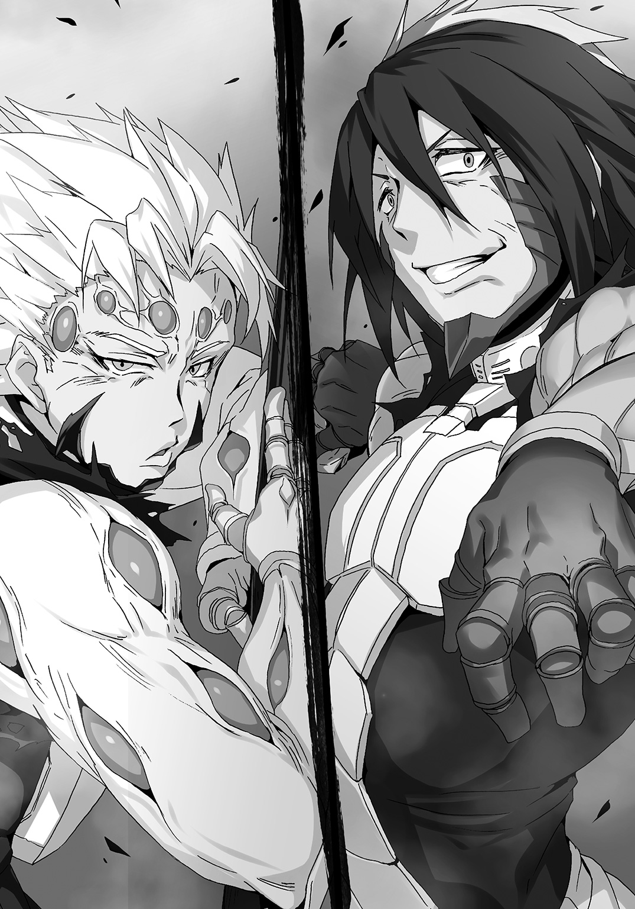

| テラフォーマーズ THE OUTER MISSION III ザ・パートナー | |
| 藤原健市 & 貴家悠 & 橘賢一 | |
この本は縦書きでレイアウトされています。
また、ご覧になる機種により、表示の差が認められることがあります。
 ダッシュエックス文庫DIGITAL
ダッシュエックス文庫DIGITAL
テラフォーマーズ THE OUTER MISSION
ザ・パートナー
藤原健市
原作／貴家 悠・橘 賢一
口絵・挿絵／ニリツ
Ⅰ マヤ神話の地へ
鼻腔に粘り着く青臭さ。濃密な草木の匂い。
じっとりと肌に絡まるような湿度と温度の高い空気。
高さ一〇メートル以上まで茂った熱帯性植物のせいで薄暗く、視界が悪い。
その上、足下はぬかるんだ腐葉土だ。一歩踏み出す度に、くるぶし近くまで足が埋もれる。歩きづらいこと、この上ない。
「......おいトーヘイ。この不快指数一〇〇パーセントオーバーの状況、どうにかしてくれ」
相棒、エリザベス・ルーニー――リジーが戦闘服の袖で頰の汗を拭い、半眼で恨みがましく言った。綺麗な顔立ちだが、今は不愉快さを満面に表している。
トーヘイ・タチバナは苦笑で返す。
「僕に言われても。熱帯雨林のジャングルの環境は、こういうものらしいからね」
トーヘイもリジーも、Ｕ―ＮＡＳＡアネックスクルーと同型の戦闘服姿である。ただし正規クルーの戦闘服が白なのに対し、できそこないのトーヘイたちのものは、灰色だ。
トーヘイは両脇に一丁ずつ、計二丁の拳銃を吊っている。ファイブセブンレプリカという貫通力の高い弾丸を放つ特殊な銃だ。
リジーは腰の左右に一つずつ、大振りなナックルガードを提げている。素手ではどう見てもサイズオーバーの代物である。
トーヘイはブーツをぬかるみから引き抜いた。ずぼりという音と、泥の感触。
「ジャングルの地面がぬかるんでいるのは、雨期だけと聞いたことがある。落ち葉や枯れ木は腐葉土になる前にシロアリとかに分解し尽くされ、土は割と瘦せているらしい」
「じゃあ、この泥は嫌がらせってところか、ったく。地球上のジャングルなんか全部、焼夷弾で焼き払っちまえってんだ。ずいぶんとすっきりするだろうよ」
「......ジャングル以外もすっきりするだろうけどね、それじゃ。地球の酸素の大半を作っているのが、こういうジャングルだから」
トーヘイは近くの太い樹の幹を軽く叩いた。樹皮の下のみずみずしさを感じさせる、重い響きが拳に返ってくる。よくできている、と感心した。は、とリジーが短く笑う。
「酸素不足で他の地方の動物まで死に絶えるってか？ なら火星に放り込んだ例の苔でもばらまきゃいいじゃねえか。たった五〇〇年かそこらで火星に呼吸可能な大気を作ったんだろ？」
名案だろと言いたげにリジーが表情を明るくした。
苔。火星のテラフォーミング計画において、最初の段階でとある生物と共に、火星に投入された特殊な苔のことだ。
トーヘイの苦笑が濃くなる。
「......酸素の問題だけなら、それで解決できそうだけどね。それだと増えた苔を食料に、予想外の生物が、予想外のでたらめな進化をしそうじゃないか」
あー、とリジーが声を漏らして呆れ顔になる。
「奴ら。そういえば苔だけ喰って、あんなふうになったんだっけ。凄えな、苔。どんだけ栄養あんだよ」
「リジー。不快感で頭回ってないよね？」
「おう。適当なことを言うのには自信があるぜ？ こんなサウナみてえな空気の中で、頭なんか使ってたまるかって――」
軽い調子のリジーの声が、ふと途絶えた。トーヘイも表情を引き締め五感に意識を集中する。
ざざ、と前方から枝葉が揺れる音が聞こえた。ざざざ、と音が近くなる――
シダ植物特有のブラシのような葉が折り重なった向こうから、何かが接近してくる。
「トーヘイ。いいんだよな？」
「ああ。今日は躊躇わずに変身薬を使う。それがミッションだ」
トーヘイは前を見据えたまま、こくりと頷く。
「オーケイ！ 景気よく変態してやるぜ!!」
リジーが口角を吊り上げ不敵に笑い、上着のポケットから小さなシール薬を取り出した。
トーヘイもすぐさま同じ物を手にする。
哺乳類型用変身薬。Ｍ．Ｏ．手術で得た人外の力を解放する、特殊な薬だ。
Ｍ．Ｏ．手術は、とある生物の特異な臓器、免疫寛容臓を人体に移植して免疫を極限まで抑えた後に、人間に他の生物の遺伝子を組み込むという常軌を逸した人体改造の手段である。
昆虫の遺伝子をベースにしたバグズ手術が基礎技術であり、その後、魚類の遺伝子ベースでの成功を機にＭ．Ｏ．手術は発展し、は虫類、両生類、甲殻類、哺乳類、植物、さらにはもっと原始的な生物までもがベース生物になるようになった。
Ｍ．Ｏ．手術の成功率は現在三六パーセント。手術失敗は通常、死につながる。
数少ない手術失敗の例外がトーヘイやリジーだ。Ｍ．Ｏ．手術による免疫抑制が不完全なため、常時、大量の免疫抑制剤を錠剤の形で服用し続けなければならないが、手に入れた力は、本物だ。
トーヘイはドブネズミの、リジーはイエネコの生物的特性を身に宿し、さらに共通してツノゼミという昆虫由来の特性で能力を全体的に底上げしている。
その力を、シールタイプの変身薬を頸筋に貼ることで解放するのだ。
「おおおおッ！」
トーヘイは頸筋に変身薬を貼った。全身の神経を駆け巡る衝撃に雄叫びが自然と上がる。
小さなシール薬がトーヘイの肉体に劇的な変化をもたらした。
ドブネズミの特性を発現させるため、全身の細胞が一瞬で造り替えられる。
人ならざるものとして生まれ変わるのも同然だ。
耳朶が大型化し、頰に大気の微妙な動きさえ察知する長いヒゲが複数生え、手の甲にネズミの無限に伸びる前歯を応用したエナメル質の刃が備わる。さらに足の指が伸びて爪が鋭さを増し、腰の後ろにずるりと背ほどもある肌色の太い尾が生じた。
トーヘイと同時に、リジーの人為変態も完了する。
頭に獣毛がある猫に似た耳。手足も一回り以上大きくなり、猫と同じく出し入れ可能な爪が備わる。リジーの腰にも長い尻尾が生えるが、トーヘイの尾とは違って獣毛に覆われている。
六〇〇年前のブロードウェイで流行した、猫が題材のミュージカルの登場人物のような愛らしささえある猫と人間の混ざった姿で、リジーが牙を剝いて吠える。
「ッッッシャアッ!! コソコソしてねえで来やがれ、ゴキブリども!!」
「じ！」「じじ！」「じーッ!!」「じじじ！」「じ」「じじじじ！」
応えるように、茂みから異形たちが飛び出した。
テラフォーマーである。火星に送り込まれたゴキブリがわずか五〇〇年で進化した、人に似て決して人とは相容れない怪物だ。
テラフォーマーは本能的に人を嫌い、襲う。人間の天敵そのものである。
現れた数は六。通常のテラフォーマーは身体を覆う甲皮が黒いが、姿を見せたテラフォーマーたちはいずれも白く、さらには赤い複眼だ。
「チッ！ 気色悪い白い奴のほうかよ、ったく!!」
リジーが盛大に舌打ちした。
白いテラフォーマー。外部に流出したＵ―ＮＡＳＡ管理のクローンテラフォーマー卵鞘をサンプルに、正体不明の組織が独自に開発した、ショウジョウバエの遺伝子を組み込んだ改造テラフォーマーである。
一ヶ月半ほど前にトーヘイたちはこの改造テラフォーマーと遭遇し、撃滅した。戦闘の際に服に付着した体組織から、Ｕ―ＮＡＳＡがこのテラフォーマーを再現したのだ。
「叩っ殺してやるぜ！」
リジーが腰に提げていたナックルガードをすばやく装備した。ネコの特性が出現し大型化した拳にジャストフィットする。
「あたしが左の奴らを殺る！ トーヘイ、右は任せた！」
「任された！」
トーヘイは両脇のホルダーに手を伸ばす。最近は二丁の拳銃を操る訓練をしている。右脇の銃を左手で、左脇の銃を右手で抜き、即座に構えた。
自動拳銃は撃った弾丸の空薬莢を銃の右側上に発砲の反動で勢いよく排出する。そのため左手で普通に拳銃を構えると、空薬莢が顔の前を飛び、視界をわずかにだが妨げる。
視界が遮られる一瞬でさえ、敵がテラフォーマーならば致命的な隙になりかねない。
数メートル離れていたはずが、瞬き一つする間に眼前に迫られ、気がついた時にはテラフォーマーに首を宙に飛ばされている。そんなことが当たり前の敵なのだ。
一瞬の油断が命取り。その緊張感がトーヘイの心拍数を速くする。
心拍数が上がるに従い、トーヘイは茂みを搔き分けて迫り来るテラフォーマーたちの動きが遅くなって見えた。
心拍数が速く寿命の短い小型哺乳類であるドブネズミの特性だ。心臓が一分間に六〇〇回も拍動するドブネズミの時間感覚は人間のおよそ一〇倍。その加速感覚をトーヘイは持っている。
トーヘイへと迫るテラフォーマーは三体。まず先頭のテラフォーマーの頭を右の銃で狙い、胸を左の銃で狙う。
――頭に二発。胸の食道下神経節に二発。焦らず、落ち着いて、正確に狙い撃つ！
大脳と胸の食道下神経節を同時に破壊すれば、確実にテラフォーマーを仕留められるのだ。
加速した意識ほどは速く動かない身体で、トーヘイは左右同時に銃の引鉄を絞る。
発砲の反動を人為変態で跳ね上がった筋力で強引に押さえ込み、再び発砲。
次の刹那、狙ったテラフォーマーの額に二つ、胸に二つ、弾痕が穿たれた。
「ぎ」一瞬で意識と身体の自由を失ったテラフォーマーが、突撃の勢いそのままでぶっ倒れ、泥の中に顔から突っ込む。
次、とトーヘイは冷静に続くテラフォーマーに狙いを定めた。作業のように引鉄を絞る。
乾いた四つの発砲音がほとんど一つに聞こえるほどに重なり、頭と胸に穴が空いたテラフォーマーが倒れ伏す。
「じじッ!!」
二体を倒す間に、残りの一体がトーヘイの目の前に迫った。甲皮に覆われた大きな手でテラフォーマーがトーヘイに摑みかかる。摑まれたら、おしまいだ。
トーヘイはＭ．Ｏ．手術でドブネズミの特性を得ているとはいえ、昆虫型等の戦闘向けベース生物と比べれば肉体の強度は低く、筋力もそれほどは高くない。空手二段の腕前だが、徒手空拳でテラフォーマーと闘うにはリスクが多すぎる。
トーヘイは無意識に尻尾を操った。背ほども長く腕くらいの太さがあるドブネズミの尾を、人間サイズに拡大した尾だ。自在に動き、力も強い。背後の樹に尾を巻き付け、後ろに身体を強引に引っ張る。泥にくるぶしまで埋もれていた足が抜け、長い足の指が露わになった。
アネックスクルータイプの戦闘服は、人為変態に合わせて形状が変化する。ハーフブーツは変形して足を剝き出しにし、脛のガードになっている。
「じ？」
トーヘイの頭を狙った手が空振りし、テラフォーマーが疑問と思しき声を漏らした。そのわずかな隙にトーヘイは両足で尾を巻き付けた樹に着地し、横向きになったまま足で幹を摑む。
テラフォーマーがトーヘイへと顔を向ける。その額に二つ、胸にも二つ弾痕が穿たれる。
「よし」
樹に尾と足の指でしがみついたトーヘイが、横向きの姿勢で発砲したのだ。
人間には不可能な芸当である。ドブネズミの特性を持つトーヘイならではの戦闘方法だ。
トーヘイの戦術は『とにかくテラフォーマーから距離を取り、確実に銃で急所を撃つ』というスタイルだ。意識加速という精密射撃に適した特性がなければ、銃でテラフォーマーと闘うのは難しい。普通の感覚の射撃では敵が速すぎて急所を狙いきれないのである。
トーヘイが使っているファイブセブンレプリカとは、二〇世紀に存在したアサルトライフルに近い貫通力を持つ弾丸を採用した拳銃を、二六〇〇年代の技術で再設計、製造したものだ。
テラフォーマーの急所を破壊する威力があるのだが、テラフォーマーに対して有効な射撃を行う難度の高さ故、ファイブセブンレプリカの使い手は少ない。
Ｍ．Ｏ．手術で充分以上の戦闘力を生身の身体が有しているなら、こんな武器は不要なのだ。
リジーの戦闘スタイルが、それを証明している。
「かかってきやがれ白ゴキども!!」
リジーが足を肩幅に開き、ナックルガードを装備した拳を構えた。
「じ！」テラフォーマーが呼応するように殴りかかった。
人の頭など一撃で粉砕するテラフォーマーの右拳を、しかしリジーは笑みすら浮かべ、上半身だけの動きでするりと躱す。
「おらあッ！」
三〇センチは背が高いテラフォーマーの頭をめがけ、リジーがテラフォーマーの空振りした腕にかぶせて左フックを放つ。
その一撃で、テラフォーマーの右の赤い複眼もろとも頭が潰れた。テラフォーマーの甲皮は柔軟かつ強固だが、リジーが装備した特殊鋼のナックルガードの前にはウエハースも同然だ。
致命傷である。だがそれでもテラフォーマーは止まらない。食道下神経節が身体を動かし、リジーに摑みかかる。
「死んどけ!!」
リジーの右ストレートがテラフォーマーの胸をぶち抜いた。パンチの威力が背中を内側から爆破したように破壊し、臓器と甲皮が飛び散る。
「は！ 白い奴は脆えな!!」
リジーが絶命したテラフォーマーを突き飛ばし、嘲笑う。
「ぎ！」「じ！」
白いテラフォーマーはクローン製作された実験動物だ。テラフォーマーは知的生命体だが、クローン個体同士に仲間意識があるのかどうかはまだ研究途中で不明である。
しかし残り二体のリジーに対する敵意は膨れあがったらしい。凶暴化した猿のように歯を剝き、二体同時にリジーに襲いかかる。
「リジー！」とトーヘイは声を投じ、横向きに樹に足でしがみついたまま両手の銃を構えた。
「手を出すんじゃねえ!!」
リジーは全米ハイスクール女子ボクシングのバンタム級元チャンピオンだ。フットワークを生かしたボクサーファイタースタイルで、トーヘイもスパーリングで翻弄されたことがある。
だが、今は足場が悪い。ぬかるみの中ではフットワークなど使えるはずがなく、リジーは苦戦するはずだ――と、トーヘイは思っていたのだが違うようだ。
「足を止めての撃ち合いは得意だってのッ!!」
リジーが、頭が残像で複数に見えるほどの速さで上半身を振る。Ｍ．Ｏ．手術で得たネコの筋力と反射神経で、人の限界を超えてボクサーとしての技術を使っている。
テラフォーマーたちがリジーの頭に摑みかかるが、宙を摑む。
残像に惑わされているのか、単純に速度についていけないのか。
トーヘイには判断できないが、リジーにテラフォーマーが翻弄されているのは間違いない。
決着は一瞬だった。リジーの両手がぶれて見えた直後、テラフォーマーが二体ともぐらりと背後に傾き、そのままどしゃりと背中から泥に倒れた。
どちらのテラフォーマーも頭は割られたスイカのような有様で、胸には大穴が空いている。
「おしまいっと。こんなもんだ、どんなもんだ！」
リジーがテラフォーマーの体液でぬらぬらと光るナックルガードをトーヘイに掲げて見せた。
トーヘイは樹から降りると両手の銃をホルダーに戻し、こりこりと頰をかく。
「凄いの一言だよ。いいみたいだね、そのナックルガード」
「応よ！ ネコの手だと微妙に殴りにくかったんだが、コイツがあればオーガに棍棒だぜ！ 姫騎士だってクッ殺だ！」
「......どこで何の知識を仕入れたのか知らないけど、意味わかってる？」
「さあ？」
リジーがきょとんとした。そのタイミングで、ぶんっと周囲の景色がぶれて不鮮明になる。
直後。樹々は樹脂の柱に、足下は半透明のジェルに、空はコンクリートの天井に変わった。
ここは、ワシントンのＵ―ＮＡＳＡ研究施設にある特殊な戦闘訓練室の一つ。
ジャングルの環境は、シミュレータで再現した偽物だった。
本物なのは、白いテラフォーマーの死骸のみである。
『人為変態に不具合はないか？』
天井のどこからか、男の声がした。トーヘイは天井を仰いで応える。
「はい。僕は問題ありません。リジーも調子よさそうです」
リジーの尻尾がピンと立ち、それからゆるゆると揺れた。機嫌のよいネコの仕草そのものだ。
「おう！ 絶好調だぜ、ザッキー！」
『ザッキーと呼ぶな。カワラザキと呼べ』
トーヘイとリジーを管理しているＭ．Ｏ．技術研究者のカワラザキが、リジーの言葉に被せ気味に言った。意に介さずという感じでリジーが口を尖らせる。
「ザッキー、人為変態ありの定期訓練はいつものことだけどよ、何で今日に限ってこんなジャングルでのシミュレーションだったんだ？」
『次のミッションの任地の都合だ』
「次の？」「ミッション？」
トーヘイとリジーが顔を見合わせた。
『上層部より通達があった。任務だ、スカベンジャーズ。すぐに出発となる。任地は――』
カワラザキの言葉の途中で、リジーが全身で喜びを表した。
「イヤッフーッ!! トーヘイ、任務だってよ!! 退屈なシミュレーション訓練漬けともこれでおさらばだぜ!!」
人為変態したままのリジーがいきなりトーヘイに抱きついた。
「ちょ、ちょっとリジーっ？」
トーヘイとリジーの背の差はそれほどない。抱きつかれれば、トーヘイの頭とリジーの頭は同じ高さになり、トーヘイはリジーの髪の匂いを自ずと嗅ぐことになる。
ジャングルの環境をシミュレートしていた樹々の青臭さはすでにない。
鼻腔をくすぐるのはシャンプーと思しき甘く爽やかな香りだ。
さらに全身でリジーのしなやかな体軀を感じ、慌てたトーヘイの人為変態が解ける。
人の形に戻った耳まで、トーヘイは赤くなった。
「リ、リジー！ 落ち着いて！」
「ったく今さら照れるんじゃねえって、オールヌードまで見たくせによっ」
にひひ、と笑ってリジーがトーヘイから離れる。トーヘイよりも人為変態が安定しているリジーは半人半猫の姿のまま、くねくねと腰をくねらせた。
「何なら見るか、また？」
「遠慮しておくよっ」
トーヘイは前回の任務で見てしまったリジーの裸体を思い出し、そっぽを向いた。視線の先、天井の隅にスピーカーを見つける。そのスピーカーからカワラザキの呆れた声がした。
『胸焼けしそうなラブコメディはそれくらいにしてくれ。ラブコメディは大昔の和製英語だったか？ まったく日本人という民族は妙な単語を考えつくものだ』
こほん、と咳払いしてカワラザキが続ける。
『とにかく。すぐにミッションを受けてもらう。いいな？』
リジーがスピーカーに向かって勢いよく片手を上げる。
「もちろんだぜザッキーッ!!」
「了解しました」
トーヘイは小さく敬礼しつつ、考える。
――任務か。またアネックスクルーの誰かがサポートしてくれるんだろうか？
アネックス計画は、現在地球上に蔓延しつつある火星由来と思しきＡ・Ｅウィルスのワクチンの開発を、宇宙船アネックス一号で火星に赴き現地で行うものだ。
正規クルーの数はちょうど一〇〇名。その何人かとトーヘイは面識があり、共に任務をこなしたこともある。面識のあるクルーと組めるかな、とトーヘイは気楽に考えた。
くせ者だらけのチームを組まされるとは想像さえしなかった。
中米、グランメキシコ国内ユカタン半島。ジャングルに埋もれたマヤ時代の遺跡ピラミッド周辺で、獣人と思しき存在が目撃された。
バグズ手術、Ｍ．Ｏ．手術の技術が漏洩した可能性は否定できず、現地にベースキャンプを設置し、数日間の調査。可能であれば獣人を捕獲。
それが、トーヘイたちに与えられた今回の任務だ。
アネックスクルーから四名が選抜され、トーヘイたちと共に調査チームを結成。チームはすぐにワシントンを発ち、メキシコシティで輸送ヘリに乗り換え、現地に向かっている途中だ。
「イエーイ、ジャングルだぜアレックス!!」
「見りゃわかるって！ お、あっちの森から頭出してるの、ピラミッドか!?」
「マジであんなものがグランメキシコにあったんだな、実物、初めて見たぜ！」
アネックスクルーの正規戦闘服姿の若い男が二人、輸送ヘリのカーゴルームのドアを強引に開け、身を乗り出して騒いでいる。
マルコス・エリングラッド・ガルシアと、アレックス・カンドリ・スチュワート。
短い髪を逆立てさせている小柄なほうがマルコスで、黒髪で大柄なほうがアレックスだ。二人ともグランメキシコの貧民層の出身である。
マルコスとアレックスを苦笑して見ている少女がいる。
「二人ともはしゃがないの。子供じゃないんだから」
シーラ・レヴィット。顔立ちにも声にも品のある愛らしい少女だ。
マルコスとアレックスとは幼馴染みで、グランメキシコの裕福な家に生まれたが、グランメキシコでは珍しくもないギャングの襲撃によって、それまでの全てを失っている。
調査場所がグランメキシコ国内のため、グランメキシコ出身のマルコスたち三人が調査チームに選定されたが、シーラはともかくマルコスとアレックスは調査任務には不向きのようだ。
トーヘイにはそう思えた。マルコスとアレックスは、とにかく楽しそうである。
「シーラもこっち来て見てみろよ、ジャングルって何か楽しそうだぜ！」
とマルコス。アレックスもシーラを手招きする。
「そうそう、空から観光できる機会なんて滅多にないって」
はしゃぐマルコスとアレックスを、黒髪長髪で目つきの鋭い東洋系の男が睨んでいる。
輸送ヘリのカーゴルームの内壁に沿って設置されたベンチシートでトーヘイの隣に腰かけている彼の名は、河野開紀。アネックス一号艦長の小町小吉やトーヘイと同じく出身は日本だ。
『悪い、トーヘイ。今回は俺は参加できなくてな。代わりにコイツが行く。ちと融通が利かねえところはあるが、頼りにしていいぜ？ 強さは折り紙付きだ』
任務説明の際に顔を出した小町小吉が、開紀を紹介した。
『河野開紀だ。俺が今回の調査チームの隊長を務めるが、文句ないな？』
紹介された直後に開紀は有無を言わせぬ口調で言い、
『何だその上から目線の態度はよ』と文句を付けたリジーとさっそく揉めそうになった。
小吉がその場にいなければ殴り合いくらいにはなっていただろう。
リジーは開紀が気に入らないようで、開紀とはトーヘイを挟んで逆の席についている。むすっとした顔でそっぽを向いたままだ。
開紀とリジーに挟まれたトーヘイは少々居心地が悪かった。開紀は開紀で騒ぐマルコスたちに気分を害しているらしく、明らかに表情に怒りの色が浮かんでいる。
「タチバナ。奴らをヘリから突き落としてこい。上には不慮の事故だと俺が報告する」
ぼそりと開紀が言った。
「え」とトーヘイは無茶な命令に目を丸くする。
「......それはさすがに、命令でもちょっと」
「構わん。自覚なく任務ではしゃぐ奴らなど痛い目に遭って学ぶべきだ」
「この輸送ヘリ、高度五〇〇メートル以上を飛んでいますよ。そこから落ちれば痛い目程度では済まないかと」
「落下途中で人為変態すればいい。アシダカグモがベースのマルコスはともかく、アレックスはベースがオウギワシだ。飛ぶのは苦手らしいが、何とかなるだろう」
開紀が、問題はないな？ という目をした。
「確かに何とかなるかもしれませんが――」
トーヘイは苦笑しつつ考える。開紀が人一倍責任感が強く、極めて真摯に任務についているのは、まだあまり会話を交わしていないが理解した。良くも悪くも真面目で意識が高いのだ。
開紀のＭ．Ｏ．手術ベース生物は、猛毒で有名な日本固有種の毒蛇、ハブである。
テラフォーマーに対する制圧力・捕獲力で決定されるアネックスクルーの順位付け、マーズランキングは暫定で二一位。戦闘力はかなり高い。
開紀は己の強さに誇りと責任を持っている。力のあるものとして正しい有り様だ。
ちっ、と開紀が舌打ちした。
「......どうして奴らが俺よりマーズランキングが上なんだ。納得がいかない」
奴ら。マルコスとアレックスのことだ。
アレックスのマーズランキングは暫定一二位。マルコスは九位で、ランキングは小町小吉やミッシェル・Ｋ・デイヴスらアネックス計画幹部クルーに迫る評価をされている。
開紀は、自分よりもマーズランキングが高いマルコスとアレックスが、任務だというのにふざけているのが気に入らないのだろう。
それはリジーにもわかっているらしい。リジーがわざとらしく舌打ちする。
「ちっ。知るかってーの、そんなこと」
「何だ、ルーニー。言いたいことがあるならはっきりと言え」
トーヘイ越しに開紀がリジーを名字で呼んだ。リジーはそっぽを向いたまま返す。
「言いたいことなんかありませーん、お飾り隊長さん」
「なん......だと？」
開紀の怒気が膨らみ、矛先がマルコスたちからリジーに変わるのをトーヘイは感じた。
お構いなしというようにリジーが横目で開紀を睨みつける。
「んだよ。てめーこそ言いたいことがありそうだな、聞いてやるから言ってみな」
トーヘイを挟んだまま、リジーと開紀が言い合いを始める。
「お飾り隊長とはどういう意味だ、ルーニー」
「そのまんまだよ。コイツはあたしらスカベンジャーズの任務だ。あんたなんかお呼びじゃねえんだよ」
「たった二人の監査部特殊問題対策局チームが大きな口を叩くな。おまえたちじゃ不足だから俺たちアネックスクルーが任務に呼ばれたんだ」
「だからソイツが大きなお世話だってんだ。正体不明の獣人調査ぐらい、あたしとトーヘイで充分だっての」
「ドイツチームの力を借りてさえ、前の任務で目標のジャニス・リーを奪還できなかったのはおまえたちだ」
開紀がぴしゃりと指摘した。
ジャニス・リー。Ｕ―ＮＡＳＡ所属のＭ．Ｏ．手術研究者だったが数ヶ月前にＵ―ＮＡＳＡを裏切り、クローンテラフォーマー卵鞘を外部に流出させた女だ。Ｍ．Ｏ．技術流出を避けるためにＵ―ＮＡＳＡが監禁し、監禁場所を変えるために移送している最中に浚われた。
ジャニスの身柄の奪還が、トーヘイたちの前の任務だったが、ジャニスは拉致した組織に合流し、行方をくらましてしまった。開紀の言葉通り、任務は失敗に終わったのだ。
リジーの顔に焦りの色が浮かぶ。
「あ、あれは。ジャニスが敵とグルだとわかっていれば、あんな結果には......」
ごにょごにょとリジーが言いよどむ。開紀が真顔でさらに告げる。
「協力した陸軍の兵士にどれだけ死人が出たか忘れたとは言わさない。俺にはアネックスクルー全員を無事にワシントンに連れ帰る義務がある」
ぐぬ、とリジーが唸った。返す言葉もないらしい。二人の間で会話を聞いているトーヘイにも言えることはなかった。
開紀たちは、来年三月、火星へと出発する宇宙船アネックス一号の正規クルーだ。
生存率が低いＭ．Ｏ．手術を受けて生き残り、さらに火星行きのための特殊な訓練を積んだ替えの利かない貴重な存在である。火星任務の前に誰一人失うわけにはいかない。
開紀が反論しないリジーから視線を外し、きつい口調で告げる。
「できそこないは黙って命令に従っていろ」
リジーが、だんっと音を立てて勢いよく立ち上がった。トーヘイの頭越しに怒鳴る。
「てめえ、言いたいこと好き放題言いやがって!! 誰ができそこないだッ!!」
「おまえたち二人ともだ。免疫寛容臓移植の適合率が基準値以下で正規クルーの選定から外れたんだろう。それができそこないでなくて、なんなんだ」
ぎり、とリジーの歯ぎしりの音をトーヘイは頭上で聞いた。反射的に立ち上がる。
「よすんだ、リジー。彼の言葉は遠慮がないけど、間違ってはいない」
「でもよ！ あたしはともかく、おまえは！」
トーヘイは、リジーが自分を高く評価してくれていることを知っているし、感謝もしている。
だからこそ、こんなことでリジーと開紀が揉めて任務に支障がでるような事態は、リジーのＵ―ＮＡＳＡでの評価を下げないためにも避けたい。
開紀がベンチシートに座ったままリジーを睨み上げる。
「止めなくていい、タチバナ。猫娘などテラフォーマーより簡単に制圧できるところを見せてやる」
「いいぜ、相手になってやる。一ラウンド以内でＫＯしてやるぜ！」
リジーが、ぐいと片手でトーヘイを押しのける。トーヘイは焦らずにいられない。
「ふ、二人ともやめよう！ こんな狭いヘリの中で喧嘩なんてっ」
「問題ない。対人制圧に広さは関係ないからな」と開紀。
「問題ねえよ。ボクシングのリングだって似たもんだ」とリジー。
開紀とリジーの間で緊張が高まる。間に挟まれたトーヘイが寒気を覚えるほどだ。
ゆっくりと開紀が立ち上がったそのタイミングで、ドアから外に身を乗り出していたマルコスが、面白いものを見る顔で振り返った。
「お！ 何だ、喧嘩か？」
続いて、呆れ顔でアレックスが振り向く。
「おいおい、隊長。リジーちゃん相手に何だか大人げないぜ？」
「だよな」とマルコス。「な？」とアレックス。
二人揃って、子供をなだめるような表情をする。一瞬、誰もが黙り込んだ。
頭上で回るローター音と機体に響くエンジン音がやたらとうるさい。
「元はと言えばおまえたちのせいだ!!」
「あんたらがはしゃいでたからだっつーの!!」
ローター音とエンジン音をかき消すほどの大声で、開紀とリジーが同時に怒鳴った。
「え？ 俺たち」「いや俺たちは別に」
マルコスとアレックスがきょとんとする。怒られたことが予想外らしい。
二人のそばにいるシーラが、これ以上ないほどに苦笑した。
「ごめんなさい。二人とも悪い人じゃないし頼りがいもあるんですけれど、バカなの」
マルコスが軽くアレックスの脇腹を肘で小突いた。
「おい、アレックス。シーラにバカって言われてるぜ？」
「バカはおまえのことじゃないのか、マルコス」
アレックスが即座に返す。そんな彼らをシーラが母親のような表情で叱責する。
「二人ともよ、もう！ ほんとにバカなんだから！」
シーラの声に別の声が重なる。
『もうすぐ目的地です。各員、作戦行動の準備をお願いします』
カーゴルームに響いたのは、輸送ヘリのパイロットの声だった。
「お、着くってよ！」「降りる準備しようぜ！」
マルコスとアレックスが、ぱっと表情を明るくする。自分たちのバックパックを取りに行き、そそくさと背負うとマルコスとアレックスがトーヘイたちに顔を向けた。
「早く準備したほうがいいぜ、着くんだろ？」
リジーと開紀の険悪な雰囲気がマルコスとアレックスのずれた反応で消し飛び、半ば呆気にとられていたトーヘイは、ややあって我に返った。
「――......あ、ああ。そうだね、降りる準備をしよう」
開紀とリジーもばつが悪そうに準備を始める。
「あたしの荷物はあっちか」とリジー。
「全員、忘れ物などしないように注意しろ」と開紀。
トーヘイは自分のバックパックを手にし、ちらりとシーラに目を向けた。バックパックを胸に抱えたシーラが、ちょうどトーヘイのそばに来るところだった。
「ええと。タチバナさんでしたっけ？」
シーラが笑顔で訊ねた。心が温かくなるような愛嬌を感じさせる柔らかい笑みだ。
シーラとマルコスは一六歳。アレックスは一七歳で、一八歳のトーヘイとリジーより年下だ。
余計な気を遣わせないよう、トーヘイはくだけた口調を意識する。
「ああ、トーヘイで構わないよ」
「わかりました。その、トーヘイくん。あの二人だけど、ほんとうに悪気とかないから」
シーラはマルコスとアレックスの行動に多少の問題があるのをきちんとわかっているらしい。幼馴染みとして二人をフォローしなければ、という保護者のような意識をトーヘイはシーラの言葉から感じ取った。
「大丈夫、わかってる。ただ......」
トーヘイは視線を開紀に向けた。微妙な仕草だがシーラにはわかったようだ。
「コーノさん、真面目そうですもんね。あの二人にはふざけないよう私から注意しておくから。よろしくね」
念を押すようにシーラが少し前のめりになり、トーヘイを上目遣いで見た。
――あ。この人、可愛い。
思わずトーヘイはそう意識してしまい、焦って顔を逸らす。
「チ、チームなんだから当然さ。こちらこそよろしく。任務をこなして無事に全員で帰ろう」
トーヘイが顔を向けた先。リジーが半眼で睨んでいた。
「おいおい、何だかおまえも楽しそうだな、トーヘイ？ シーラみたいなのがタイプかよ」
「そ、そんなんじゃ――」
開紀が真面目くさった顔で言う。
「タチバナ。おまえはこのチームじゃマシなメンバーだと思っていたんだが、評価を改めたほうがいいかもしれないな」
真面目な人間ほどこの手の勘違いをしやすく、そして誤解が解きづらい。
トーヘイも自分を真面目なほうだと自覚しているため、言動よりも実は真面目なリジーと、いかにも真面目な開紀には、下手な言い訳は通じないと即座に察する。
ふうと小さく嘆息し、開けっ放しのカーゴルームのドアに向かう。
少し離れた場所に街並みが見える。任務前に見た資料によれば、このユカタン半島中部に多いマヤ時代の遺跡観光で生計を立てている街だ。人口は数千人程度だが活気がある。
街の外れに、トーヘイたちの輸送ヘリを気にしている人影がいくつか確認できた。
輸送ヘリが降下し、着陸する。きゅ、とタイヤが設置する音がした。
すぐさまトーヘイはジャンプして外に出る。足下は舗装されておらず、乾いた赤土だ。
輸送ヘリのローターが砂塵を巻き上げる中、トーヘイは振り返る。
「行きましょう！ あの街で現地のガイドが待っているはずです！」
うむ、と開紀が頷き号令をかける。
「総員、出ろ！ これは任務だ。訓練でも、ましてやレジャーでもない、気を引き締めろ！」
「んじゃ行きますかね」と気の抜けた口調でアレックス。
「うっしゃ行こうぜい！」と無駄に気合いが入った調子のマルコス。
開紀が即座に、二人を注意する。
「そこの二人！ 返事は了解のみでいい！ だらけるな、意気込みすぎるな！」
「へーい」「おっす！」
「だから、返事は了解のみでいいと！」
開紀が繰り返し怒った。リジーが困惑顔をシーラに向ける。
「あいつらってさ、いつもこんな感じでマイペースなのかよ」
「ほんと、ごめんなさい」
リジーがぽんぽんとシーラの肩を叩く。
「いいってことよ。あんたも大変だな」
シーラが微苦笑して視線をアレックスとマルコスに向ける。
「大変だけど。でも楽しいですよ、あの二人といると」
はは、とリジーが短く笑った。
「だな、退屈だけはしなさそうだ。じゃあシーラ！ 女二人きりだ、仲良く行こうぜ！」
「はい、エリザベスさん！」
「あたしもリジーでいいって。エリザベスって面でもねえだろ、あたし」
「そんなことないよ、美人だもん！」
「くすぐってえこと言うんじゃねえっての。ま、世辞でもありがとな」
「お世辞じゃないのに」
リジーとシーラのやりとりは、すでに外に出たトーヘイにも聞こえた。この二人は問題なくチームメンバーとしてなじめそうだ。
まだ何やら揉めている開紀とマルコス、アレックスに再び目を向け、軽く困惑する。
――問題なのはこの三人、か。揃って一癖も二癖もありそうだ。
考えても仕方がないと、トーヘイは皆と街に向かった。
「ヘーイ！ そこのへんてこなコスチュームのアミーゴたち！」
街に入るなり、トーヘイたちはいきなり女に声をかけられた。
上半身はビキニの上に袖無しデニムベスト、下半身はベストと揃いのデニムホットパンツ、足下は素足にスニーカーで、肌の露出がかなり多い若い娘だ。
肌は日本人に近い色合いで髪も黒く、顔立ちも東洋系に近い。先史時代にアジアのモンゴリアンが移住したと考えられている、中南米の先住民族系の特徴だ。
美人というほどではないが愛嬌のある可愛らしい顔立ちに、人なつっこい笑みを満面に貼り付け、娘が近づいてくる。
「Ｕ―ＮＡＳＡとかゆうところの人たちかい？ ほい、お近づきの印にまずはどうだい！」
肩から提げている大きめのトートバッグから、娘がいきなり缶ビール二本、器用に片手で取り出した。
「ビール！ お、いいねえ！」
「ゴチになるぜ！」
さっそくとばかりにアレックスとマルコスが缶ビールに手を伸ばす。
二人の行動に開紀が苛立ちを顔に出す。何か言おうと開紀が口を開きかけたところで、先にシーラがアレックスとマルコスの間に入り、それぞれの手で二人の耳を引っ張った。
「や・め・な・さ・いっ」
「いててててっ」
「耳、千切れるってっ」
しかしシーラは耳を離さない。
「グランメキシコでお酒は一八歳から！ あんたたちは？」
「一七」とアレックス。「俺一六」とマルコス。
シーラが耳を摑んだまま、ビールを勧めた娘に笑顔を向ける。
「と、いうことですから。それはご遠慮いたします」
ぱちくりと娘が瞬きし、に、と笑みを浮かべ直した。
「そっかそっか、そいつは残念。んじゃこれはそっちのお兄さんたちにっと」
ビールを持った手を娘がトーヘイたちに向けた。途端、マルコスたちが残念そうな顔になる。
「え、マジで」「俺のビール！」
びんっとシーラが二人の耳を強く引っ張ってから放した。
「だから、ダメって言ってるでしょ！」
「んがっ」「おぅおっ」
アレックスとマルコスが短く悲鳴を漏らし、引っ張られていた耳を押さえて涙目になり、口を尖らせる。
「ビールなんて水みたいなもんじゃねーか」
「だよな。あんなの麦味スパークリングウォーターだぜ」
「まだ言うんだ？ 未練がましいぞ、二人とも」
き、とシーラが無言でマルコスたちを睨み、しぶしぶという感じで二人が口を閉ざす。
「あはは、その姐さんは厳しいねえっ」
ビールを持った娘がシーラたちのやりとりを笑い、ん、とトーヘイにビールを差し出す。
「お兄さんは飲める歳なんだろ？ ほい、どーぞ」
トーヘイとリジーは、グランメキシコの法律ならば飲酒が許される一八歳だ。
だがトーヘイは苦笑で遠慮する。
「悪いけど任務中だからね。それは引っ込めてくれないか？ ええと......チャルチさんでいいんだよね」
トーヘイは娘の顔に見覚えがあった。ワシントン出発前に渡された任務の資料に現地人ガイドとして載っていたのがこの娘の写真だった。名はチャルチ。彼女も謎の獣人の目撃者だ。
「そうかい、残念だけどコイツはしまうとするよ。乾杯は任務後にやり直そうか！ で、アミーゴはなんて名だい？」
ビールをバッグに戻しながら、チャルチ。トーヘイは改めて握手を求める。
「僕はトーヘイ・タチバナ。彼女がエリザベス・ルーニー」
「あたしのことはリジーでいいぜ」
紹介されたリジーが親指を立てて笑みを見せる。
「ああ、よろしく！」
チャルチがトーヘイの握手に応じようとしたが、その前に開紀がトーヘイを押しのけてチャルチの前に立った。
「馴れ合いはしない、自己紹介など不要だ。ガイド、おまえは我々を正確に目的地まで案内するだけでいい」
開紀はチャルチを拒絶するように険しい表情だ。
「そうゆうことならそれでいいさ、ミスター！ よろしく頼むよ！」
お構いなしという感じでチャルチが強引に開紀の手を取り、握手をしてぶんぶんと振った。さらにもう片方の手で開紀の肩の辺りをバンバンと叩く。予想していなかったのか、開紀が数秒呆気にとられた後、うろたえた。チャルチの握手を振り払い、数歩下がる。
「な、馴れ馴れしくするなっ」
「悪いな、性分でね。そんじゃ真面目に向こうでビジネスの話をしようか」
「あ、ああ。それでいい、それで」
開紀が落ち着きを取り戻すためか一つ咳払いをすると、チャルチに連れられて少し離れた建物の陰に向かった。トーヘイの耳にリジーが口を寄せ、ささやくように告げる。
「カタッ苦しい奴だよな、カイキって」
「任務に忠実で真面目なんだよ。ちょっと度が過ぎているだけで」
そんなもんかねと呟きリジーがトーヘイから離れる。マルコスたちはシーラに怒られたことが堪えたか、会話に加わる気がなさそうだ。物珍しそうにきょろきょろと街を見回している。
トーヘイも、チャルチの相手は開紀に任せて周囲に目を向けた。
二階建てくらいの建物が通りを挟んでいて、チャルチのような現地人と思しき人々と、主に白人の観光客らしき人々が行き交っている。
薄着で軽装の人が多い。カラフルな色合いの服装が多いせいで街全体が明るく感じられる。事前の情報通り、街には活気があった。リジーが楽しげに目をきらきらとさせる。
「なあトーヘイ、この辺りってやっぱり冬でも暑いんだな！ 赤道が近いからか？」
「そうだね。この辺りは一二月でも気温が二五度を下回ることが稀だそうだよ」
「リゾートっぽいよな、何だかマルコスたちじゃなくても浮かれそうだぜっ」
「任務が終わったら少しは遊べるかな。申請だけはしてみようか」
「そうこなくちゃな！ 任務後にいつも休暇もらえるし！」
ぐ、とリジーが胸の前で両の拳を固め、前のめりになって顔を近づける。
「リ、リジー、近いって」
「今さら照れんじゃねーってのっ」
にぱっとリジーが満面の笑みを浮かべた。素直に可愛いと思える表情だ。トーヘイは思わず照れて視線を横に向けた。視線の先、グランメキシコ出身の三人が、にやにやしている。
「なんだなんだ、お二人さん。そういう関係かい」とアレックス。
「う、羨ましくなんかないんだからな、トーヘイ！」とマルコス。
「羨ましいって顔に書いてあるよ？」
シーラに言われて、マルコスが顔中を手で探る。
「うそ、マジで!? どこ、どこ!?」
「冗談だってば」とシーラが呆れ顔になる。
「でも。ふーん、そういう関係だったんだ、二人って」
シーラが興味津々という表情になり、好奇心を隠さない視線をトーヘイに向けた。
「べ、別にそういうことはないよ」
リジーがわずかにむっとしたような表情をした。一瞬のことで、すぐさま笑顔に戻る。
「そうそう、そんな関係じゃねーって。コイツさ、こう見えてかなり優秀なんだよ。一八だけどもう大学も出てるしさ、拳銃の射撃ならたぶんアネックスクルーにもひけを取らねえよ」
ほー、へー、とアレックスとマルコスが揃って感心した顔になる。
リジーの笑みに苦みが混ざる。
「あたしみたいなできそこないのはみだしものとコイツじゃ、釣り合わないのさ」
リジーの自分を卑下する言い方がトーヘイは気になった。何か言わなきゃと口を開く前に、シーラが大きな声を出す。
「そんなことないよ！ お似合いだと思う！」
シーラの大声に行き交う人々が驚いて足を止め、こちらを気にした。シーラが視線が集まっていることにすぐ気付き、頰を赤らめて身を小さくする。
「......お、お似合いですから。うん」
赤くなりながらもシーラがそう主張した。アレックスとマルコスも軽い口調で言う。
「別に釣り合わないとかないんじゃないの？ おんなじ人間なんだしさ」
「そうそう。シーラなんかさ、父親くらい歳の離れたオッサンに憧れてるんだぜ？」
マルコスがうんうんと腕組みして意味ありげに頷いた。
「ちょっとあんた何をいきなり言い出すわけ!?」
シーラが耳まで真っ赤になり再び大声を出した。通行人の視線がまた集まるが気にする余裕すらないらしい。
「し、信じらんない、こういうところで今それ言うかなっ！ っていうか今じゃなくても人にする話じゃないっての、ああもうマルコスなんて死んじゃえばいいのにっ、っていうか死んでしまえーっ」
トーヘイがびっくりするほどにシーラがうろたえ、マルコスを子供の喧嘩のようにぽかぽか殴りつける。仕草は可愛いが、それでもシーラは子供じゃない。一発一発、結構痛そうだ。
「ちょ、シーラ！ 痛いって、そこまで怒ることないじゃん、死ねって酷いっ」
「酷くない、さあ死ね今死ね、マルコスを生け贄にするから神様お願い、どうか今の話がみんなの記憶からなくなりますように！」
「人の命を勝手に神なんかの捧げ物にしないでくれっての！ だから痛いって！」
マルコスはシーラに殴られるままになっている。逃げもしなければ反撃もしない。
頃合いを見てか、アレックスが仲裁に入る。
「シーラもそれくらいにしてやれよ、マルコスだって反省してるって」
シーラが殴る手を止め、ぷうと頰を膨らます。
「反省は当然だよ！ 次に話題に出したら、ほんとに死んでもらうからね！」
「あんなこと言ってるぜ、アレックス。酷いと思わねえか？」
「いや別に」
「思えよ！」
アレックスとマルコスのやりとりに、シーラの顔に笑みが戻った。
一連のやりとりにトーヘイは納得した。彼ら三人はほんとうの意味で親しいんだ、と。
リジーも感じ入るところがあったようだ。しみじみと呟く。
「何かいいよな、この連中。互いに気が置けないって感じでさ。あたしも――」
ちらりとリジーが横目でトーヘイを見た。
「どうかしたかい？」
「......いや、何でもねえって。気にすんな。それよりあっちだ。何か揉めてないか？」
リジーが建物の陰にいる開紀とチャルチを指さした。確かに何やら言い合いをしている。
「行ってみよう」
トーヘイはすぐに開紀たちのところに向かった。他のメンバーも何だ何だとついてくる。
開紀がすぐにトーヘイに気付き、振り返った。
「タチバナ！ このガイド、車の手配をしてないんだと！」
「車ですか。君、目的の遺跡まで公共の交通機関はあるのかい？ 例えばバスとか」
と、トーヘイ。チャルチがひょいと肩をすくめる。
「一〇〇年前ならあったかもしれないね。でも今じゃすっかりジャングルに埋もれちまって、観光客はほとんど行かなくなっちまってる。当然、そこまでの道路もすっかり荒れ放題さ」
「......じゃあ、徒歩で行くのかい？」
「何日かかってもいいってんなら、それもありっちゃありかもな。あたしはギャラさえもらえれば徒歩でも案内するぜ？ キャンプは得意だし」
平然とチャルチ。開紀が苛立ちを面に出す。
「そんな暇はない！ 任務を迅速にこなしてワシントンに戻らなければならないからな！」
チャルチは怒鳴られても顔色一つ変えない。こうしたやりとりに慣れているようだ。
「そっちの都合なんか知らないよ。あたしは遺跡までのガイドを請け負っただけさ。交通手段の調達まで頼まれちゃいない」
「そこまで含めてのガイドじゃないのかっ」
「そりゃ見解の違いだろ？ あたしはＵ―ＮＡＳＡに依頼された時に、交通手段については何も言われちゃいないんだ。どうして言われもしないことをあたしが準備しなくちゃならない？ もしあんたらがヘリじゃなくて四輪駆動車とかで来たら、あたしの調達した車は手間も金も無駄になるだろ？ 金と時間をいったい誰が保障してくれるんだ？ この世に無料のものなんか何もないだろ？ 違うか？」
「そ、それは確かにそうだが......」
チャルチが並べた正論に開紀は言い返せないらしい。代わりにトーヘイが横から口を挟む。
「ガイドさん、ドライバーと車の心当たりはあるかい？」
チャルチが、お、と感心した顔をトーヘイに向ける。
「心当たりと言われてもな。条件も何も言われないで、思い当たるものはないって」
試すような言い方だ。ふむ、と数秒考えてトーヘイは口を開き直す。
「そうだね。聞いた話だと荒れた道路だから四輪駆動車は必須だし、ドライバーだって悪路走行に慣れた人がいい。それとこの人数だと大型車両一台か小型が二台のどちらかだけど、ここは二台かな。小型車両のほうが狭い道には向いているし、いざという時、二台あれば選べる対応策が増えるから」
に、とチャルチが笑ってトーヘイの胸を軽く拳で叩いた。
「兄ちゃん、話せるね。その条件ならドライバーも車も心当たりがあるよ。金はこんなもんかな、一日当たりで。何日かかるか知らねえけど、当然、日数分もらうよ」
チャルチが携帯端末をどこからか取り出し、画面をタッチ操作してトーヘイに見せた。
「これ、単位はドルだよね？」
「もちろん！」とチャルチ。
結構な金額だ。グランメキシコにおける平均年収はアメリカと比較すれば物価の違いもあって数分の一だが、提示された金額はグランメキシコの平均月収以上はある。
車二台にドライバー二人の一日当たりの費用にしては、ずいぶんと高く感じられる。
値切っていいのか、悪いのか。悩むトーヘイの肩越しに、アレックスとマルコスが携帯端末を覗き込んだ。
「おー、姉ちゃん、ふっかけるねぇ」とアレックス。
「うっわ。ぼったくりじゃねえか、これ」とマルコス。
ひく、とチャルチの頰がわずかに引き攣る。
「嫌だなあ、アミーゴ。これだからアメリカの都会人は。この金額がグランメキシコじゃ相場だよ。何にも高くないって。ふつーふつー！」
アレックスとマルコスがにやりとする。
「俺たちグランメキシコ出身だぜ？ この辺りじゃないが」
「生まれも育ちもグランメキシコだっての。それも貧乏人」
アレックスが、ぐいとトーヘイの肩を引っ張った。
「ここは俺たちに任せてくれよ。きっちり交渉してやる」
「そうそ。グランメキシコ人の相手は、やっぱりグランメキシコ人だろ？」
マルコスもトーヘイの前に出る。トーヘイはちらっと開紀と視線を合わせた。
「......いいだろう。確かに相場は俺にもわからんからな。任せる」
開紀がアレックスとマルコスに命じた。
「そんじゃガイドの姉ちゃん。あっちで話をしようか」
「ＯＫ、ボス！ ばっちり値引かせてきますぜ！」
アレックスとマルコスが左右からチャルチの腕を抱え、路地に向かう。
「ちょっと！ 強引だって！」
ずるずるとチャルチが路地裏に引きずられていく。その光景にリジーが目を瞬かせた。
「うわー、懐かしの超常現象特番とかで見たことあるぜ。黒服に捕まる宇宙人とかあんな感じだよな」
ぷ、とシーラが短く噴き出す。
「あー、私もどっかで見たなと思ったんだけど、それかー」
リジーとシーラが顔を見合わせる。リジーが小首を傾げた。
「でもよ。ほんと任せて大丈夫なのか？ 価格交渉なんて」
「それはたぶん大丈夫。あいつら、ちゃらちゃらして見えるけど案外しっかりしてるから」
ふーん、とリジー。トーヘイはどこか不安そうな顔をしている開紀に声をかける。
「だそうですよ、隊長。心配はいらないようです」
「ふん。誰が心配などするものか。値引きしないのなら首にして、別のガイドを探すだけだ」
値引き交渉よりもガイドを探し直すほうが難易度が高いのでは、とトーヘイは思ったが、口には出さない。ひとまずマルコスたちが戻るのを待つことにする。
数分経たずに、マルコスたちが路地裏から出てきた。
「ウエーイ！」「イヤッフーッ」「グラシアス、グラシアス！」
上機嫌のアレックスとマルコスを両側に、チャルチが肩を組んでいる。
「やったぜ隊長！」とアレックス。
「八〇パーセントオフっす！」とマルコス。
「いやー、値切られた値切られた！ でもまあコイツらならいいか、話わかるしな！」
値切られたチャルチまでが何故か上機嫌である。おまけに全員、少し顔が赤い。
「もしかして」とシーラが、たたっと駆け出し路地裏を覗きに行った。
「あー、やっぱり！」
シーラが路地の先を指さす。何事か、とトーヘイたちも路地裏に向かった。細い路地に入ってすぐの場所に、リカーショップがある。腹の出た中年の店主がトーヘイたちに気付いた。
「お！ 兄ちゃんたちも一杯やってくかい？」
開紀が頰を引き攣らせる。
「――も、だと？」
「ああ、いい飲みっぷりだったぜ！ 三人揃って何故か大慌てでよ、ごっと空にしていったぜ、これだけな！」
楽しそうに店主が空の缶や瓶を片付けている。一人一本ではすまない量だ。
上機嫌の三人がこちらにやってきた。
「オッチャン、さっきはどうも！ でも俺たちが飲んだのは清涼な飲料水だよな！」
「そうそう、爽やかで喉にカーッとくる炭酸の！」
とアレックスとマルコス。店主がニカッと笑う。
「ああ、そうだそうだ！ ということだから、あんたら。あんまし怒りなさんな。な？」
店主が開紀に笑顔を向けた。むむ、と開紀が返す言葉に困ったか、唸る。
「ごめんなさい、あの二人がまた馬鹿なことをっ。後でしっかり言い聞かせるから！」
シーラが繰り返して開紀に頭を下げた。トーヘイもフォローに回る。
「アルコールを飲んだところを見たわけでもないですしね。それに彼らのおかげで車とドライバーが安く調達できるんですから、これは必要な交渉術だったということで納得してもらえませんか、隊長」
むむむと開紀が唸ること、しばし。しぶしぶという感じで口を開く。
「......説教する時間ももったいない。とにかく急いで出発するぞ」
開紀が気を取り直してチャルチに告げる。
「ガイド！ 金の話がついたのなら、さっさと車を呼べ！」
「はいはいっと」チャルチが携帯端末を手にして操作しながら軽口を叩く。
「せっかちな男は女に嫌われるぜ？ 早いんならなおさらだ」
アレックスとマルコスが弾けるように笑った。
「あはは、そりゃ違いないっ」
「遅すぎるよりはいいって話も聞くけどなっ」
もう、とシーラが頰を膨らませる。
「あんたたち、いい加減にしなさいっ」
そうしてチャルチが呼んだ迎えの車を待つ間、いい気分にできあがっているアレックスとマルコスはチャルチとバカ話をして盛り上がり、開紀がそれにイライラとした。
その光景にリジーが頰を緩める。
「今回の任務。何だか楽しくできそうだな」
「ああ、僕もそう思うよ」
頷いたトーヘイは、この先、何が自分たちを待ち受けているかまったく想像していなかった。
†
複数のコンピュータの低い動作音がかすかな唸りとして響く、床も天井も壁も白色系の無機質な部屋。壁際のデスクに大小様々な薄型モニタが数多く設置されている。
女が一人、高価なオフィスチェアの背もたれに身体を預けてけだるげにモニタを見ていた。
ジャニス・リー。Ｕ―ＮＡＳＡを裏切り、姿を隠した女だ。
旧グルーム・レイク陸軍基地不法占拠事件から逃走して以降、マヤ文明遺跡群に紛れるようにして秘密裏に造られたテラフォーマー研究施設に身を寄せ、研究者として活動している。
「やっぱりあなたたちが来たのね、トーヘイ」
モニタの一つに、トーヘイとリジーが映っている。定点カメラの映像ではなく、ハンディカメラを顔の高さで構えているような映像だ。ふらふらと視界が動き落ち着かないが、その代わりにトーヘイたち以外のメンバーや街並みも映る。
「カイキにマルコス、アレックス、シーラ......ね。幹部クラスがいないのは幸いだけれど、シーラ以外、きっちり戦闘向けメンバーを選んだのね、今回は」
『旧グルーム・レイク陸軍基地の結果を踏まえてだろう。戦闘メンバーが多いのは、我らには都合がよい』
デスクの一角にある小さなスピーカーから抑揚の少ない男の声が聞こえた。
「そうね、ＹＡ。実験相手として彼らは不足ないわ」
『同意する。楽しみだ』
「楽しみ？ 人工知能のあなたが愉悦の類を感じるの？」
『感情はない。私はヤマバという人間の記憶と人格情報によって構成された仮想人格に過ぎず感情再現は実装されていない。楽しみというのは、有効な実験データの入手を期待するという意味を端的に表現しただけだ』
「あっそ。別に期待して興奮したりはしていないのね。ＹＡ......ヤマバ・アーカイブ。所詮はデータの集合体ってことか」
ヤマバ。ジャニスが手引きしたＵ―ＮＡＳＡ卵鞘盗難事件の取引相手だった、バグズ手術研究者の男だ。短時間でライオンのＤＮＡを組み込んだ改造テラフォーマーを開発するという成果を上げたが、事件の中で命を落としている。
「にしても。データのみの存在になってなお研究を続けたいなんてヤマバも妙な男ね」
ＹＡはヤマバ自身がＭ．Ｏ．技術研究と並行して開発した。この研究施設内の多くのコンピュータとネットワーク網の人間の脳に見立て、ヤマバの人格を再現しているのである。
電脳世界に存在するヤマバの亡霊のようなものだ。冷静に考えれば薄気味悪い存在だが、ジャニスは不思議とＹＡが嫌いではなかった。
ＹＡには下心がない。それだけでもたいていの男よりはマシに思える。
『テラフォーマーの基礎研究は私だけでも可能だ。だが人間の感情由来の柔軟な発想、応用力に私は及ばない。ジャニス・リー。君の協力を改めて要請する。今後も助力を頼む』
「別に構わないわよ。どうせ行くところもないし」
『感謝する』
ＹＡのユーザーインターフェイスは音声とキーボード入力、タッチパネルのみだ。モニタに顔を表示させる機能などはない。ジャニスは気が向いたら顔表示アプリでも追加してあげようかしらと考えて、画像のみで見たことがあるヤマバの顔を思い出し、苦笑した。
偏屈を体現したような容貌の老人だった。わざわざモニタに表示したいとは思えない。
「あの顔なら声だけのほうがいいかな」
『なんのことだ』
「こっちの話」
くすっとジャニスが笑った時だった。背後の自動ドアが、じゃっとスライドして開いた。
「ジャニス、そんなできそこないの人工知能の相手をするくらいなら、僕の研究を手伝ってくれてもいいじゃないかっ」
やや高めの耳障りな男の声に、ジャニスは渋面で振り返る。
「嫌よ、ススキ。あなたの趣味ってグロテスクだもの」
ススキ。背は高いが不健康に瘦せていて、目ばかりギラギラとしている日系人の男だ。
Ｍ．Ｏ．技術の研究者である。以前はヤマバの、最近はヤマバの娘レイナの指示下で働いていたらしいが、ヤマバはワシントンで、レイナは旧グレーム・レイク陸軍基地で死亡した。
現在研究所の実質的トップの地位についているススキが、尊大な口調で返す。
「わかってないね、ジャニス。芸術において美醜は表裏一体、グロテスクに見えるかもしれないがあれらは全部、美の結晶さ。いずれジャニスにもあれらの美しさがわかるよ！」
「テラフォーマーの下半身にヘビを合成する美しさなんて一生わからなくていいわ、私は」
「な！」ススキが驚きと怒りを顔に出す。
「バカを言ってもらっては困るね！ あれこそ美の集大成だよ！ ベースはテルシオペロ、中南米に生息するクサリヘビ科ヤジリハブ目に属する毒蛇で、あのまだら模様は何とも言えないくらいに美しいじゃないか！ 美しい上に強力な出血毒を持つ、まさしく毒のある故の美しさを理解できないとは、ジャニス、君はいったいどういう美的感覚を持っているんだい!?」
「あなたと違う美的感覚なことは確かね」
「美的感覚については一度、きっちり話し合ったほうが良さそうだ！ おおっと、こうしちゃいられない、アレをコレしてソレしてああしないと！ じゃあ僕は研究に戻る！」
言うだけ言ってススキは部屋を出て行った。自動ドアが閉まり、コンピュータの作動音が響くだけの静寂が戻る。はあ、とジャニスはため息をついた。
「ほんと。生きてる男ってろくなのいないわね」
『死んだ男のほうに興味が引かれるのか、ジャニスは。屍体趣味は不健全と言えよう』
「大きなお世話よ」
ジャニスは言いつつ別のモニタをタッチ操作した。音声通信アプリを立ち上げ、通話先を選んで発信する。すぐに通話がつながり、スピーカーから声がした。
『はい、何でしょうか』
どこか線の細い印象がある女の声だ。
「予定通りゲストがあの街に入ったわ。この後の予定もたぶん変更なしね。予定通り対応して。いいわね？」
『わかりました』
ジャニスは通話を終了させた。さて、と改めて手元にあるキーボードを叩く。
モニタに次々とテラフォーマーの画像と資料が表示されていく。全て、ノーマルのクローンテラフォーマーではない。ヤマバとレイナが開発した短期培養可能なショウジョウバエＤＮＡ組み込み改造テラフォーマーを素体にした、実験改造テラフォーマーである。
実験改造テラフォーマーは全てオスで、その上、生殖細胞を放射線で破壊してある。
一代限りの存在だ。自然界で勝手に増える危険性だけはない。
ただ生きている限り、遭遇する人間をひたすら殺そうとし続けるのみだ。
ジャニスの目に怪しい光が浮かぶ。
「頑張ってね、トーヘイ、リジー。こんなできそこないどもに殺されるようには、あなたたちを作っていないから」
Ⅱ 襲撃の夜
「トーヘイ、車ってこんな揺れる乗り物だったか？」
リジーが不快感を隠さず眉を寄せる。
「悪路走行は僕も未経験だったから......正直、きつい」
トーヘイは胸のむかつきを堪えて声を絞り出した。
獣人が目撃されたポイントへのルートは、過酷だった。
かつては整備されたアスファルト舗装の道路だったらしいが、どうにか四輪駆動車が通れる幅がジャングルの中にあるだけで、今も頻繁に使われているとは思えない状況である。
舗装も質が悪いものだったようで、割れたり剝がれたりして余計に道を険しくしていた。
歩くよりはマシな速度で、トーヘイたちが乗った四輪駆動車は悪路をどうにか進んでいるが、とにかく揺れる。大きな路面の亀裂にタイヤが嵌まる度に車体が沈み、倒木や剝がれたアスファルトの塊を越える度に車体が跳ね、揺さぶられるのだ。
車はエアコンの調子が悪く冷房が効かず窓を開けっ放しにしているが、熱帯雨林特有の湿度の高い大気のせいで蒸し暑く、ただただ不快だ。車酔いするなというのが無理な状況である。
トーヘイは、リジーよりいっそう顔を青ざめさせている開紀を気遣った。
「大丈夫ですか、隊長」
「だ、大丈夫だ。心配な......ぅえっぷ」
開紀が口元を片手で押さえて横を向く。ごくんと音がした。吐きそうになってどうにか堪え、飲み下したらしい。
車は五人乗り。悪路走行向けにタイヤが大きい四輪駆動車だ。後ろのシートにリジー、トーヘイ、開紀と並んで座り、助手席にガイドのチャルチがいる。
ホセと名乗った中年のドライバーは、鼻歌交じりで運転中だ。
「兄ちゃんたち、気持ち悪くても車の中で吐いてくれるなよ？ コイツはビンテージのトヨタだからな、見てくれはボロいが安モンじゃねえからさ」
「もっと丁寧な運転はできないのか」と開紀。
「リムジンに乗りたいなら余所を当たってくれよ。もっともこんな道路、走っちゃくれねえけどな。それともここの先、歩いて行くかい？ わっはっはっはっ」
ホセが笑い飛ばした。車に乗っておよそ二時間。どれほど街から離れたかトーヘイたちにはよくわからないが、すでに周囲は見渡す限り熱帯雨林だ。こんなところで車から放り出されたら、ＧＰＳのナビゲーションを使っても遭難しかねない。
「なるべく揺れない運転で頼む」
開紀がむすっとした顔で口をつむぐ。
「あはは、悪いね！ 乗り心地悪くて！」
助手席のチャルチが笑顔で後部座席へと振り向いた。
「でもまあもう半分くらい来てるからね、あと二時間くらいの辛抱さ。着く頃にはこの揺れがベビー用のゆりかごのように思えるかもよ」
リジーが呆れ半分不愉快半分という表情になる。
「こんな頭を揺さぶられるゆりかごじゃ、ベビーが立派なジャンキーになるんじゃねえの」
「頭がちょいとハッピーなくらいが人生って楽しいだろ？ 嬉しいときもテキーラ、悲しい時もテキーラさ」
「テキーラばっかり飲んでるイメージがあるよな、グランメキシコ。飲んべえの国ってか」
「これでも大昔は、往来でおおっぴらに飲むと逮捕されることもあった国なんだぜ？ 売店で酒とか買えなかったんだとさ。外で飲むならバーかレストランってな」
「へえ。その頃のほうがマシな国だったんだろうな」
「グランメキシコになるずっと前の話さ。マシかどうかは歴史の教科書でも読んでくれ」
「気が向いたらな。ところでさ、キャンプってマジでできる場所あるのかよ、こんなジャングルの中に。やべえ肉食獣とかいるんじゃねえのか」
リジーが話題を変えた。キャンプ。トーヘイも気になっていたところだ。
今回の任務は、目撃例が幾つか報告された正体不明の獣人らしき存在の調査。
調査対象の場所はジャングル奥のマヤ時代遺跡ですぐ近くに街はなく、トーヘイたちはベースキャンプを設置して現地で寝泊まりすることになっている。
それなら、とチャルチ。
「大丈夫。この辺りで人を襲うような動物はジャガーくらいなものさ」
ジャガー。トラ、ライオンに継ぐ体格の大きなネコ科の肉食動物である。巨大なものは体長一八〇センチ、体重一三〇キロを越え、体毛の色合いと柄が似たヒョウよりも総じて大柄だ。
「そう言えば」とトーヘイ。
「マヤ文明に代表されるユカタン半島の古代文明は、ジャガーを特別視していますよね。石像や石板のレリーフにも、ジャガー人間が多く見つかっているとか」
チャルチがシートの上で身体の向きを変え、背もたれに寄りかかって身を乗り出した。
「お、よく知ってるね！ でもこれは知らないだろ？ ジャガー人間は、人が変身したものなんだぜ？ ナワル――わかりやすく言うと精霊の力を秘めたシャーマンが、妖術を使ってジャガーに姿を変えるのさ」
「変身だと？」と開紀。「変身だって？」とリジー。
人為変態みたいだ、と二人とも思ったらしい。車酔いを忘れたかのように驚いた顔をした。
「変身......その話も少しだけなら知ってます。石像などのジャガー人間は、変身途中の姿だという説もあるとか」
「ま、説は説だけどな。あたしのご先祖がそのナワルだって話なんだけど、ご覧の通り、あたしはただの可愛い美少女だしね！」
チャルチがアイドルのグラビア写真のようなポーズをシートの上で強引にした。
途端、がたんと大きく車が揺れた。急ブレーキをかけたらしく前側に車体が傾き、チャルチが背後に素っ転んでガラスで頭を打つ。
「痛った！」
「おいおいガラスを割ってくれるなよ!?」
とドライバーのホセ。チャルチがぶつけた後頭部をさすりながらシートに座り直す。
「いきなり何だよホセ、道がなくなったりしたのかい」
「あれだよ、あれ。あれじゃ先に進めねえって」
ホセが前方を指さす。トーヘイたちも運転席と助手席の間から前を覗いた。
道の先。数十メートルほどのところに車が一台、こちらに後ろを向けて駐まっている。
四輪駆動車だがホセのビンテージトヨタと違い、近年の新しいタイプのようだ。
車の左右には幹の太い樹が立っていて、車同士がすれ違えるほど道幅がない。
エンジンかモーターにトラブルがあったらしく、小柄な人影が車の横に立ち、ボンネットを開けて中を覗き込んでいる。体つきからして女性っぽい。他に人影は見あたらない。
「ちょっと様子を見てきます。こんなところで一人じゃ難儀してそうですし」
トーヘイはシートから身を浮かせた。先にリジーがドアを開ける。
「あたしも行くぜ」
リジーに続いてトーヘイは車から降りた。その際、開紀と視線を合わせる。
「待っていてください、すぐ戻ります」
「ああ、任せた」
開紀の許可を得てトーヘイたちは立ち往生している車に駆け寄った。
半袖のブラウスに、七分丈の涼しそうなパンツ。足下は飾らないスニーカーという地味な格好だが、髪は長めでやはり女性だった。
「どうしたんですか？」
「急にモーターが止まってしまって......」
若い女の声だった。あれ、とトーヘイは目を瞬かせた。
聞き覚えのある声だったのだ。まさか、と目を疑うトーヘイの前で彼女が振り向く。
「――もしかして......東平くん？ どうしてこんなところに？」
彼女が大きな目をぱちくりと瞬かせた。
黒髪黒目。白人とは色味の違う白い肌。抱き寄せれば折れてしまいそうな華奢な体つき。
優しい顔立ちの美人だ。髪の左右を髪留めで顔の前にかからないようにまとめている。
髪留めの理由が、顔に髪がかかるのを嫌ってのことだとトーヘイは知っていた。
その顔をトーヘイが見間違えるはずはなかった。思わず喜びで声が弾む。
「お久しぶりです、美晴さん！ こんなところで会えるだなんて夢にも思いませんでした！」
三木美晴。トーヘイと同じ施設の出身で、トーヘイには姉のように接してくれた女性だ。
「そ、そうね。まさかこんなところで再会するなんて――」
ミハルが戸惑いを顔に出す。トーヘイは自分だけがはしゃぎすぎて余計に驚かせてしまったかと苦笑した。
「すみません、つい嬉しくて大声だして」
「......大丈夫。それよりどうしてこんなところに？ 君、Ｕ―ＮＡＳＡに就職したんじゃ」
「あ、はい。そのＵ―ＮＡＳＡでの調査任務なんですよ、詳しくは言えないんですが」
「そうなんだ」
納得したような言葉とは逆に、ミハルの表情は戸惑ったままだ。
リジーがつんつんとトーヘイの脇腹を肘で小突く。
「トーヘイ、知り合いなのか？」
ああ、とトーヘイは頷いた。
「家族みたいな人だよ。僕が日本でお世話になっていた施設で、一緒だったんだ」
ふーん、とリジーがまじまじとミハルを観察するように見る。ぱっと笑顔になって手を差し出した。
「よろしくな！ あたしはエリザベス・ルーニー、リジーでいいぜ！ コイツの相棒だ！」
「よ、よろしく。リジーさん。私はミハル・ミキと申します」
おずおずとミハルが握手に応じた。握手したままリジーが問う。
「ミハルって歳は？」
「二五ですけれど、それが何か？」
リジーが焦り顔でミハルの手を放した。
「と、年上!? 悪い、てっきりトーヘイより年下の妹みたいなもんかと思っちまった！」
ミハルが微苦笑する。
「いえ、日本人は幼く見えるって言いますし――その幼児体型ですし、私」
「幼児体型？」
リジーがミハルの体つきをなめ回すように見て、困り顔になる。
「だ、大丈夫だ、そういうのは人によって趣味も色々って言うし！ 胸なんか大きくても重くて邪魔なだけだぜ、割と！」
「そうなんですか。その苦労は私にはわかりませんけれど......」
ミハルが引き気味に言った。トーヘイは車に近寄ってボンネットの中を覗く。
「話は後にしましょう、それより車をどうにかしないと」
「車の修理できるのか、トーヘイ？」とリジー。
「コンピュータ回りのトラブルなら、荷物からパソコンを持ってきて接続すればわかるかも。メカ関連のトラブルなら、僕にはお手上げだ」
ミハルの車のエンジンルームは、樹脂製のカバーに覆われていてメカニズムが見えないようになっている。本来、素人が手を出すべきものではない作りだ。
「工具ってありますか？」とトーヘイはミハルに訊ねた。ミハルが首を振る。
「特に何も積んでないけれど。ないと困るの？」
「とりあえずメンテナンスカバーを外さないとどうにもならないです、これ」
どうしたものかとトーヘイが身を起こした。その背で、ガチャガチャと金属質な音を聞き、振り返った。大きな工具箱を提げたアレックスと、マルコスがこちらに駆けてくる。
「工具いるんじゃねえの？」とアレックス。
「フリオから借りてきたぜ」とマルコス。
ホセの車の後ろ。フリオと名乗ったドライバーの車が駐まっているのが見えた。
フリオの車に乗っていたのは、シーラ、マルコス、アレックスたちだ。シーラがマルコスたちから遅れて、とてとてと小走りでやってくる。
「助かります！」
トーヘイはマルコスたちを迎えた。アレックスが車を見るなり眉を寄せる。
「あー、これグランメキシコ製の車じゃないか。安いからって買うと変なところで止まるんだよ、作りが雑だから」
「わかるのかい？ 直し方がわかるのなら助かるよ」
アレックスはトーヘイに、肩をすくめて見せる。
「わかるのはこのメーカーの車がダメってことだけだ。直せるわけないだろ、こんなもの」
マルコスがこんこんとエンジンルームのカバーを叩く。
「コイツが邪魔なのはわかるぜ？ よし、引っぱがしちまおう！」
マルコスがカバーの隙間に無理矢理手を突っ込み、強引に引っ張る。
メキメキとカバーが音を立て、トーヘイは焦った。
「ダメだ、カバー裏に電気配線とかあったら千切れて修理の手間が増える！」
マルコスがカバーにかけた手の力を抜き、トーヘイを見やる。
「そうか？ それなら止めとく」
アレックスが、がちゃんと音を立てて足下に金属製の工具箱を置くとさっそく開いてドライバーを二本取り出し、一本をトーヘイに渡した。
「とにかくネジを外していけばカバーも取れるだろ。やろうぜ」
「そうだね。この車を動くようにしないと、僕たちも先には進めない」
トーヘイは改めてミハルに声をかける。
「美晴さん、ちょっと待っていてください。僕たちで直しますので」
「うん、お願い」
「あたしたちはあっちの車のほうに行ってようぜ、手伝うことないっぽいし」
リジーがミハルに、ホセの車に向かうよう促した。少し離れたところにいたシーラもリジーが誘う。
「シーラも来いよ。確かシーラの荷物に入ってたろ、キャンプで使うお茶のセット」
「そうね！ ジャングルでのティータイムもいいよね！」
シーラが楽しそうにリジーたちと歩調を合わせて立ち去った。マルコスたちの乗っていた車に三人が向かう。マルコスが羨ましそうな目をシーラの背に向ける。
「あ、いいな！ 俺も――」
行こうとしたマルコスの襟首を、アレックスが後ろから摑んだ。
「おまえはこっち。さっさとやっちまおうぜ」
マルコスもドライバーを工具箱から取り出し、エンジンルームに向き直る。
「仕方ねえなあ。そんじゃ修理しちまうか、ぱーっとさ。やってみれば何とかなるだろ」
アレックスもマルコスもやる気だけはありそうだ。だがやる気だけで修理はできない。
「ちょっと待っていてくれないか。すぐ戻るから」
トーヘイは駆け足でホセの車に戻り、車体後部の荷室のドアを開けた。
後部座席にいる開紀がトーヘイに問う。
「どんな感じだ？ 時間かかりそうか？」
「かかる時間は、始めてみないとわかりません。隊長もリジーたちと休んでいたほうがいいですよ、酷い乗り物酔いをしていたようですし」
「心配しなくても大丈夫だ。女どもといるよりは、ここにいるほうが気も休まる」
「そうですか」
トーヘイは自分のバックパックからノートパソコンを取り出した。Ｕ―ＮＡＳＡの支給品で市販品よりはるかにハイスペックな代物だ。
助手席のチャルチが背もたれ越しにトーヘイを見やる。
「へえ。そんなの持ってきてたんだ。使い物になるの、こんなジャングルの中で？」
「大丈夫ですよ、たぶん」
トーヘイはその場でモニタを開いて起動させ、操作した。
「衛星電波を捉えている。これなら問題ない」
通信衛星の電波を用いてワールドワイドのネットワークにノートパソコンを接続させた。これでジャングルの中であっても情報だけは都会と同レベルで手に入る。
運転席で退屈そうにしているホセが、トーヘイを横目で見た。
「ま、何でもいいから早めに修理を済ませてくれないか。でないとここでキャンプすることになるぞ？」
「わかりました、とにかく急ぎます」
開いたままのノートパソコンを手に、トーヘイはミハルの車に戻った。
「そのパソコン、何に使うんだ？」
マルコスがトーヘイのノートパソコンに目を向けた。
「整備マニュアルを参照しようと思ってね」
トーヘイはエンジンルームのカバーの一角に貼られたシールをチェックした。メーカー名と車両形式、製造番号が記載されている。それらの情報をノートパソコンのブラウザに入力し、検索。すぐに該当する車の整備マニュアルが見つかった。
エンジンルームの点検と整備項目のページを開くと、カバーの分解手順が表示された。
「......結構めんどくさそうだね。パズルみたいだ」
アレックスがバンドのドラマーよろしくドライバーをくるくると器用に片手で回す。
「でもまあマニュアルあれば何とかなるだろ。指示をしてくれよ、トーヘイ」
「言ってくれたらどんどんネジを緩めるぜ！ 俺は電動ドライバーに負けねえぜ、人類の誇りにかけて！」
「安い誇りもあったもんだな、おい」
「うっせえぞアレックス！」
実に楽しそうな二人のやりとりに、トーヘイは頰が緩んだ。
「仲がいいね、二人とも」
「「腐れ縁なだけだっての」」
アレックスとマルコスの声が綺麗に重なる。息がぴったりだ。
「それじゃアレックスは右のパネルのネジを、左のほうから順番に外していってくれないか。マルコスは中央下のパネルのネジを頼むよ。僕は左のパネルに取りかかる」
「任せろ」「ＯＫ！」
アレックスとマルコスが手際よく作業を始めた。
この分なら修理も早く終わるかな。
トーヘイは気楽に考えたが、それが甘かったとすぐに思い知ることになる。
どこか遠くで獣が咆吼を上げている。
ステンレスのカップを両手で持っているシーラが、びくっと身を震わせた。
「......い、今のって。もしかしてジャガーとか？」
「違うね。あれはホエザルだよ。ジャガーは絶滅寸前だから見れたらラッキーだ。ま、まず出てこないけどな、警戒心強いから」
とチャルチ。シーラがこわごわと言う。
「私はそんなラッキー、いらないかな」
「そういう奴のところにこそジャガーは姿を見せたりしてね」
チャルチがからかうように返してカップに口をつけ、くいっと少しあおって続ける。
「冷めちまったねぇ、すっかり」
「コーヒー、淹れ直すか？ インスタントしかねえけどさ。にしても、まだ終わらねえのかな、修理」
とリジー。ミハルが恐縮して下を向く。
「す、すみません。迷惑かけてしまって」
「仕方ねえって。あんたが壊したわけじゃねえんだしさ、車」
リジーたちは道路の脇の狭い草地に折りたたみテーブルと椅子を出し、休んでいる。
ジャングルの背の高い樹々越しに見える空は赤みがかり始めていた。
トーヘイたちが修理に取りかかり、すでに二時間が経過している。
予定ではキャンプ地に到着していなければならない時間だ。
ミハルの車の周辺には取り外したエンジンカバーのパネルが散らばったままだ。
トーヘイ、アレックス、マルコスはトーヘイのノートパソコンのモニタを覗き込んでいる。
「だからこっちじゃねえの？」とアレックス。
「そっちはさっきチェックしたじゃん。これだろ、これ」とマルコス。
「それも確認して問題なかったはずだよ。おかしいな。どうしてモーターが動かないんだ、チェック項目は全部クリアしたのに」
トーヘイは首を傾げた。整備マニュアルに従ってモーターが動かない理由を探したのだが、問題点が見つからない。確認できるところは全部チェックした。問題なくモーターは動くはずなのだが、現実としてモーターはうんともすんとも言わない。
「......プログラムに問題があるのかも」
呟くトーヘイのやや後ろ、開紀が立っている。
車で待つのに飽きた開紀が、一時間ほど前から監察官のように作業を見張っていた。
「動かないのだから見落としている問題があるはずだ。もう一度、全部チェックしろ」
アレックスとマルコスが不満そうな顔を開紀に向ける。
「言うだけの奴は楽だよなー」「ほんとほんと」
開紀がぴくりとわずかに眉を動かす。思うところがあるらしい。
「俺は作業の邪魔をしないようにしているだけだ。そうだろ、タチバナ」
最近だと呼ばれ慣れない名字に、トーヘイは少し反応が遅れた。
「......え。え、ええ。そうだと思います。隊長、進言させてもらってもいいでしょうか」
「許可する。何だ？」
「モーターが動かないのはメカ的なトラブルではなく、制御プログラムのエラーの可能性があります。ですので、整備マニュアルにはありませんが、僕がこのノートパソコンで制御プログラムをチェックしようと思います」
「いいだろう。それで車が直る可能性があるなら、すぐにとりかかれ」
「作業は始めますが、その。作業時間、結構かかると予想されます。情報処理の知識はありますが、車の制御プログラムなんてものを見るのは初めてなので」
「どれくらいかかるんだ？」
「現時点だとまったくわかりません」
むぅ、と開紀が思案顔で唸る。しばし黙考した後、女子メンバーがくつろいでいるテーブルのほうへと顔を向けた。
「ガイド！ この辺りでキャンプは可能か？」
チャルチが椅子に座ったまま、片手でカップを掲げた。
「できるよ！ ちょっとジャングルに入った場所に大きめのセノーテがある。そこならテントを幾つか張れるくらいのスペースがあるし、綺麗な水も豊富さ」
「セノーテ？」と開紀。トーヘイは知っている範疇で説明する。
「この辺りで多く見られる泉のことですよ。石灰質の地面が地下水で浸食されて陥没し、泉ができるんです。地下水脈につながっていたり、中には深さが数十メートルのものもあって、観光客がダイビングすることもあるらしいです」
「ふむ。キャンプができるのならそれで充分だ」
開紀がリジーたちに呼びかける。
「おい、おまえたち！ ガイドに案内してもらってキャンプ設営を始めろ！」
リジーが最初に席を立った。
「そういうことなら仕方ねえなっと」
「キャンプってあまり経験がないけど大丈夫かな」
とシーラ。チャルチがカップの中身を飲み干し、腰を上げる。
「ま、レジャーのキャンプみたいにはいかないさ。トイレもシャワーブースもないしね。でもまあ、そこそこ不自由しないようにはしてやるよ、それもガイドの仕事さ」
「あの、私は」とミハル。リジーがすぐさま開紀に訊ねる。
「なあ、隊長さんよ！ この人もキャンプに連れて行っていいよな、もちろん」
開紀が眉を寄せ、しぶしぶという口調で返す。
「こんな場所でこんな状況だ、やむを得まい」
それぞれの車からドライバーたちが降り、開紀に大声を投げかける。
「兄ちゃんよ、俺たちはどうすればいいんだ？ こんな場所じゃＵターンもままならないんだけどよ！」
「非常食は積んでるし寝るのも車で構わねえが、別料金をもらうことになるぜ？」
開紀の眉間の皺が深くなった。少し考える顔をし、返答する。
「必要経費として認めよう。明日の朝、改めて目的地まで我々を運んでもらいたい」
「そういうことなら承知したよ」「そんじゃこっちも野営の準備すっかな」
ドライバーたちがごそごそと自分たちの車の後ろに回り、何かを始めた。
アレックスとマルコスが、開紀に指示を仰ぐ。
「俺たちは」「どうすればいいんだ？」
「こいつらに仕事はまだあるのか？」
開紀がトーヘイに意見を求める。トーヘイはすぐ答えた。
「とりあえずキャンプ設営に回ってもらってＯＫです。プログラムの解析は僕一人でできる作業ですから」
アレックスとマルコスがさっそく工具を片付け始める。
「ま、俺たちにできないのは確かだよな」
「そうそ。テント設営こそ俺たちの仕事ってな」
「そんじゃ工具箱はここに置いて行くし」
「あとよろしく！」
アレックスとマルコスが、小走りでリジーたちのほうに向かった。開紀も彼らに続く。
「キャンプの設営が済んだら誰か案内をよこす。いいか？」
「はい、それで大丈夫です。キャンプの設営、任せてしまってすみません」
「構わん。では後で」
開紀が立ち去り、トーヘイはエンジンルームの一角にある制御系統メンテナンス用コンピュータ接続ポートにケーブルを差し、自分のノートパソコンと接続した。
地面にあぐらをかいて座り、膝にノートパソコンをのせて作業を始める。
「最初はマニュアルに従ってみるか」
トーヘイはモニタに表示させている整備マニュアルの制御プログラムについての項目を確認した。制御プログラムを外部から確認する専用アプリを、自動車メーカーの公式サイトからダウンロードする必要がある。トーヘイは手順通りに作業を進めた。
専用アプリでの診断結果は、問題なし。
「予想はしてたけど、やはりプログラムそのものに何らかの不正な細工が施されているっぽいね。じゃあこっちも不正な手段を使わせてもらおうか」
トーヘイは高速でキーボードを叩き始めた。車のコンピュータ記憶領域から制御プログラムを自分のノートパソコンに複製し、プログラム解析を始める。
「うわ。さすがに車の制御プログラムは見慣れないコードの組み方してるな。でもモーターが動かない理由に絞れば何とかなるか。いや、何とかしないとね」
よし、とトーヘイは気合いを入れ、作業に取りかかった。
「うひゃあっ!?」
ぴと、と突然頰に冷たいものが当たり、トーヘイは心底驚いて悲鳴に近い声を上げた。
「な、何だ!?」
きょろきょろとしてようやく気付く。車の制御プログラム解析に夢中になっている間に、すっかり陽が暮れていた。うるさいくらいに虫の声が響いている。
「まだ終わらねえのか？」
頭の上からリジーの声が降ってきた。振り仰ぐと背後に立っているリジーと目が合った。
「ばあ」とリジーが顎の下から自分の顔をハンディライトで照らす。
「何やってるんだい、リジー」
「ちぇ、こっちは驚かねえのかよ。つまんねえな。ほら、ドリンクだ」
「ありがとう」
リジーがスポーツドリンクと思しきボトルを差し出す。トーヘイは座ったまま受け取り、さっそくキャップを開けて飲んだ。
舌に広がるほのかな甘みと、冷たい液体が喉から胃に落ちる感覚が心地よい。
「で、どうなんだ？ 直せそうか？」
リジーがトーヘイの隣にしゃがみ込んだ。トーヘイは首を動かして肩の凝りを実感しながら答える。
「まだ制御プログラムを読んでいる途中だからね、断定はできないけど。不正なコードがプログラムに混ざっているのは間違いないよ。修正プログラムは組めるから、もうちょっと時間をかければ直せると思う」
「そっか、直るんなら一安心だな！」
リジーがトーヘイの腕を取って腰を上げる。トーヘイも強引に立たされた。
「作業、まだ終わってないんだけど」
「ちょっとは休めよ、もう晩飯だぜ？ 時間も忘れるくらいに面白いか、その作業？」
「う」トーヘイは言葉に困った。
確かに見慣れないタイプのプログラムを読み解く作業は魅力的だった。
効率よくモーターを動かすための電流の制御や、減速時にブレーキを利用して発電しバッテリーを再充電するシステムなど、トーヘイは考えたこともなかったし考える必要もなかった。
未知のものを目にして理解していく作業は、トーヘイには面白いものだったのだ。
「あー、やっぱり楽しんでいやがったか。そんなこったと思ったよ。強引にでも休ませないといつまでも作業を続けてぶっ倒れるタイプだよな、おまえって」
「ひ、否定できない......」
トーヘイはノートパソコンからケーブルを抜き、モニタを閉じた。
「迎えにきてもらわなきゃ、たぶん寝食を忘れて作業を続けていたよ。ありがとう、リジー」
「礼を言われるようなことでもないって。ほら行くぞ、キャンプはこっちだ」
ハンディライトを持ったリジーに案内され、トーヘイはミハルの車の前を離れた。
途中、ドライバーのホセとフリオが夕食をとっているビンテージトヨタの横を通る。
「よ、兄ちゃん。直せそうか？」
「何日もここで野営はごめんだぜ？」
ホセたちはドライソーセージやポテトチップスをつまみにしてビールを飲んでいた。
簡易な折りたたみテーブルの上に置かれたランタンに照らされた顔はすでに赤い。
「あとちょっとで何とかなります。修正プログラムは夜の間にテントで作っておきますから、明日の朝一番に、あの車を動かせるようになりますよ」
「そっか、んじゃ夜はのんびりさせてもらうぜ」
「酒だけはたくさん積んでいるからな、実は！」
ホセとフリオは実に楽しそうだ。こんなところで車中泊をさせられることに腹を立てているような様子はまったくない。
「ありがとうございます、トラブルに付き合ってくれて」
トーヘイの礼に、ホセが片手を振って返す。
「俺たちはギャラさえ払ってもらえれば全然ＯＫさ、アミーゴ」
リジーがトーヘイの袖を片手で引っ張る。
「だってさ。さっさと行こうぜ、奴らがあたしたちの分のメシまで食っちまう前にさ」
「じゃあおやすみなさい、今日はお疲れさまでした」
トーヘイはホセたちに挨拶をし、リジーに急かされてこの場を後にした。
道ばたから茂みに入る。邪魔な植物はすでに踏み固められていて、歩きづらくはないが、ただただ暗い。リジーのハンディライトの白い光が闇に吸い込まれるようだ。
「ちゃんとついてこいよ？ 横にそれたら迷うからな。なんだったら手をつなぐか？」
「大丈夫だよ、そこまでしてもらわなくても」
「ちぇ。つまんねえの」
ぼそっとリジーが小声で呟いた。だが草木が身体に当たるガサガサとした音で、トーヘイはよく聞き取れなかった。
「何か言った？」
「べーつーにー。ほら、見えたぜ」
茂みの向こう。ゆらゆらとたき火と思しき光が揺らめいて見えた。キャンプ場所のようだ。
最後のシダ植物の茂みを搔き分けると、開けた場所に出た。直径二〇メートルほどの円形の水たまりの周辺に、植物の少ない平らな場所がある。
少し距離を離して建てられたテントが二つ。テントとテントの上部にロープが渡してあり、ロープにランタンが吊されている。
ランタンには羽虫や蛾がたかっていた。光に誘導されて出てきたらしい。
片方のテントの前に大きなテーブルと椅子が設置されていた。テーブルには野菜スープとソーセージ、パンという夕食が用意され、マルコスたちが席について食事を始めている。
ミハルも一緒のテーブルを囲んでいるが、チャルチと開紀の姿は見あたらない。
「おう、オーヘイ！ おふはれはん、はひひひははひへひるへ！」
マルコスがパンを頰張ったまま、ソーセージを刺したフォークを振った。
シーラが子供を叱る母親のような表情をする。
「ちゃんと飲み込んでからしゃべんなよ。何言ってるかわかんないよ？」
「フィーリングで伝わるんじゃねえの？ ま、座りなよ。お二人さん」
とアレックス。トーヘイは薦められたミハルの隣の席に座りながらアレックスに問う。
「隊長とガイドさんは？」
「ガイドさんに案内してもらって、周辺の地面に警戒用のセンサーを設置しに行った。キャンプしてると野生動物が食べ物の匂いをかぎつけて荷物を荒らしに来ることがあるんだとさ」
リジーが椅子に座りながら思い出したように言う。
「ティータイムにも言ってたな、あのガイド。この辺りはジャガーがいるって」
マルコスがごくっと口中の物を飲み下すと同時に、だんっとテーブルを叩いて立ち上がる。
「いるのか、ジャガー！ 見てえ、俺、見てみてえ!! な、どこに行けば見られるんだ！」
マルコスの手元のスープカップが躍り、中身が少しこぼれた。すかさずシーラがどこからか取り出したナプキンでテーブルを拭う。
「はしゃがないの、子供じゃないんだし！」
「ジャガーだぜ!? 中米最強の猛獣だぜ!? ガキじゃなくてもはしゃぐだろ、ふつーっ!? なあアレックス！」
「おまえのはしゃぎっぷりに俺は若干引いてる」
アレックスの言葉に、「だよねぇ」とシーラが頷く。
和気藹々のマルコスたちとは対照的に、ミハルは場に馴染んでいないようだ。緊張した面持ちで食事にも手を付けていない。
ミハルにしてみれば全員、見も知らぬ他人ばかりだ。緊張するなというのが無理な話である。
トーヘイは多少でもミハルの緊張を解こうと、ミハルに話しかける。
「美晴さん、改めて訊いてもいいですか？ どうして中米なんかに、それもこんなジャングルの奥にいたんです？」
ミハルが、少しほっとした表情で口を開く。
「職場がね、あの道の先にあるの」
「職場？ 美晴さんって日本の製薬会社に就職しましたよね。確か、アカツキ製薬」
ミハルが困ったような笑みを浮かべた。
「そうなんだけど。アカツキ製薬にはグランメキシコ研究所があってね、そこに去年、配置されちゃって」
トーヘイは思わず目を丸くする。
「研究所がこんなジャングルの中にあるんですか？」
「薬品研究には様々な生物毒を使うテーマがあって、ジャングルは有毒生物の宝庫なの。それなら現地に研究所を作れば産業スパイも手を出しにくいんじゃないかって会社が考えてね」
「作っちゃったというわけですか、研究所をジャングルに」
トーヘイは苦笑を禁じ得ない。利益を追求する企業が時として社員の都合を無視するのは、それこそ会社という形式が生まれた時から当たり前のように行われている。
リジーが呆れ顔になる。
「ふざけた会社もあったもんだな。こんなところじゃ不便だろ、何もかも。仕事だって情報のやりとりとかで困るんじゃないのか？」
そうね、とミハル。
「ワールドワイドネットは衛星回線経由で通じているから、お仕事は大丈夫。でも生活は、ね。研究所に住み込みだから。今日は週に一度の、街への買い出しだったんだけど、帰る途中で車が止まっちゃって。途方に暮れていたら東平くんが現れるんだもの。目を疑っちゃった」
「ほんとラッキーだったな、あたしらが通りかかって」
「......ほんとうに、そうね」
一瞬、ミハルの表情が曇ったようにトーヘイには見えた。一人でジャングルの中にいた時間を思い出して不安と恐怖が蘇ったのだろうか、と考える。
「車なら、明日の朝には動くようにできますよ」
ミハルがどこかよそよそしさを感じさせる笑みを浮かべた。
「ありがとう、助かります」
トーヘイは微妙に違和感を覚えたが、その正体がわからない。気にしすぎか、と視線を何となくテントのほうに向けた。ぽつんと茂みの向こうに光が浮かぶ。直後、がさりと音を立てて枝葉が揺れ、チャルチと開紀が姿を見せた。
チャルチがハンディライトを消しながらミハルに話しかける。
「話はちょっと聞こえてたよ。あんたってあの研究所の職員さんだったんだ？」
「知ってるんですか？」とトーヘイ。
「目的地の遺跡の近くさ。あそこに研究所があるから、そこの道はどうにかまだジャングルに埋もれきらずに、かろうじて道の状態を保ってるんだよ」
「ああ、なるほど。美晴さんみたいな人がたまに車で通るからですね」
「そういうこと」とチャルチ。
開紀が身体についた枝の端などのゴミを払いながらトーヘイに問う。
「車は直せるのか、ほんとうに？」
「はい、目処は立ってます。トラブルの原因は制御プログラムの不正でした。夜の間にこのノートパソコンで対処プログラムを組んで、それを明日の朝にでも車にインストールすれば、作業は終わりです」
そうか、と開紀は一言だけ返してテーブルに着いた。
「それならさっさとメシを食って作業をしろ。いいな？」
む、とリジーが眉間に皺を寄せる。
「おいおい、トーヘイばっかり働かせるのかよ」
「他にできる人間がいないんだ、やむを得まい。それともルーニー、おまえ手伝えるのか？」
う、とリジーが息を詰まらせ、申し訳なさそうな顔をしてトーヘイを横目で見る。
「悪い、役立たずでさ」
「気持ちだけもらっておくよ。こういうのは僕の仕事だから。とにかく食べよう」
そうそう、とマルコスがスープ用のスプーンを振る。
「仕事は適材適所だろ？ できる奴ができることをする。できない奴は余計なことをしない。それが一番じゃね？ というわけで俺も手伝いできないから、喰ってさっさと寝る！」
「最後の一言がなければ、いいこと言ったように聞こえたのに」
やれやれと言いたげにシーラが苦笑する。
ミハルがくすりとし、つられてＵ―ＮＡＳＡの面々も声を上げて笑った。
夕食後。しばらくテーブルで談笑し、ノートパソコンでの作業が残っているトーヘイだけがテーブルに残った。
男女に分かれてテントに入り、チャルチとミハルもリジーたちのテントにいる。
しばらくはテントの中から話し声が聞こえたが、開紀の「いい加減に寝ろ！」の一言でテント内の照明が消えて静かになり、虫の声を聞きながらトーヘイは作業に没頭した。
「できたかな、これで。後は自動チェックを一度走らせて、エラーがなければ完成だ」
トーヘイは作り終えた修正制御プログラムをノートパソコンの自動チェックにかけた。
ほんの数秒でチェックが終わる。エラーは報告されない。
ノートパソコンを閉じ、両手の指を組んで腕を上げ、伸びをする。
「あー、久しぶりにがっつりとコード書いたな！ さすがに肩凝った」
がさりと不自然な音がした。トーヘイはびくっとして音が聞こえたほうを反射的に見る。
女性たちのテントの前が若干開き、リジーが四つん這いの姿勢で顔を出していた。
「あ、悪い。びっくりさせちまったか？」
小声でリジー。トーヘイもささやくように返す。
「ちょっとね。どうしたんだい、トイレとか？」
ぱっとリジーの頰に朱が散る。そそくさとテントから這い出てブーツを履くとトーヘイに駆け寄り、がつんと頭を拳で殴った。
「そうゆうこといちいち口に出すな！ ガキか！」
「ご、ごめん......確かにデリカシーがなかった」
がさごそと女性のテントで物音がし、シーラと思しき眠たげな声がした。
「......どしたのリジー？ トイレぇ？」
ぱっとリジーが慌てた顔で振り返る。
「そんなところだ。気にせず寝ててくれ」
「うん、そーするぅ」
寝ぼけた様子で答えるとシーラの声は途絶えた。
「騒がないようにしようぜ、みんなを起こしちまうし」
「そうだね。でもやっぱりトイレ――」
きっとリジーがトーヘイを睨んだ。
「ＫＯしちまったほうが静かになってよさそうだな、おい」
「ごめんなさいもう言いま――」
ざわり。とテントの布が擦れる音とは明らかに異なる音を耳にし、トーヘイは口を閉ざした。
パキ、と小枝か何かが折れた音が静寂に響く。先ほどまでうるさいくらい重なっていた虫の声が、いつの間にか途絶えていた。辺りに漂う緊張感。リジーが先ほどよりも声を潜める。
「聞いたか」
「ああ。嫌な予感がする......設置した警戒センサーを何かが避け、近づいてくる」
「センサーを避けたって。偶然か、それとも......」
ザザザッザザッ!!
「上だ!!」
トーヘイはノートパソコンを手に椅子から横に跳ね退いた。リジーも同時に逆に跳ぶ。
大地に陥没してできた泉、セノーテの周囲には背の高い熱帯性のシダ樹木が何本も生えている。その上から何かがテーブルの上に飛び降りた。
テーブルがウエハース細工のお菓子の飾り物のように、あっけなく踏み潰される。
降ってきたものの姿がランタンの光に浮かび上がった。
人に似たフォルムだが、決して人ではない。
ランタンの光を受けてぬるりと輝く黒い甲皮。頭部に一対の触角、尾部に一対の尾葉。
「じじ」
それが短く鳴いた。テラフォーマーである。ただし通常のものではない。テラフォーマーは人間と構造が近いレンズ眼だが、現れた個体は赤い複眼だった。
「レッドアイか！ 白い奴の親類か何かかよ！」
白い奴。先日、トーヘイたちが訓練で倒したショウジョウバエＤＮＡを組み込んだテラフォーマーのことだ。
「わからないが、倒すよ！」
「ＯＫ！」
トーヘイとリジーは同時にシールタイプの変身薬を手にし、使用した。すぐさま人為変態が始まる。最中、テントから開紀、マルコス、アレックスが飛び出してきた。
「テラフォーマーだと!?」と開紀。
「げ、テラフォーマー!?」とマルコス。
「何でこんなところに!?」とアレックス。
人為変態を終えたトーヘイが、背後の開紀たちを振り向かずに告げる。
「コイツは僕とリジーで倒します！ 皆さんは警戒を――」
トーヘイの言葉の途中で、さらなる葉擦れの音が重なった。全員が反射的に空を仰ぐ。
光の粒をばらまいたような星だらけの夜空を背景に、黒々とした大きなシダ樹木の葉の影が風もないのに揺れる。
漆黒そのものが幾つも葉陰から降ってきて、キャンプ地を取り囲む。
「じ」「じじじ」「じー」「じじ」「じ」「じ」「じ」「じじじじ」「じ」「じじ」
赤い眼の黒いテラフォーマーが新たに一〇体、出現した。
女性のテントが開き、シーラが顔を出す。
「どうした――のッ!?」
すぐさまテラフォーマーに気付き、シーラが驚愕した。マルコスが大声を出す。
「女たちはテントから出るな！ 俺たちだけで片付ける！」
「わ、わかっ――ひゃっ？」
頷くシーラの横から人影が飛び出した。チャルチである。
「じょ、冗談じゃねえ！ 化け物に囲まれて隠れていられるか！」
狼狽し、チャルチがキャンプ地から逃げ出した。車が駐まっている道路のほうへとチャルチが駆け去る。
「ガイドさん、一人になったら危ない！」
トーヘイはチャルチを気にかけた。すぐさま開紀が命じる。
「タチバナとルーニーは彼女を追え、ドライバーたちも襲われる可能性がある！ ここは俺たちだけで問題ない!!」
「任せていいぜ！」とマルコス。
「そうそ。たかが一一匹、ベースボールチームより二匹多いだけだしな」とアレックス。
「それを言うならサッカーチームでいいんじゃ？」
「サッカーよりベースボールのほうが好きなんだよ」
マルコスとアレックスは冗談を言い合う余裕さえある。マーズランキング暫定二一位の開紀、暫定一二位のアレックス、暫定九位のマルコスが揃っているのだ。この場は任せて心配ない。
ミハルがテントから顔を出していないのがトーヘイは少し気になったが、隠れていてくれるならば、あえて呼ぶ意味など何もない。
トーヘイとリジーは小さく頷き合い、チャルチが去ったほうに駆け出す。
「了解しました！」「了解だ！」
「総員、人為変態！」
背で開紀の号令を聞き、振り向かずに茂みに飛び込む。人為変態した足はブーツの靴底よりも確実に地面を捉え、走る速度が跳ね上がる。トーヘイのＭ．Ｏ．手術ベースのドブネズミは暗闇で見える眼を持たないが、鼻の横から伸びた長い洞毛はすぐれたセンサーだ。
視力に頼らずとも障害物が察知でき、全力で走っても何かにぶつかることはない。
それでも、ベース生物がイエネコのリジーにはまったく敵わない。
「先に行くぜ！」
リジーがトーヘイを追い越した。トーヘイが樹や茂みを避けて走るのに対し、リジーはそれらすらも足場にして跳ぶようにジャングルを駆け抜ける。イエネコもドブネズミ同様センサーになるヒゲを持つ上に、かすかな光でも闇を見通す眼がある。
ネコはそもそも森林で進化した。ジャングルの中こそ本来の能力が発揮できる場所だ。
あっという間にリジーはトーヘイを置き去りにする。
「気を付けて！」
「おう！」
トーヘイは一瞬のやりとりしかできなかった。すでにリジーの背中は見えない。
「僕も遅いわけじゃないのに！」
トーヘイがもどかしさを覚えた時だった。
「ぎゃあああああああッ!!」
男の悲鳴が闇をつんざいた。状況から考えて、雇ったドライバーのホセかフリオのどちらかの悲鳴に違いない。開紀の推測が最悪な形で当たったようだ。
「クソッ！」トーヘイは激しくぶつかる枝葉を無視して速度を上げた。
ざんっと音を立てて茂みを抜け、道路に出ると同時に急制動をかけて立ち止まる。
ホセの車の上、バスケットボールほどの何かを片手に提げた異形が屹立していた。
その車の前にはリジーの後ろ姿。
車の向こうに点いたままのランタンが転がっているらしく、異形の姿がシルエットになって闇に浮かび上がっている。
異形のシルエットにトーヘイは奇妙な既視感を覚えた。すぐにその正体に気付く。
すらりとした筋肉質の四肢、体毛で覆われていると思しき太めの長い尾。頭部に一対の三角形の影があるが、おそらくは耳だ。それらは人為変態したリジーと同じく、ネコ科の動物の特徴である。全身のラインは柔らかく女性に近い。
ジャガー人間。
この地の古い伝承に存在する、人外のものをトーヘイは思い出さずにはいられなかった。
トーヘイたちが探している獣人だと考えて、ほぼ間違いないだろう。
リジーが獣人を睨みつける。
「テメェ。おかしなマスクなんざつけやがって、何者だ！」
トーヘイの眼ではわからないが、リジーのネコの眼には見えているらしい。
覆面で顔を隠しているということは、知性がある証拠だ。
「うせろ、できそこないどもめ」
女とも男ともつかない、妙な響きのある声で獣人が告げた。
「は！ 誰ができそこないだってんだ、この化け物が！ 伸してやるからかかってこい！」
リジーが声を張り上げて挑発した。
「軽率だ、リジー！」
まずいとトーヘイが焦ったその時。ゆらりと獣人が動いた。
リジーが迎撃のために構えをとる。来る、と感じた瞬間に車の上から獣人の姿が消失した。
ぼっと空気を鳴らして何かがリジーめがけて飛んでくる。
反射的にリジーがそれを拳で叩き落とした。ごしゃりと固く湿った音を立て、それが地面に転がる。わずかな光でもわかった。それはホセの首だった。
「野郎！」
リジーが振り返る。同時にトーヘイのすぐそばを風が吹き抜けた。
獣人が隣を駆け抜けたのだ。理解したトーヘイが振り向く前に、再び風が吹く。
「逃がすかッ！」
「ダメだ、リジー！ 深追いは!!」
トーヘイが振り返った時にはすでに獣人の姿もリジーの背中も闇の中に見えない。
ただ声だけが返ってくる。
「大丈夫だ！ そこを頼んだぜ!!」
獣人もリジーも道を走っていったようだ。
リジーを追うか否か。悩むトーヘイは、車の始動音を耳にして振り向いた。
「こ、こんなところにいられるか！ 俺は帰らせてもらうからな!!」
フリオの声だ。どうやら無事だったらしい。
「大丈夫でしたか、フリオさん！」
「アディオース!! もう二度と会うこともねえだろ！」
フリオが一方的に言い切って、車をバックで発進させた。がたがたに荒れ果てた道路を、車が時折大きく跳ねながら猛烈な速度で後退していく。
「......追いかければ追いつけなくもないと思うけど。逃げてくれるなら、それが最善か」
となれば、この地に留まる意味はない。トーヘイはくるりと身を翻し、獣人とリジーが駆け去ったほうへと走り出した。
†
ジャニスは自室で、複数あるモニタの一つを見てほくそ笑んだ。
モニタには、赤眼の黒いテラフォーマーと開紀たちの戦闘が映っている。
「合成性ホルモンによる改造テラフォーマーの誘導は成功したようね。オスの個体しか誘導できないけれど、それはメリットでもある。オスしかいなければ勝手に増えることはないもの」
Ｕ―ＮＡＳＡキャンプ襲撃に放った改造テラフォーマーは全て、念のために放射線で生殖機能を破壊した雄だ。
クローンテラフォーマーをベースに、クロショウジョウバエのＤＮＡを組み込んでいる。
キイロショウジョウバエＤＮＡを利用した改造テラフォーマーよりは繁殖力、成長速度で劣るが、ショウジョウバエＤＮＡを組み込んだ際の戦闘力低下のデメリットは少ない。
クローンテラフォーマーの標準的な個体に対して九〇パーセントの性能だ。より実戦向けの『兵器としてのクローンテラフォーマー』である。
通称、ショウジョウバエタイプＢ。キイロショウジョウバエベースはタイプＡだ。
「でもまあ。やっぱりアネックスクルーの上位ランカーの相手は厳しいわね」
モニタの中では、一体、また一体と、人為変態した開紀たちにテラフォーマーが無力化されていく。アシダカグモの特性を発現させたマルコスが、中国武術で使われる棍に似た棒状の武器で改造テラフォーマーの頭を叩き潰し、大声を上げる。
『どうだ、ゴキブリ野郎！ おらおら、かかってこい！ アラクネバスターマーク２プロトタイプで叩き潰してやるからよ!!』
映像では戦闘が続く。ジャニスが苦笑いした。
「マーク２でプロトタイプって意味わからないわね」
『アシダカグモベースの戦闘員が、蜘蛛退治の名の武器を使う意味も不明だ』
「格好いいと思ってるだけじゃないの。理解できないのは感性の違いね、きっと」
『ヤマバの人格シミュレータに過ぎない私には、人間の感性は理解できない領域だ』
「理解しなくていいんじゃない？ ここにも変な感性の奴がいるしね」
ジャニスが呆れ口調で言った時だった。背後の自動ドアが開いた。
「ジャーニースッ！ いつになったら僕の研究を手伝ってくれるんだい!? ずっと待ってたのに気付けば日付が変わっているじゃないか!! うっかり居眠りするところだったよ!!」
大声と共に現れたのは、ジャニスが感性的に合わない相手、研究者のススキだった。
ジャニスは椅子に座ったまま怠そうに顔だけで振り返る。
「いつになっても手伝わないわよ。そんな約束、してないもの」
「手伝ってくれと頼んだよね!?」
そんな馬鹿な、という表情のススキ。さあ、とジャニスはやる気なく返す。
「どうだったかしら。私は私の研究で忙しいのよ。さっさと帰ってくれない？」
「君の研究って、ショウジョウバエタイプＢかい。あんな量産しか取り柄のないものを研究して何の意味があるのか、僕には理解できないよ。僕が作る超戦闘向けカスタム改造テラフォーマーのほうが、ずっと研究価値がある！」
早口でススキがまくしたてた。あくまで自分の研究に価値があると主張したいようだ。
これだからオタクは、とジャニスは渋面になる。
「賭けてもいいわよ？ もし兵器として改造テラフォーマーを裏ルートで流通させた場合、私の研究成果のほうが多くの顧客に高価で購入されるって」
「はあ？ 何を馬鹿なことを。僕の超戦闘向けカスタム改造テラフォーマーは使いようによっては戦術核に匹敵するというのに、僕のものより高く売れる？ 笑えない冗談だよ」
ススキが真顔で言い返した。はあ、とジャニスはため息をつく。
「あのね。強すぎる兵器は運用しづらいの。実際、核兵器なんて一九〇〇年代から存在するのに、これまでの七〇〇年の間に使われたのはほんの数回よ？ その事実からわかるでしょ？」
「何がだい？ 兵器が強くて何が悪いのか、さっぱりだ」
ススキがきょとんとする。話にならないとジャニスは犬を追い払う手つきで退室を促した。
「帰りなさい。いつか気が向いたら手伝ってあげるわ、あなたの悪趣味な研究」
「ほんとうだね！ それじゃ待ってるよ!!」
ジャニスの言葉を自分に都合よく解釈したか、ススキが笑顔で去って行く。
ＹＡが淡々と告げる。
『何故、彼が喜んだのか私には理解できない』
「わかる必要ないわよ。それより記録は取れている？」
『ああ。ショウジョウバエタイプＢは全滅したが、Ｕ―ＮＡＳＡアネックスクルー上位ランカーの戦闘力推測の参考にはなるだろう』
「そ。それじゃ分析しておいて。私はそろそろ寝るわ」
『了解した』
ジャニスはＹＡに命じると研究室を出た。ススキが向かったほうとは逆に廊下を進む。
「上位ランカー。確かに強いけれど、あの程度ならススキの怪物の餌食になりそう」
ぼそりとジャニスはそう呟いた。
「私のラットタイプＡもそろそろ初期モデルが孵化する頃ね。実験に使えるかしら」
Ⅲ 罠
「リジー！」
荒れた道を走り続けて闇に慣れたトーヘイの目に、見知った後ろ姿が映った。鋭敏になっている嗅覚も、それがリジーだと告げている。
肩で息をしているリジーが、振り向きざまに足下の石を蹴飛ばした。
「クソ、全然追いつけなかった！ 何だアイツ!!」
顔めがけて飛んできた石を、トーヘイは洞毛で空気の流れを察知して避けた。
「無理に追わないでくれてよかったよ」
「無理も何も、追いつけなかったと言ってるだろ！ 奴がプンプンさせてた血の臭いですら辿れなかったぜ、クソッタレ！ あたしより足が速いって何だそりゃ！」
追いつけなかったことがよほど悔しいのか、リジーが地団駄を踏む。
トーヘイはほっとした。もし追いついて戦闘になっていたら、と考えるとゾッとする。
走力というのは全身の性能の表れだ。脚力だけ強くても速くは走れない。走る速さでリジーを上回ったあの獣人は、単純な戦闘力でリジーを確実に超えている。
リジーがひとしきり苛立ちを見せた後、ぼそりと言った。
「奴は絶対にあたしがとっ捕まえる。手出しするなよ、トーヘイ」
「覚えておくよ。一度戻ろう、リジー。マルコスたちのほうも心配だ」
「了解だ、急ごうぜ！」
気を取り直したか、リジーが来た道へとダッシュした。すぐに闇の中に姿が溶ける。
トーヘイはリジーを追う前に、一瞬、獣人が消えた道の先へと目を向けた。
わずかな星明かりしかないジャングルは、闇そのものだ。その闇の中から何かがこちらを観察している気がして、トーヘイは寒気を覚えた。
闇そのものが威圧しているようにさえ感じられる。抗えない何かが、闇の向こうに存在しているかのようだった。
「......ここじゃ僕のドブネズミの力なんて、無に等しいのかもしれない」
「どうした！ 置いてくぜ？」
リジーがトーヘイを気にかけ、足を止めて待っている。トーヘイは軽く頭を横に振って不安を振り払った。
「ああ、今行くよ！」
姿は見えないが、リジーの存在は確かにすぐそこにある。
力強さと温かさ。その二つを感じてトーヘイは安堵し、走り出した。
トーヘイとリジーは人為変態したまま、セノーテそばのキャンプ地に戻った。
現場を見るなりリジーが目を丸くする。
「......うわあ。これまた凄まじいことになってるな、おい」
「心配はいらなかったようだね」
ランタンの光に照らされて、赤い眼の改造テラフォーマーたちが地に伏している。
頭部が消し飛んでいるもの、胴体が真っ二つになっているもの、胸に二つの大きな穴が穿たれているもの。身体に負った傷がぐしゃぐしゃに腐ったように潰れているものなど致命傷は様々だが、全て絶命しているのは間違いない。
対して開紀たちは無傷のようだ。開紀もマルコスもアレックスもすでに人為変態を解き、開紀はテラフォーマーの死骸を何やら調べている。
マルコスとアレックスはテント前でペットボトルのドリンクを飲んでいた。シーラとミハルもテントから出てきているが、チャルチの姿は見あたらない。
一安心して、トーヘイは人為変態を解いた。リジーも元の姿に戻る。
マルコスが手にしたペットボトルを掲げてトーヘイたちに声をかける。
「よ、お疲れさん！ そっちはどうだった？」
トーヘイの脳裏に、ホセの生首が浮かび上がった。
救出が間に合わなかったことが今さら悔やまれたが、事実は変わらない。
「どうした？」と開紀。トーヘイは重い口を開く。
「ドライバーのホセさんが殺されました。それも、探している獣人らしいものに」
「マジで？」「マジか」
マルコスとアレックスが声を揃え、シーラとミハルが顔を青ざめさせる。
しゃがんでテラフォーマーの死骸を調べていた開紀が立ち上がり、トーヘイたちを見やった。
「......獣人、だと。見間違いではないのか？」
「見間違えじゃねえよ。あたしの眼は闇でも見える。あれは間違いなくジャガーか何かと人間が混ざった怪物だ。金色の妙な仮面で顔はわからなかったけどな」
リジーが不愉快さを隠さない口調で答えた。開紀の眉間に皺が寄る。
「獣人の確保はできなかったのか？」
「追ったが逃げられちまった。あたしよりも脚が速かったんだぜ、畜生っ」
む、と短く開紀が唸った。
「ルーニーの身体能力の高さは任務前にチェックした資料で知っている。単純な走力だけなら、このメンバーならマルコスに次ぐ速さだ。それを置き去りにするとは......」
「あの」とおずおずとシーラが口を開いた。
「フリオさんは、大丈夫なんですか」
シーラたちグランメキシコ出身のメンバーは、ここまでフリオの車に乗ってきた。車内で親しくなったのか、シーラは心配そうな顔をしている。トーヘイは努めて明るい声で返す。
「フリオさんなら、自分の車で逃げました。強引なバック走行でしたけど、プロのドライバーならきっと無事でしょう」
ほ、とシーラが息をつく。
「それならよかった......悪い人じゃなかったし」
シーラの隣。ミハルは青い顔のままトーヘイと視線を合わせようとしない。よほど怖かったのだろうとトーヘイは、先ほどよりも意識して明るく告げる。
「美晴さんも大丈夫ですよ、明日には車も直せますから」
「............助かるよ。ありがとう」
ミハルは顔面蒼白のままだ。何か慰めになる言葉はないだろうかとトーヘイは考えたが、いい言葉が浮かばない。はたとアレックスが何かに気付いたような顔をした。
「っていうか、あの壊れた車を直して借りて、送っていかないと俺たちも困るんじゃ？ フリオのオッサンが逃げたってことは、車が一台なくなったってことだろ？ 死んじまったホセの車はありがたく使わせてもらうにしても、あれ一台に全員乗るのは厳しいぜ」
「それもそうだな」と開紀。短い沈黙を挟んで続ける。
「任務続行するか否かも含めて、ひとまず俺がＵ―ＮＡＳＡに報告する。おまえたちは待機していろ」
「あいよ」「ちと休むか」とマルコスとアレックス。
トーヘイは携帯端末を取り出そうとした開紀に、声をかける。
「待機より先に、やっておきたいことがあります」
開紀が手を止めてトーヘイに視線を向けた。
「何だ、言ってみろ」
「現場の処理です。テラフォーマーの死骸は集めて埋めておくべきかと。Ｕ―ＮＡＳＡに回収を頼むにしても、このままだといずれ野生動物に死骸を食い荒らされますし、それに――」
「この状況で休めって言われてもなあ」
とリジー。シーラが胸元で拳を固めてこくこくと頷く。
「ほんとだよ。屍体だらけじゃ休まるものも休まらないよ」
マルコスが、手にしていた棒で近くのテラフォーマーの死骸を突く。その棒もよく見ればテラフォーマーの体液らしきもので汚れていた。
「ま、そりゃそうか」
アレックスが辟易とした顔で死骸を見渡す。
「これ全部埋めるとなると重労働だな。でもやるしかないか」
「そうと決まればシャベル出そうぜ。キャンプ道具に折りたたみのが幾つかあるからよ」
「おう、頑張るか！」
マルコスとアレックスがさっそく行動に移った。トーヘイも二人に続こうとする。その背を開紀が呼び止めた。
「ガイドはどうした？」
トーヘイはハッとした。そう言えば一度も姿を見ていない。獣人とホセの死の衝撃で、失念していた。
「――見かけませんでした。どこかに隠れてくれていればいいんですが」
「他にテラフォーマーはいそうだったか？」
「いえ、いないと思います。臭いも気配も僕は感じませんでした」
トーヘイのドブネズミの嗅覚は人間よりはるかに鋭敏だが、獣人を追っている間、テラフォーマーの臭いを察知しなかった。
「タチバナ、おまえはどう思う？ 獣人とテラフォーマー、無関係だと考えられるか？」
トーヘイも、ここに戻る途中で考えたことだ。改造テラフォーマーの襲撃と獣人の出現の関係性。タイミングの一致は、関係がないと考えるには無理がある。
「何らかの関係はあると考えるのが自然だと思います」
トーヘイはテラフォーマーの死骸を改めて見た。頭部が残っているもの全てを確認する。
いずれも赤い複眼だ。通常のテラフォーマーは一体もいないが、よく見ると身体に妙な模様がある個体もいる。
身体の一部が甲皮ではなく蛾の羽根のように鱗粉を纏っているもの。
手の先に鋭い爪があり、手の甲から肘辺りまで鱗に覆われているもの。
尾葉の代わりにトカゲに似た尾が生えているものまでいた。
「......どれもＵ―ＮＡＳＡから流出したクローンテラフォーマーそのものではないですね。何らかの生物のＤＮＡを組み込んだ改造個体です。それもどうやら、できそこないらしい」
ふむ、と開紀が納得したように息をつく。
「同意見だ。となるとコイツらは、例の米軍陸軍基地で事件を起こした連中が作ったものか」
「可能性は高いと思いますが、断言はできません」
リジーが近くの改造テラフォーマーの死骸を蹴飛ばした。
「できそこないなんだろ。奴らが処分に困って捨てたんじゃないのか、ジャングルに」
廃棄された改造テラフォーマー。トーヘイは考えなかったことだ。
「その可能性もあるね」
「確かにな」と開紀がトーヘイに同意し、続ける。
「仮に、コイツらと獣人が関係あると前提して。俺たちをコイツらが襲ったことに、どういう意図があるのか」
おおよそ、たいていの事柄には理由が存在する。その理由がトーヘイにはわからない。
「わかりません。推測するにしても、情報がまったく足りていない」
開紀とトーヘイが思案顔になり、口を閉ざす。
がさりと茂みが揺れる音を聞き、二人同時に緊張した顔になった。
テラフォーマーの死骸を埋める作業に入ろうとしていたマルコスとアレックスも、開紀とトーヘイのやりとりを聞いていたリジーとシーラ、ミハルも揃ってぎくりとし、音がしたほうへと反射的に顔を向けた。
「あ、戻れたっ。天にいまし神さま、ありがとさん！」
騒動直後から姿を消していたチャルチだった。ジャングルの中をさまよったのか髪や服に千切れた葉や折れた小枝などが無数にくっつき、手足のみならず顔まで泥で汚れている。
Ｕ―ＮＡＳＡメンバーの顔から緊張の色が消える。
「何だガイドさんかよ」とマルコス。
「獣人とやらが出たかと思ったぜ」とアレックス。
シーラが小走りでチャルチに近づいた。
「私、心配してたんですよ！ どこに行ってたんですか？」
いやあ、とチャルチが困り顔になった。
「ライトも持たずに逃げ出しちまったせいでさ、自分でもどこをどう逃げてたのかわかんないよ、あはははっ――って、うおっ？ こりゃまたすげえ惨状だねっ」
チャルチが転がっている改造テラフォーマーの屍体に気がついた。
「............うわぁ。ほんとに化け物じゃないかい。いったい何なんだい、コイツらは」
こわごわと、誰にともなくチャルチが訊ねた。開紀が即座に答える。
「コイツらはＵ―ＮＡＳＡの機密だ。ガイド、おまえは何も見なかった。いいな？」
開紀の睨むような視線にチャルチも事態の重大さに気付いたようだ。
「オーケイ。あたしも命は惜しいからね、見なかったことにするさ。それはそうと、まだガイドはいるのかい？ あたしが見た獣人とは、コイツらは違うみたいだけどさ」
開紀がちらりとトーヘイに目配せした。トーヘイは小さく頷き、チャルチに話しかける。
「その獣人なんだけど。僕とリジーがさっき、それらしい存在と接触したんだ。フリオさんは車で逃げたけど、ホセさんが殺された」
チャルチが目を丸くする。
「ホセが死んだって？ そりゃかわいそうに」
「ホセさんの連絡すべき家族とか、ガイドさんは知ってるかい？」
「あのオッサンは独り者だよ。前にちょっと聞いた話だと、親兄弟もいないとか」
「それなら遺体はＵ―ＮＡＳＡに任せるしかないか」
トーヘイは開紀に視線を向けた。こくりと開紀が頷き、話を先に進めることにする。
「ガイドさんが前に見た獣人について聞かせてもらえないか？ 些細なことでも構わない」
チャルチが難しい顔になる。
「些細なことって言われてもなあ。一〇〇メートルは離れた感じで、ちらっと一瞬見ただけだからさ。頭にピンと立った耳っぽいのがあったのと、長い尻尾が生えてたことくらいだ、覚えてるのは――あ。尻尾にまだら模様があったな、そう言えば」
トーヘイとリジーは顔を見合わせた。リジーが、胸の前で左掌を右拳でパンと叩く。
「ソイツで間違いねえぜ、あたしが見たのは。そんなあたしみたいな奴、そうそういてたまるかってんだ」
チャルチが顔に疑問を貼り付け、ぱちくりと目を瞬かせる。
「リジーみたいな奴？ そう言えばあんたもさっき、変なコスプレしてなかったか？」
チャルチが逃げ出したのは、トーヘイとリジーが人為変態した後だ。見られていても不思議はないが、Ｕ―ＮＡＳＡの機密である人為変態について説明はできない。
「そりゃ、あたしは――」
トーヘイは何か言いかけたリジーの口を片手でふさぎ、愛想笑いを浮かべた。
「見間違いじゃないかい？ この化け物どものせいで気が動転していたんだよ、きっと」
うーんとチャルチが思案顔をする。
「そうかな......そうかもしれねえな......でも......」
これ以上の追及はさせないというように、開紀がやや強い口調で告げる。
「ガイド、おまえはテントで休んでいろ。明日以降もガイドを頼むつもりだからな。俺たちはこの後始末をしなければならない」
「オーケイ、首にならなくて助かったよ。手伝わなくていいなら、喜んで寝させてもらうさ。そんじゃ失礼して、と」
チャルチが汚れた服も身体もそのままで女性のテントに向かった。開紀がミハルにも言う。
「おまえもテントに入っていろ。それから、言わなくてもわかっているな？」
ミハルが暗い顔のままで頷いた。
「......はい。見なかったことにします。それじゃ東平くん、私も失礼するね」
「怖かったですよね。せめてゆっくり休んでください」
トーヘイと挨拶を交わし、ミハルもテントに戻った。さて、と開紀が改めてＵ―ＮＡＳＡメンバーを見回す。
「全員、作業開始！ 浅く埋めては簡単に獣に掘り返されるからな、深く埋めろ！」
マルコスとアレックスが、怠そうにこぼす。
「命令するほうは楽だよな」「まったくな」
マルコスたちを、開紀がギンッと音がしそうな目で睨んだ。
「Ｕ―ＮＡＳＡに報告を入れたら俺も作業に加わる。当然だ。何なら俺の作業の分だけ残しておいても構わない」
そう言うと開紀は携帯端末を手に、改造テラフォーマーの死骸がないセノーテほとりの外れに向かった。その背が少しトーヘイには寂しげに見えた。
「真面目すぎて不器用な人なのだろうな」
リジーも思うところがあるようだ。心配そうな目を開紀に向ける。
「あの真面目さ、危ういな。戦闘になったら真っ先に敵に突っ込みそうだ、後先考える前に」
マルコスが納得した顔になる。
「さっきもそうだったっけ。俺たちより先に人為変態して闘い始めたぜ」
アレックスが、改造テラフォーマーの死骸の一つを指さした。食道下神経節のある胸の中央と腹に、縦に二つぽっかりと大穴が空いている。
「栄えある犠牲者第一号がソイツだ。ぶっとい毒針をぶち込まれて瞬殺さ」
開紀のＭ．Ｏ．手術ベースは毒蛇のハブである。毒の特性を持つアネックスクルーは少数派だ。トーヘイが知る限りだと、他にはヤドクガエルのシーラと、旧式バグズ手術を受けたスズメバチベースの小町小吉しかいない。
人為変態した小吉は、両腕に太い毒針を備えている。開紀の人為変態した姿をトーヘイは知らないが、開紀が倒した改造テラフォーマーの傷を見る限り、小吉に似た毒針を身体に備えていると推測できた。
「ハブ......確か毒の種類は出血毒か。神経毒なら即死もあり得るけど、出血毒で即死は難しいはず。よほど強力な毒なんだろうか？」
リジーには興味がない話らしい。退屈そうな表情になる。
「難しいことはわかんねえよ。トーヘイ、さっさと穴掘ってコイツら埋めようぜ。観察したいなら作業しながらでもできるだろ。マルコス、シャベルってどこにあるんだ？」
「こっちこっち。男のテントの裏の荷物にあるぜ、折りたたみのが四本」
マルコスが男性用テントのほうに向かう。その後ろ姿をシーラが追った。
「私も手伝うよ！ リジー、シャベル取ってくるから待っててね」
「あたしも行くって、別に遠くでも何でもねえしさ」
リジーがシーラに続いた。トーヘイとアレックスがその場に残る。
「あ、そうそう。トーヘイのノートパソコン、拾ってテントに入れておいたぜ。見た感じ壊れてなさそうだったが大丈夫か？ あれがないとミハルさんの車、直らないんだろ？」
トーヘイは一瞬ハッとした後、苦笑した。
「......忘れてた、ノートパソコンのこと。見た目が大丈夫なら、まあ壊れていないと思うよ。あれは完全防水で、車に轢かれても壊れないし衝撃にもかなり強い特注品だから」
「そこまでいくとノートパソコンっていうより鉄板だな！ 俺がピンチになったら弾よけに貸してくれよっ」
アレックスが笑顔になった。実に爽やかな笑みだった。
「その時は喜んで進呈するよ」
そこにリジーたちがシャベルを抱えて戻って来た。リジーが二本、マルコスが二本、シャベルを持っている。シーラは小さいスコップを手にしていた。
「無駄話してないで作業しようぜ！ もたもたしてたら夜が明けちまうぜ？」
マルコスがアレックスに一本、シャベルを投げつける。
「どうせやるしかねえんだし、張り切って掘るぜ、俺！」
「そのやる気が三十分続かねえことに賭けてやる」
ぱしっとアレックスがシャベルの柄を摑んだ。野球のバッターがするようにシャベルをバットよろしくくるくると回し、構えてぶんっと振った。
「カッキーン！ 場外ホームランっと」
「何をかっ飛ばしやがったんだよ」
「おまえのやる気」
「そんな軽々と場外に運ばれるのかよ、俺のやる気!?」
マルコスとアレックスの軽妙な会話を聞きつつ、トーヘイもリジーからシャベルを受け取った。シャベルはセラミック製の折りたたみタイプで軽いが、土を掘る部分には足で踏める幅もあり、作業効率は良さそうだ。
「冗談はそれくらいにして始めようか。まずはそっちの死骸から片付けていこう」
「おう！」「だな」「はい！」「よし、やろうぜ！」
めいめいに返事をし、全員で作業に取りかかった。
Ｕ―ＮＡＳＡからの指示は『現地人ドライバーの遺体と改造テラフォーマーを地中深く隠蔽。その後、獣人探索再開。獣人の確保は生死問わず』だった。
場所の座標はＧＰＳの情報でＵ―ＮＡＳＡに報告済みだ。改造テラフォーマーとホセの遺体は、Ｕ―ＮＡＳＡが作業チームをこの地に派遣して回収、処理をすることになっている。
一一体の改造テラフォーマーを深く埋める作業は、予想以上に重労働だった。
虫の鳴き声はとっくに途絶え、すでに空には青さが戻り、遠くで獣が吠えている。作業が終わった時には、ジャングルはすっかり朝だった。
テーブルは昨夜、改造テラフォーマーに破壊されてしまったために、ない。椅子だけ丸く並べ、全員で携帯食料の簡素な朝食をとっている。
マルコスがぐったりと椅子に座り、手にしたマグカップを啜る。
「携帯食料の泥のようなコーヒーが旨いなんてびっくりだ、アレックス」
その隣。目の下に隈があるアレックスが、怠そうに返す。
「夜明けのコーヒー一緒に飲むなんてロマンチックだな、おい」
「ああマジでロマンチックだぜ。初めての共同作業もやりまくったしな、墓掘りだけどよ」
「一緒の墓に入るのが人生最大のロマンって奴もいるんだろ。墓掘り、いいじゃん」
頭を使っているとは思えないマルコスたちの会話に、疲れた顔でシーラが苦笑する。
「......二人、一緒のお墓に入りたい関係だったんだ。付き合い長いけど知らなかったな」
「「冗談じゃねえ。誰がこんな奴と一緒の墓に入るもんか」」
マルコスとアレックスの声が、一字一句違えずにぴたりと重なった。
リジーが、ぷっと噴き出した。
「ほんと仲いいよな、おまえたち。長年連れ添った夫婦みてえだ」
「「誰が夫婦だ、誰が」」
マルコスとアレックスの声がまたも重なった。
「真似すんじゃねえよ」「真似するんじゃないっての」
「真似なんかしてねえよ」「真似なんかしてないっての」
同じことを似たような言葉で言い合うマルコスとアレックス。喧嘩になりそうな気配がある。
シーラが焦り顔で、椅子を持って二人の間に強引に席を移した。
「こんなところで揉めるんじゃないの、みんな疲れてるんだし」
シーラ越しにマルコスとアレックスは短く睨み合い、ふてくされた顔で互いに視線を外した。そしてさもまずそうにコーヒーを啜る。
シーラが話題を変えようと思ったのか、リジーに話しかける。
「ほんときつかったよね、穴掘り。何だか一生分の穴を掘った気がしない？」
リジーがコーヒーの入ったマグカップを揺らしながら応じる。
「マジでな。なんっつーか、途中から自分の墓を掘っている気がしてきたよ」
トーヘイは改めて全員の顔を見渡した。Ｕ―ＮＡＳＡメンバーは皆、徹夜作業のせいで疲れた顔だ。開紀は押し黙って目を閉じている。少しでも体力を回復しようとしているらしい。
ミハルの顔にも疲労の色が浮かんでいた。改造テラフォーマーを開紀たちが撃滅している間、ミハルはテントの中で震えていたに違いない。闘いが終わって先にテントに戻った後も眠れなかっただろうことは想像がつく。
トーヘイはリジーとは逆の隣に座っているミハルを気遣った。
「大丈夫ですか、美晴さん？ 栄養剤ならありますけど飲みます？」
携帯食料のセットの中にある小さなアンプル瓶タイプの栄養剤を、トーヘイはミハルに差し出した。ミハルが弱々しく笑い首を横に振る。
「いいよ。疲れているのは東平くんのほうでしょ？ 東平くんが飲んで」
「僕はまだ大丈夫だから。それじゃこれは取っておくよ」
トーヘイは栄養剤をしまおうとした。そのアンプル瓶を、ミハルの向こうから伸びた手が奪い取る。
「飲まないならあたしにくれよ！」
チャルチがトーヘイの返事を待たずにアンプル瓶を開封し、ぐびっと栄養剤を一気に飲み干した。
「かーっ。効く気がする味だねぇ！ タウリン何ミリグラムだろうな、これ！」
リジーが呆れ顔でチャルチを見る。
「ったく、一番元気な奴が飲むんじゃねえよ。元気があり余って変なことになるぜ？」
チャルチが不意に真顔になった。
「変って、例えば変身しちまうとか――かい？」
ぴしり、と音がしそうなくらいに空気が緊迫した。
開紀が目を開き、鋭い眼光をチャルチに向ける。
「どういう意味だ」
チャルチが幾度か瞬きをして、ぱっと笑顔になった。
「どーもこーも！ そんなわけねえよなあ、クラシカルなアメコミとかじゃないんだし！ 変身なんてするなら、それこそ精霊を宿した古代のシャーマンだって。なあ？」
チャルチがトーヘイに同意を求めた。トーヘイはあいまいな笑みを浮かべる。
「この地にはそうした伝承があるんだし、世界各地の伝承の中には稀だけど事実も混ざってる。今でも変身できる人間がいるかもしれないとは思うよ」
「あはは、そんなのいるわけないって！ ナワルの末裔のあたしが言うのもなんだけどさ」
ナワル。かつてこの地にいたと伝えられる、先ほどチャルチが口にした精霊使いのシャーマンだ。精霊の力を使い、その身をジャガーに変えたという。世界各地には様々な作り話としか思えない伝承があるが、そうした伝承の中には事実も紛れている。
悪魔の証明――『存在しないものが存在しないと実証することは極めて難しい』という意味の言葉があるが、ジャガーに変身したナワルが作り話で、存在しなかったという証拠は、何もない。
つまり。ナワルが過去に存在したとしても、今どこかに存在しているとしても、不思議はないのである。事実。精霊の力ではないが、変身する人間はここに実在するのだから。
開紀が表情を険しくしたまま、トーヘイを見やった。
「タチバナ。あの車は直ったのか？」
改造テラフォーマーを埋める作業が終わりかけた頃、トーヘイは開紀の指示で、単独でミハルの車の修理作業をした。
アレックスに拾ってもらったノートパソコンは問題なく動作し、車の制御プログラムを修正したところ、車は再び始動した。
「はい。制御プログラムを入れ替えたら、あっさりモーター動きましたよ。もう大丈夫です」
マルコスとアレックスが、ぱっと表情を明るくして口笛を吹いた。
「おー！ やるじゃん！」
「さっすが、この中で一番頭が良さそうな顔してるだけのことはあるな！」
「あんたたちがバカっぽい顔してるだけだって」
シーラが呆れ顔でぼそっとこぼした。
「おいアレックス、言われてるぜ？ バカだって」
「おまえのことだろマルコス。ザ・バカ面は」
「んぎぎ」「ぬぎぎぎ」
歯ぎしりして睨み合うマルコスとアレックス。シーラは椅子から立ち上がると、二人の頭に両手でチョップを打ち下ろした。
「んがっ」「ぎゃんっ」
それほど威力があるようには見えなかったが、マルコスとアレックスには効いたらしい。
しゅんとする二人をシーラが叱りつける。
「いい加減にしなさい！ あ・ん・た・た・ち、って言ったでしょ！ 両方ともバカなの、ほんとにもう！」
リジーが、あはは、と声を上げて笑った。つられてトーヘイも笑みを浮かべる。少し疲れが軽くなったようだ。ふ、と開紀が短く笑って椅子から身を起こす。
「多少は休めただろう。総員、キャンプの撤収を始めろ。二台に分乗して当初の予定通り、目的地に向かう。何か質問はあるか？」
マルコスがさっそくとばかりに質問する。
「はい、隊長！ 車二台って、ホセのとミハルちゃんのだと思うけど、誰と誰がどっちに乗るんだ？」
「っつかドライバーは？ ミハルちゃんは運転してきたんだから大丈夫として、ホセの車は誰が運転するんだよ？」
む、と開紀が短く思案する。
「......ガイド。おまえ、運転は？」
「できてたらドライバー雇わないって。金の無駄だし」
とチャルチ。開紀がミハルに目を向ける。
「君の勤める施設は、我々の目的地の近くだそうだが。道はわかるか？」
「わかりますけれど。できれば一台目について行きたいです、そのほうが安心できるから」
「そうか。それなら一台目にはガイドとシーラたち三人が乗れ。ドライバーは――」
マルコスが勢いよく手を上げた。
「はいはい！ 運転してえ！」
「あ、汚ッ！ 抜け駆けすんじゃねえよ！ ドライバーなら俺、俺！」
アレックスも慌てて手を上げる。開紀が怪訝そうな目をした。
「......免許は持っているんだろうな？ そもそもおまえたち、二人とも乗用車免許を取れる歳だったか？」
マルコスが悪びれずに返す。
「細けえことは気にするなよ、隊長！ 大事なのは運転できるかどうかだろ！」
「そうそう！ 運転ならできるぜ、俺たち！ たぶん！」
「......たぶん、て」とシーラが困惑し苦笑した。
開紀がトーヘイとリジーに顔を向けた。
「念のために訊くが。おまえたち、運転は？」
「免許は取得していません」「あたしも」
トーヘイとリジーが首を横に振った。開紀が目をマルコスたちに戻す。
「あいにく俺も運転はできない。仕方ない、そっちは勝手にドライバーを決めろ。ガイドの案内で先行してもらう」
「よっしゃ！」「ういっす！」
「そうと決まればさっさと片付けるか！」
「どっちが先に運転するかじゃんけんで決めようぜ！」
マルコスとアレックスが、先ほどまでの怠そうな様子が噓のように、元気よく椅子から立ち上がるとテントの撤収作業に取りかかった。
その二人の背中に、シーラが微笑ましいものを見るような目を向ける。
「男ってほんと好きよね、車とか。子供みたい」
リジーがうんうんと頷いた。
「わかるわかる。あたしの相棒もやたらパソコン好きでさ。休みの日とか部屋に籠もって一日中パソコンいじってんだぜ、飽きもしないでよ。なあ？」
リジーがからかうような顔をトーヘイに向けた。トーヘイは苦笑を禁じ得ない。
「......まあ。男って子供っぽい生き物らしいからね。多めに見てもらえると嬉しいよ。さ、僕たちも撤収作業をしよう」
トーヘイとリジー、シーラもキャンプの撤収作業に取りかかった。開紀がチャルチとミハルに告げる。
「二人は邪魔にならないところにいてくれ」
「わかりました」「あいよ」
ミハルとチャルチがそれぞれに返す。ミハルがどこか不安げな目をトーヘイに向けたが、トーヘイは気付かなかった。
キャンプ道具を片付け、開紀が振り分けた通りにホセとミハルの車の二台に分乗し、トーヘイたちはジャングルの奥に向けて出発した。
出発してからしばらくは道が細かったためにミハル車が先導で進み、道路が広くなった場所で、マルコスの運転するホセ車がミハル車を抜いて前に出た。
それが今から一時間ほど前のことだ。今では先行するホセ車の後ろ姿が遠い。道に覆い被さった熱帯性植物の枝葉の向こうで見え隠れするような状態だ。
道路はキャンプ地までの道のり同様に荒れていた。四輪駆動車でなければ走るのさえ難しく、路面のでこぼこで車体が揺さぶられ、慎重に運転しなければ車が横転しそうだ。
運転しているミハルは、必死の形相でハンドルに両手でしがみついている。
車の速度は遅い。時速二〇キロも出ていないが、それでも車体が上下左右に揺れまくる。
「お、置いて行かれちゃう。速度上げたほうがいいかな、東平くんっ」
ミハルが焦った口調でトーヘイに問うた。
トーヘイは助手席で、ドアのグリップにしがみついている。
「置いて行かれても、慌てなくても大丈夫です。行き先は同じですし、いざとなったら携帯端末で連絡もできますから」
「マイペースでいいぜ、ミハルさん。焦ったところで獣人も夜まで出てこねえだろうしさ」
と後部座席のリジー。慣れたのか、昨日よりは乗り物酔いしていなさそうだ。
開紀は昨日と変わらずしっかりと乗り物酔いしているようで、顔を青くしている。
「自爆事故を起こされても困る。前は気にせず、自分の勤め先を目指してくれ......うっぷ」
ミハルがルームミラーで開紀を気にした。
「は、吐くのっ？ これ私の私用車だから、車内で吐かれるのはちょっと！ 駐めるから外でお願い！」
ミハルが急ブレーキをかけた。前のタイヤが路面の亀裂に嵌まったか、後ろのタイヤが地面から離れるくらいに車がつんのめる。
「きゃっ」「うわっ」「おっと」「......」
フロントガラスの正面、瓦礫と化したアスファルト。トーヘイは車が前転するかと焦ったが、どうにか後ろのタイヤから着地した。同時に開紀がドアを開けて外に飛び出した。
車から離れたところで開紀が四つん這いになる。よほど気持ち悪かったらしい。
「なあトーヘイ。ちと休まねえか？ どうせ前には追いつけねえし、このままだと隊長が参っちまいそうだ」
「そうだね。実を言うと僕もちょっとキツかった。美晴さんは大丈夫？」
ミハルはまだハンドルを両手できつく握っている。
「私は運転に緊張してて、酔う暇なんてないよ。東平くん、運転してみる？」
「え、遠慮しておきます......それこそこんなところで事故を起こしたら困りますしね」
苦み半分困惑半分の苦笑を浮かべるトーヘイに、ミハルが笑顔を見せた。
「ん！ 運転はお姉さんに任せなさい！」
トーヘイは、再会してからミハルらしい笑顔を初めてまともに見た気がした。
後部座席のリジーが、助手席の背もたれ越しに身を乗り出す。
「そうして話してると、ほんとの姉弟に見えるぜ？ ミハルさんもトーヘイと同じ施設の出身だって聞いたぜ？」
「うん。今でも覚えているよ、東平くんが最初に施設に来た日のこと。私が小学校二年生でね、学校から帰ったら、ちっちゃい赤ちゃんがバスケットのベッドに寝かされていて。それが東平くんだったの」
「トーヘイの赤ん坊の時か！ その話、詳しく！ トーヘイ、ちょいとそこを退け！」
リジーが強引に助手席に乗り込んできた。
「ちょっとリジー！ 無茶をするなよっ」
「いいじゃん、おまえは外行ってろよ、外！」
リジーは引く気がなさそうだ。トーヘイはやむなくドアを開けて車外に出る。後ろ手でドアを閉め、トーヘイは車から離れた。自分が赤ん坊だった頃の話を聞かされるのは少々くすぐったく思えたからだ。
まだ昼は遠い時刻だが、ジャングルの大気はすっかり湿度と熱気を帯びている。今が一二月半ば過ぎだとは信じられなくなるほどだ。
「北半球とはいえ赤道が近いからな。夏だといったいどれほど暑いんだろう......夏に来たいとは思えないな」
「......同感だ。熱帯雨林での行動訓練など受けてはいないしな」
開紀の声だ。トーヘイは声が聞こえたほうへと顔を向けた。顔色の悪い開紀と視線が合う。
「大丈夫ですか、隊長？」
「ああ。乗り物酔いは一過性のものだ、任務に支障はない。それよりタチバナ。自分の携帯端末を見てくれないか」
「僕のですか？ わかりました」
トーヘイは携帯端末を取り出し、すぐ異状に気付く。モニタのアンテナマークが消えている。
「......圏外になっていますね。電波が拾えていない」
Ｕ―ＮＡＳＡ支給の携帯端末は、衛星電波も捉えられる特別製だ。トーヘイは携帯端末を掲げ、あちこちに向きを変えてみた。モニタのアンテナマークは消えたままだ。
「やはりか。先行したマルコスたちに連絡をしようとして圏外なのに気がついた。こんなジャングルだ、通常の携帯端末用アンテナ基地局はないだろう。衛星電波が拾えないとなると、衛星にトラブルでもあったか」
「通信衛星は二重三重にバックアップがあります。情報網が最重要インフラのこの時代に、そうそう通信トラブルは発生しないはず......」
何かが変だ。トーヘイはそう感じた。状況に違和感を覚えるが、その正体がわからない。
黙り込んだトーヘイに、開紀が怪訝そうな顔をする。
「理屈で考えればそうだろう。だが現実に今、俺たちの携帯端末は圏外だ。通信が復旧するまで待つ以外に対応策はあるか？」
「それは......確かに、ありません」
開紀の言葉が正しい。それはトーヘイにも理解できる。しかし落ち着かない。
物心ついた頃からトーヘイはワールドワイドのネットワークに触れてきた。不正アクセスの技術も身につけ、望めばほとんどの情報を盗み見ることすらできる。
だが今は、情報的には完全に世界から遮断された状態だ。初めての経験である。
「......情報が断たれるだけで、これほど不安になるなんて」
開紀がトーヘイに歩み寄り、ぽんと肩を叩いた。
「俺が調査チームを指揮しているんだ、心配することはない。マルコスたちも頭はアレだが、戦闘メンバーとしての実力は本物だ。何が起ころうが、奴らは実力で突破するだろう」
開紀はマルコスたちに厳しく接していたが、実力は評価しているようだ。
「そうですね。僕たちには困難を打開する力がある。迷わず先に進みましょう」
「ああ、それでいい。何があろうが責任は俺が取る。そろそろ再出発するぞ」
開紀が後部座席に向かう。トーヘイも助手席に駆け寄った。
運転席のミハルと助手席のリジーが談笑をしている。
「それでね、東平くんったら小学校に入った時にね、私をお嫁さんにするって言ったの」
「マジか！ うっわアイツ覚えてるのかな、思い出したら死にたくなるんじゃねえのか」
「えー。死にたくなるような思い出かなあ」
「クソ真面目だろ、アイツ。言ったこと思い出したら、今までミハルをほっといたことを後悔して死にたくなるぜ、きっと」
「ああ、そういうことなら......ありそうね。責任感強いもの、あの子」
トーヘイは表情を強ばらせ、助手席の窓を軽く叩いた。リジーが、ぱっと振り返る。
「おう、戻ったか！ そんじゃあたし、後ろに――」
「いいよ、話が弾んでいたみたいだし。この先も隣で美晴さんの話し相手になってもらえるかな。そのほうがきっと運転も緊張しないだろう」
トーヘイは平坦な口調でそう告げると、後部座席に乗り込んだ。前席の二人が、顔を寄せてひそひそと話す。
「今の反応。アイツ聞いてたぜ、さっきの話」
「東平くんったら露骨に困った顔をして可愛い」
トーヘイの隣。腕組みをした開紀が真顔でトーヘイに問う。
「おまえはこの女性と結婚するのか？」
「し、しませんよ！ 子供の頃の話ですよ、とっくに無効に決まってるじゃないですか」
焦るトーヘイをちらりとミハルが見やる。
「そうなの？ ちょっと残念」
「美晴さんまで僕をからかわないでくれよ。まったくもう」
トーヘイは顔が赤くなるのを感じた。ミハルがちろりと舌を出し、車を発進させる。
「道はわかっているんだよな？」と開紀。
「それは大丈夫です、この道は何度も走っていますから。いつも苦労しますけど」
ミハルが、ぎゅ、とハンドルを強く握った。リジーがダッシュボードに足を投げ出し、背もたれを倒してリラックスする。
「のんびり行こうぜ。遅れて目的地に着けば、あいつらが先にテントの設営してくれるだろ。仕事が減ってこっちは楽ちんだ」
トーヘイの顔の前に助手席の背もたれが倒れ込んでいる。リジーの頭はトーヘイの目の前だ。
「リジー。そんな姿勢だと車が揺れた時に危ないよ」
「大丈夫さ、寝そべっているほうが揺れるハンモックみたいでいい感じだぜ」
ごんっと大きく車が跳ね、シートベルトもしていないリジーの身体が助手席の上で躍った。
「ぶ」とリジーが顔を天井にぶつける。
「オーケイ、トーヘイ。おまえの言う通りだ、ちゃんと座るよ」
リジーが反省し、背もたれを起こしてシートベルトを着けた。くすくすとミハルが笑う。
ミハルとリジーは性格が合いそうだ。二人が仲良くしてくれるなら、トーヘイも嬉しい。
情報が遮断された不安が和らいだようにトーヘイは感じたが、後にトーヘイは、事態を甘く見すぎていたことを後悔することになる。
†
「おはよう、ＹＡ。トーヘイたちはどんな状況？」
起床したジャニスは、自分の研究室へと来るなりＹＡに訊ねた。
消えていた複数のモニタが一斉に表示状態に戻る。
『すでに行動を再開している』
「昨夜放ったタイプＢの死骸はどうなったの？」
『ショウジョウバエタイプＢテラフォーマーの死骸は全て地中に埋められた。おそらく後にＵ―ＮＡＳＡから回収班がやってくる。どうする？』
ふむ、とジャニスは短く思案した。
「放っておいていいわ、ただの産業廃棄物だもの。それにこっちで秘密裏に処理しようにも、人手が全然足りないものね。この研究所、自動化が進んでいるのは素晴らしいけれど人がいなさすぎるから」
『研究員はススキとジャニスで充分だ。優秀ではない人材がどれほどいようが効率は上がらない。雑務担当は彼女一人で問題ないはずだが、不足か？』
「いえ、不満はないわ。立場をわきまえてきちんと働いてくれるもの、彼女。人手が足りないってわめているのはススキだけよ。あの悪趣味は何してるのかしら？」
『朝方近くまでジャニスが手伝いに来るのをそわそわしながら待っていたようだが、今は机に伏して眠っている。寝言を録音してあるが聞くか？』
「......記憶領域の無駄遣いだから削除しなさい、そんな録音」
『承知した。該当音声データを削除する。完了。さてジャニス。これからどうする？』
ジャニスはデスク前の椅子に座り、モニタ群を一通り眺めた。モニタの一つに目が留まる。全身が白い短毛に覆われたテラフォーマー幼体が一〇体ほど、科学繊維製の巣材が敷き詰められた部屋で、身を寄せ合っていた。その様子にジャニスが瞳を輝かせる。
「孵化してるじゃない、ホワイトマウスプロトタイプ。先にこれを報告しなさいよ、ＹＡ」
『シミュレーション時間と誤差一四分で孵化した。予定通りのため報告は不要と判断した』
「つまらないこと言うんじゃないわよ、私は楽しみにしていたの。私が本格的に開発した、初めてのキメラテラフォーマーなんだから」
ジャニスがキーボードを操作しなくても、自動的に正面のもっとも大きなモニタに、白い短毛のテラフォーマーに関する情報が表示された。
『キイロショウジョウバエＤＮＡを組み込み短期培養を可能にしたショウジョウバエタイプＡテラフォーマーをベースに、白色ハツカネズミのＤＮＡを付加。繁殖能力と成長速度はキイロショウジョウバエの特性、他は白色ハツカネズミの特性を色濃く発現させているが』
ヤマバの人格シミュレータに過ぎないＹＡが、珍しく歯切れの悪い言葉を使った。
ジャニスはそれに興味を抱いた。
「あら。何か疑問でもあるの？」
『テラフォーマーはそもそも強力な生物だ。この研究所で行われている研究は、テラフォーマーのさらなる強化であり、さして身体性能が向上しない白色ハツカネズミの特性を組み込むことにいかなる意義があるのか、私にはわからない』
そういうことかと、ジャニスは納得した。記されていないことを推測して判断材料にしない。実に機械的な反応であり、人間との違いを感じる。
「開発目的の項目には記してないもの。狙って発現できるかどうかわからない能力だから」
『確実性に乏しいために達成目標にはしなかったということか。となると白色ハツカネズミのＤＮＡを組み込んだのは、小型哺乳類のＤＮＡがテラフォーマーに発現するかどうかの、ただの再現実験か？』
「ま、それも狙いの一つだけどね。小型哺乳類のある特別な特性の再現は、Ｍ．Ｏ．手術ではすでに実験して成功しているの。それがテラフォーマーでも再現可能かどうかよ、今回の目的は」
『特別な特性？ それは何だ』
「意識加速――心拍数が速く寿命が短い小型哺乳類の、生きる時間の速さ由来の特性よ」
『テラフォーマーは人間よりも絶対的に速い生物だ。今さら小型哺乳類の時間感覚を付加して意味があるのか？』
「それは試してみないとわからないわ。実験相手はそのうち届くし、楽しみにしていましょ」
ジャニスは別のモニタに目を向けた。そのモニタには、別々の車のフロントウィンド越しと思しき車載映像が二つある。ロケーションはジャングル内の荒れた道路だ。
「だいたい予定通りね――さてと。可愛いホワイトマウスタイプの様子でも見に行きましょ」
ジャニスは椅子から身を起こした。背後で自動ドアが開く。
「やあ、おはようジャニス！ 今日こそ僕の研究を手伝ってくれるよね！」
騒々しく現れたのは、ススキだった。寝起きのままらしく髪はボサボサでヒゲがみっともなく伸びている。
「顔くらい洗ってきたら？ それにちょっと臭うわよ。前にシャワーを浴びたのはいつ？」
「いつだったか......？」
はて、とススキが首を捻り、片手で頭を搔く。大量のフケが髪から落ち、ジャニスは顔をしかめた。
「シャワーを浴びて出直しなさい。話はそれからよ」
「わかった、シャワーを浴びれば僕の研究を手伝ってくれるんだね。それじゃさっそく！」
だっとススキがダッシュで去る。ジャニスは呆れてため息をついた。直後、どどどっとススキが足音高く慌てて帰ってきた。
「そうだ、言い忘れた！ 酷いじゃないか、ジャニス！」
ジャニスは呆れ顔をススキに向ける。
「......酷いって何が？」
「ヤドクガエルだよ、ヤドクガエル！ 調査に来たＵ―ＮＡＳＡのメンバーの中に、Ｍ．Ｏ．手術のベースがヤドクガエルだなんてとても面白そうな娘がいるじゃないか、どうして黙っていたんだい！」
ススキは生物毒をテーマにしたテラフォーマー改造研究をしている。
猛毒で有名なヤドクガエルのＭ．Ｏ．手術に著しく興味をそそられたようだ。
「別に黙ってなんていないわよ。調査メンバーが判明した時点で各員の個別ファイルデータは渡したでしょ？ 今まで見ていなかったの？」
「ああ。すぐ見るようにとは言われなかったからね。不要かと思っていたよ」
言われたことはしないなんてＹＡの機械的な反応のようね、とジャニスはいっそう呆れた。
何て言ってやろうかしらと考えている間に、ススキがまくし立てる。
「あれは僕がもらっていいんだよね！ すぐにでも捕えて解剖してみたいんだ！ そう命令しちゃっても構わないよね!?」
玩具を買って欲しいとねだる子供のように、ススキが騒いだ。ススキが欲しいと言っているのがシーラのことだとジャニスにはわかっている。
ジャニスはシーラと会話をしたことはない。よって何の思い入れもなく、シーラを解剖したいというススキを心底、悪趣味だと思うだけだ。
「......好きにすれば？」
「わかった、『Ｊ』に命令しておくよ！ ああ楽しみだなあ、ジャニスも解剖を手伝ってくれ！ 頼んだよ！」
今度こそススキはどたばたと足音を立てて去って行った。
「Ｊ、ね」ぼそりとジャニスは呟いた。
ＪはススキがＭ．Ｏ．手術を施し使っているエージェントだ。Ｊの戦闘力は極めて高いが、シーラのそばには暫定マーズランキング上位のマルコスとアレックスがいる。
ふむ、とジャニスは思案する。
「面白い戦闘データが取れることだけは確かね。ＹＡ、Ｊからの信号はモニタできてる？」
『当然だ。視界情報と聴覚情報、各種バイタルデータはモニタできている』
「こうなるとＪの聴覚を両方機械化しなかったのが悔やまれるわね。音声、モノラルだもの」
『音声がモノラルであっても戦闘記録解析にはほとんど影響はないが』
バカね、とジャニスは笑った。
「音はステレオのほうが迫力あって面白いのよ、人間にはね」
Ⅳ 裏切りの精霊使い
キャンプ地を出発しておよそ二時間。
出発してしばらくは嬉々として運転していたマルコスだが、今は口をへの字に曲げている。
助手席にはガイドのチャルチ。後部座席にはシーラとアレックス。
前方にＹ字路が見えてきた。右に行っても左に行っても道の悪さは変わらなさそうだ。
「どっちに行けばいいんだよ、ガイドさん」
「ここは右だね」とチャルチ。
マルコスがバックミラーを気にする。
「後ろのミハルちゃんの車、さっぱり見えねえんだけど。道に迷ったりしてねえよな？」
「この道は彼女の職場に通じるルートだし、ここまで別に迷うようなところあった？ 大丈夫じゃない？」
「そか」とマルコスがＹ字路でハンドルを右に切った。ジャングルの風景はまったく代わり映えがしない。アスファルトがほとんど剝げて穴だらけになった細い舗装道路。道路に覆い被さる熱帯性植物の枝葉。たまに転がっている朽ちかけた倒木。
近いのか遠いのかよくわからない、ホエザルらしき獣の咆吼がたまに聞こえるだけの変化がないドライブは、退屈なものである。マルコスの口がへの字なのも当然だ。
悪路のために車はかなり揺れているが、シーラもアレックスも、夜中の作業のせいか、こくりこくりと居眠りをしていた。
「......運転、飽きたっ」
Ｙ字路を過ぎてしばらく走ったところで、マルコスがいきなりブレーキをがつんとかけた。車が大きくつんのめって急停止する。
「うおっ？」「わっ？」
後部座席のアレックスとシーラが、身体を前に持って行かれそうになって目を覚ました。
シートベルトを着けていなければ前の座席の背もたれに顔から突っ込んでいただろう。
アレックスが焦った顔で座席に座り直す。
「おー、あっぶねえ。居眠りのためにシートベルトしておいてよかったぜ」
シーラが運転席のマルコスに声をかける。
「どうかしたの？」
マルコスが辟易とした顔で振り返った。
「どうもこうもねえよ！ どこまで行ってもジャングルだわ、道路はぼこぼこだからスピード出せねえわ、徹夜作業で目がしばしばするわ！ このドライブ、超つまんねえっ！」
「あんなに運転したがってたじゃない」
マルコスが遠い目をする。
「だよなあ、朝の俺ってほんとアレだわ。バカだわ。何でジャンケンに勝っちまったんだか。というわけでアレックス、運転代われ！」
マルコスがシートベルトを外し、運転席と助手席の間から強引に後部座席に移動しようとした。そのマルコスの顔を、アレックスがむんずと鷲摑みにして拒む。
「やだね、俺は後ろの席でシーラといい感じに惰眠をむさぼるんだよ！」
シーラが顔を赤くして、誰が見ているわけでもないのにきょろきょろとする。
「そ、その言い方だと私も惰眠をむさぼっているみたいで、ちょっと」
「あ、ずれえ！ 俺もシーラと惰眠むさぼりてえ！」
アレックスに顔を摑まれたまま、マルコスがじたばたとする。
「だから、その言い方は何か恥ずかしいってばっ」
シーラが抗議の声を上げる。助手席のチャルチが、ぷ、と噴き出した。
「ほんとあんたら三人、仲がいいねえ。ま、マルコスも運転が疲れたのはわかる。もうちょっと先にセノーテあるから、そこまで行って休憩にしようぜ？」
「だとさ、マルコス。運転席に戻った、戻った」
どんっとアレックスがマルコスの顔を突き飛ばした。
「お願い、マルコス」
シーラが両手を組み、マルコスに笑顔を向けた。マルコスの頰が微妙に赤くなる。
「お、おう。お願いされちゃあ仕方ねえな。でも休憩するところまでだからな。その先はアレックス、てめえが運転しろよ？」
「あー、はいはい。休憩場所に着いたら考えてやるよ」
「ちっくしょう。ぜってー運転する気ねえな、コイツ」
ぶつぶつ言いながらもマルコスは運転席に腰をすえ直し、ハンドルを握って車を発進させた。
「この車、自動運転とかないのかよ」
マルコスの愚痴にチャルチが応じる。
「そんなのないでしょ、ホセ自慢のビンテージのトヨタには。何でも一〇〇年前に発売された、六〇〇年前のモデルの復刻版だって」
「六〇〇年前の車の復刻で一〇〇年前？ どっちみちガラクタじゃねえかよ、死んじまったホセには悪いけど」
「そうだね、ホセに言ってやったらいいよ」
「帰りに拝んでやるか、まだキャンプしたところに埋まってたらだがよ。車も借りたしな......ふわあ。眠ぃな、ったくよ」
マルコスが大あくびをした。後部座席ではアレックスとシーラがさっそくうつらうつらとし始める。ルームミラーでマルコスはそれに気付き、大声で抗議した。
「あ、てめえら！ さっそく寝るんじゃねえよ、ずりーぞ！ 俺だって眠いっつーの！」
はっとアレックスとシーラが目を開ける。
「寝てなんかねえって、ちょっと目を閉じてただけだって」
「寝てない、寝てないよっ」
「くっそう、ちゃんとミラーで見てるからな！ 寝るんじゃねえぞ!?」
アレックスがやれやれと肩をすくめる。
「細けえ奴だなあ。ちゃんと前見て運転――」
タイヤが路面の穴で弾んだか、どんっと車が縦に大きく揺れた。
「ぶっ」
しゃべっていたアレックスが舌を嚙んだようだ。目に涙を浮かべ、両手で口を覆う。
ミラーでその様子を見ているマルコスが、楽しそうに笑みを浮かべた。
「ざまーみろ。やーいやーい、アレックスの間抜け――」
どどんと再び車が跳ねた。
「んぐっ」
マルコスも舌を嚙んだらしい。片手だけハンドルから離して口を押さえる。
「ひほのほほ、わらふはらは」
「ふふへひっ！」
「あはは、何言ってんだかわかんねえよっ」
チャルチが声を上げて笑った。シーラが苦笑する。
「人のこと、笑うからだ。うるせえ！ じゃないかな」
「それだ」「それな」
口から手を離したアレックスとマルコスが同時に反応した。シーラが苦笑したまま返す。
「付き合い長いもの。わかるよ」
三人のやりとりに、チャルチが目を細める。
「ほんとうに仲がいいね、あんたたち。ちょっと悪い気がしてきたよ」
「何が？」とシーラが不思議そうな顔をする。
「別に。こっちの話さ」
チャルチが話をはぐらかした。
「それより、もうすぐだ。この先、路肩に車を駐めるスペースがある。そこに車を駐めておけば、もし後ろからミハルの車が追いついても気付くだろ」
「わかった。駐めれそうなとこまで行けばいいんだな、とりあえず」
とマルコス。チャルチが「そういうこと」と頷く。
二〇分ほど過ぎただろうか。車がすれ違えるように道幅が広くなっているところに出た。
駐車場だったのかコンクリートで舗装された場所があり、朽ちかけたプレハブ小屋も幾つか並んでいた。この道が通じている廃れた遺跡が観光地だった頃、ドライブインとして使われていたらしい。
「ここでいいんだよな？」
マルコスが駐車場らしき場所に車を駐めた。すぐにドアを開けて外に出ると、うーん、と背伸びをする。
「蒸し暑いねぇ、今日も。マジで一二月かよ、今？」
チャルチが助手席から降りてきた。
「この辺りの一二月はいつもこんなもんさ。赤道が近いしな。それでもセノーテの近くは多少はマシだ」
「セノーテはどっちだ？」
「あっち。小屋の脇からちょっとジャングルに入った場所だよ」
「そんじゃ行くか」とマルコス。その背をアレックスの声が呼び止める。
「待てよ、マルコス。椅子とか持ってこうぜ！」
マルコスが振り返ると、後部座席のドアを開けてアレックスが降りるところだった。
アレックスが荷室のドアがある車の後ろに向かう。遅れてシーラが降りてきた。
「飲み物も持ってこうよ」とシーラがアレックスに声をかける。
「おう、適当に持ってくわ！」
姿の見えないアレックスの声だけが聞こえた。
「荷物はアレックスに任せて行こうぜ、ガイドさん」
「ああ。案内するよ。こっちだ」
プレハブ小屋の脇に獣道らしき茂みの割れ目がある。そこにチャルチが向かった。
「あっちだってさ」「うん」
マルコスがシーラを案内して、チャルチを追う。
「あ、ずれえぞマルコス！ 荷物、ちょっとは持ってけよ！」
折りたたみの椅子やらナップザックやらを抱えたアレックスが車の後ろから姿を見せた。
マルコスが肩越しに振り返り、ひらひらと片手を振った。
「運転で疲れてんだよ、俺はさ。おまえ、居眠りしまくって元気だろ？」
「くっ。それを言われたら反論できねえ......仕方ねえ、荷物くらい運んでやらあ」
「そうそ。それでよろしい、野球少年。荷物運びもトレーニングってな」
にひ、とマルコスが笑った。ぶー、とアレックスが口をとがらせ、二人のやりとりにシーラが微笑む。チャルチが口元に薄い笑みを浮かべたが、気付くものはいなかった。
マルコスたちの車よりもかなり遅れて、ミハルの車がＹ字路に差し掛かった。
後部座席のトーヘイが運転席のミハルに問う。
「分岐ですね。美晴さん、どっちに行くんです？」
「ここは左。右はしばらく行くと古いドライブイン跡があって、その先は地面の陥没で道路が崩れちゃって通行止めになってるの」
「地面の陥没ですか。そう言えばユカタン半島の地質って、ほとんどが石灰岩でしたね」
トーヘイの言葉に、助手席のリジーが反応する。
「石灰岩と陥没って何か関係があるのか？」
「石灰岩は水に浸食されやすいんだ。地下水脈がある場所で陥没事故が起きやすい。長い年月をかけて地面が下から溶けて、最後に地表が抜け落ちるんだ。昨日キャンプしたセノーテも、そうやってできるんだよ」
「そんじゃいきなり、ずぼんと穴が空くのか。そりゃ怖え」
「たいていは徐々に崩れて穴ができると思うけど、条件によっては突然、大きな穴ができる可能性もある。そうそうないだろうけどね」
トーヘイの言葉に、そうそう、とミハルが同意した。ハンドルを緩やかに左に切ってＹ字路を通りながら言う。
「自分の足下が崩れる確率なんて、宝くじの一等に当たるより低いから心配するだけ損よ」
「そっか。それなら足下に大穴空いた時には、宝くじを買うことにするぜ！」
満面の笑みのリジー。トーヘイはこれ以上ないほどに苦笑した。
「それじゃいつまで経っても買えないんじゃないかな」
トーヘイの隣で、再び乗り物酔いで顔を青くしている開紀が、口元を手で押さえながらリジーに告げる。
「ルーニー、宝くじなど買うだけ無駄だ。そんな金があるならどこぞの慈善団体にでも寄付したほうがマシだ」
「まっとうに慈善行為をしている慈善団体が存在するなら、そーするぜ。寄付したところでどっかのオッサンの小遣いになる金なんざ、あたしの口座にはねえからな」
「名ばかりの慈善団体が多いのは事実だが、まともに活動しているところもあるだろう。そうしたところを見極めるのも勉強ではないのか」
「そんな勉強をする時間も、あたしの人生にはねえよ。寄付する価値のある慈善団体があったら教えてくれ。そしたら考えてやるさ」
「それなら」「それじゃ」とミハルとトーヘイの声が重なった。
バックミラー越しにトーヘイはミハルと視線が合った。同じことを言おうとしていると互いに気付く。
「どうぞ、東平くん」「美晴さん、どうぞ」
トーヘイとミハルが同じタイミングで譲り合い、リジーに笑われる。
「何だよ息ぴったりでっ。ほんと姉弟みたいだな、おまえら」
「同じ施設で、そういうふうに育ったもの」
「そんな感じで育ったからね、同じ施設で」
またも声が重なって、トーヘイとミハルはミラー越しに苦笑を交わした。ミハルの目配せでトーヘイは自分が話すことにする。
「寄付する価値のある慈善団体なら僕が紹介するよ。と言っても、僕や美晴さんが育った施設なんだけど」
「あ！ そっか！」
リジーが助手席の座面に膝立ちの姿勢になり、後部座席を覗き込んだ。
「おまえの家なら信用できるな、確かに！ そんじゃこの任務の成功報酬もらったら、いくらか寄付させてもらうぜ！」
「ありがたい話だけど、気持ち程度でいいからね。僕も今は仕送りしてるし、僕以外にも仕送りしてる出身者は多いから。美晴さんもそうですよね」
「え、ええ。あの火事の時も、退職金前払いをお願いして少しだけど寄付させてもらったの」
あの火事。トーヘイが夢だった宇宙飛行士の道を諦めてＵ―ＮＡＳＡに自らを売ったきっかけだ。
数年前、トーヘイが世話になった孤児のための施設が火事で焼け落ち、職員と子供が何人か犠牲になった。犠牲者が出たために施設再建のための資金調達が困難になり、Ｍ．Ｏ．手術の被験者に支払われる多額の報酬を、トーヘイは施設再建の足しにと使ったのである。
もしかして、とトーヘイは考えた。
「美晴さんがこんな僻地の職員をさせられているのって、退職金前借りのせいじゃ......？」
ミラー越しのミハルの顔に微苦笑が浮かぶ。
「東平くんが心配することじゃないよ......それから、ごめんね」
唐突にミハルが謝った。何に対する謝罪なのか、トーヘイにはわからない。だがミハルには、何か言えない重大な問題があるようだと察した。
「何か困っていることがあったら、言ってください。僕にできることなら何でもしますから」
「トラブってるのか、ミハル？ そんならあたしも力を貸すぜ？」
ミハルの微苦笑が崩れる。泣き出しそうな雰囲気だ。開紀の顔に困惑の色が浮かぶ。
「どうした？ 何かあったのか？」
開紀が疑問を口に出したその瞬間。ゴゴゴ、と地鳴りのような音が聞こえてきた。
「な、何っ？」
ミハルがびっくりして急ブレーキをかける。助手席に膝立ちの姿勢でいたリジーが後ろに素っ転び、後頭部をフロントガラスにぶつけた。
「いってっ！ いったいどうしたんだっての」
リジーが愚痴る間にも地鳴りらしき音が大きくなる。まさかとトーヘイは声を張り上げる。
「全員、外に出るんだ！」
「何が起きるんだ、タチバナ！」と開紀。
トーヘイは後部座席から背後の荷室に身を乗り出し、三つのバックパックのショルダーベルトを束ねて摑むと、ドアを勢いよく開け放って外に出た。さらに地鳴りが大きくなる。
「何かやべえぜ！」「そのようだ！」
リジーと開紀も車外に飛び出した。トーヘイはバックパックを片手に摑んだまま運転席へと向かい、外からドアを開ける。
「美晴さんも、早く！」
「う、うん」
ミハルがトーヘイの手を取った、その直後。ガラガラと岩が砕け落下するような音が響いたかと思うと、車の下の道路に亀裂が走った。
トーヘイは強引にミハルの手を引っ張り、抱き寄せた。
道路の亀裂がさらに広がり、一際大きな破砕音を立てると割れたアスファルトがめくれ上がり、壁のようにそそり立った。
遭遇するのは宝くじの当選よりも低い確率だろうと笑っていた地面の崩落が起きたのだ。
それもかなりの大規模である。
昨夜のキャンプ地のセノーテよりも巨大な穴が、大地に生まれようとしていた。
幾つもの亀裂が互いにつながり、ごっそりとアスファルト塊が崩落する。車の周囲に幾つも崩落の穴が開き、それがさらなる崩落を招く。
「トーヘイ、こっちだ！」
リジーと開紀が道路の脇に逃げている。
「今行く！」
トーヘイは片腕でミハルを抱いたまま、リジーたちのほうに走った。背後で車が傾いた。あっという間に地面が抜けて大地の底へと転落する。
一瞬早く、トーヘイは車から離れていた。どうにか崩落に巻き込まれずにリジーたちのそばに行き、ほっと一息つく。
車が落ちたところから、どんっと爆発音が聞こえた。すぐに黒い煙が立ち上る。燃料電池の触媒液が発火し、車全体を炎に包んだらしい。
車と一緒に落下していたら、トーヘイたちも炎に巻き込まれていただろう。
「......あ、危なかった」とトーヘイ。
「ああ。マジで焦ったぜ。こりゃ宝くじ買わないとな」とリジー。
地鳴りと崩落の音が小さくなり始めた。陥没現象が収まるようだ。
開紀が乗り物酔いを忘れたように真剣な顔で、道路をごっそりと呑み込んだ崩落穴を見やる。
「車を失ったのは痛いな。ミハル、研究所まで距離はどれくらいだ？」
「だいたいですけれど、あと五キロくらいです」
「五キロか、近いな。それなら歩いて――」
ゴ、と再び短く地鳴りの音がした。それも真下で。
さあっとトーヘイは顔から血の気が引くのを感じた。ミハルだけでもできるだけ遠くに投げるか、それともいっそ抱きしめたほうがいいのか。悩んだ一瞬の間に、トーヘイたちの周囲の地面に円形の亀裂が走り、ガラガラと音を立てて足下が崩れた。
「しっかりつかまっていてください、美晴さん！」
もう悩む暇はない。トーヘイはミハルを抱く腕に力を込めた。開紀が摑まる場所を探して視線を巡らせる。だが手の届く場所に摑まれそうなものはない。
「クソが！」
トーヘイもミハルも、リジーも開紀も、為す術なく崩落に巻き込まれる。
「マジかああああぁぁぁ――......!?」
大地に生じた闇に、リジーの悲鳴が吸い込まれて消えた。
「何か揺れてね？ 地震か？」
ペットボトルを片手にアレックスがきょろきょろした。
「揺れてるか？ 俺はわかんねえけど。シーラは感じるか？」
とマルコス。シーラが小首を傾げる。
「揺れてる......ような？ よくわからないけど」
セノーテのほとりに折りたたみの椅子を並べ、マルコスたちは休憩している。一人だけ立っているチャルチが、視線を遠くに向けた。
「どこかで地面が抜けたかもしれないねぇ、こりゃ」
「地面が抜ける？」とマルコス。
「手抜き工事の落盤みたいなもんか？」とアレックス。
「そんな感じさ。できた穴に水が溜まれば、そこみたいなセノーテ誕生ってね」
シーラが感動したような表情をする。
「泉が生まれるっていいよね、何だか素敵っ！ 大自然の営みって感じよね！」
マルコスとアレックスは、特に何も思わなかったらしい。
「いや、ただの水たまりだろ？」とマルコス。
「だよなあ。手抜き工事で地下鉄の天井が落ちるのと変わらないんじゃな」とアレックス。
「もお。二人ともロマンがないんだから」
ぷう、とシーラが頰を膨らませた。マルコスがこりこりと鼻をかく。
「ロマンじゃ腹は膨れねえからなあ。それはそうと遅いな、トーヘイたち」
「さっきのＹ字路、間違えて進んでないだろうな」
と心配そうにアレックス。チャルチが平然と言う。
「連中は正しい道を進んでいるさ、間違いなくね」
「そんじゃ待ってればそのうち来るか。気長に構えようぜ......ふわあ。そうだった、俺、眠いんだよ」
マルコスが大きなあくびをした。チャルチの目が、ぬらりと怪しい光を帯びる。
「――待っててもトーヘイたちは来ないけどね」
「ふあ？」とマルコスが眠そうな顔をチャルチに向けた。
「どういう意味だよ」とアレックスが怪訝そうな表情をする。
「あんたらに教える意味はないかな......どうせ死ぬんだし」
くっくっく、とチャルチが喉を鳴らして笑い、どこからか注射タイプの投薬器を取り出した。
旧型バグズ手術の昆虫ベース人為変態に用いる変身薬と似ているが、昆虫ベースの薬液はグリーンなのに対し、チャルチの手にある注射薬は血のように赤い。
「ソイツは!?」「変身薬か!?」
「ご名答！」
頸筋に注射針を突き立て、チャルチが親指で投薬器を操作し薬液を一気に押し込んだ。
チャルチは、ビキニにデニムベスト、ホットパンツという肌の露出が多い格好だ。その素肌という素肌が瞬間的に獣毛に覆われる。
薄い黄色に、褐色で縁取られたオレンジ色のまだら模様。同じ柄の尻尾が、ずるりと腰の後ろに伸びた。
手と足が二回り以上大きくなり、素足に履いていたスニーカーが内側から押し破られ、ネコと人の特徴を混ぜたような指の先に鋭い爪が伸びる。
髪を押しのけて三角形のネコに似た耳が現れ、左右の頰に数本ずつ、短めのヒゲが生えた。
にい、と三日月の形に吊り上がった唇の両端から、鋭い牙が覗く。
中米最大の猛獣ジャガーを連想させる人為変態だ。
「素顔を見せたし、マスクは付けなくてもいいかな。ほら、記念にくれてやるよ」
チャルチがベストの内側から金色のマスクを取り出し、マルコスに投げた。
マルコスが、ぱしっとマスクを手にする。
「おいおい......このマスクって、昨日リジーちゃんが見た獣人のモンじゃねえのか？」
チャルチが愉快げに目を細めた。
「そういうこと。お探しの獣人登場ってね。驚いたかい？」
「って、マジかよ！」
「そんなどっきりいらねえっての！」
マルコスとアレックスが椅子を倒す勢いで立ち上がり、シーラの前に回り込んだ。
マルコスが金色のマスクを投げ捨ててチューインガムをズボンのポケットから取り出し、同時にアレックスがアンプル瓶を上着の内側から取り出した。
チューインガムは節足動物ベースの変身薬、アンプル瓶は鳥類ベースの変身薬である。
「やるぜアレックス！」
「おうよ、マルコス！」
マルコスが口にガムを叩き込み、アレックスがアンプル瓶を開封して薬液を一気飲みした。
ビクッと二人の身体が痙攣する。
マルコスのベースはアシダカグモ。巣を作らない徘徊性の大型の蜘蛛で、瞬発力が極めて高く、ハエやゴキブリを補食する。八つの単眼を持ち、反射速度にも優れている。
アレックスのベースはオウギワシ。猛禽類最大クラスの身体に相応しい強力かつ巨大な脚を持ち、哺乳類としては小さくないナマケモノを鷲摑みにして飛ぶことさえできる。
マルコスとアレックス、それぞれの人為変態が一瞬で完了した。
マルコスの頭には元からの目に加えて節足動物の単眼が六つ生じ、腕や脚は内側から盛り上がった筋肉で服がはち切れんばかりになっている。印象としては旧型バグズ手術の昆虫ベース人為変態に近い。
対してアレックスの人為変態は、スマートだ。腕に風切り羽がずらりと生えそろった他は、手足の大きさも体型も元とあまり変わらない。
マルコスが背後のシーラに呼びかける。
「シーラ、車で逃げろ」
「運転できないことはないだろ？ 来た道を戻って、トーヘイたちと合流するんだ。ここは俺たちに任せろ」
アレックスも獣人と化したチャルチを見据えたまま告げた。シーラが答える前に、チャルチが口を開く。
「その娘を逃がすわけにはいかないよ。あたしの雇い主が欲しがってるからさ」
マルコスとアレックスの目に怒りの光が灯った。
「シーラに手を出してみろ！」
「ぶっ殺すだけじゃすまねえぜ！」
マルコスがぐっと姿勢を低くし、地面を蹴る。
「行け、シーラ!!」
チャルチに殴りかかると同時にマルコスが怒鳴った。
「すぐにトーヘイくんたち連れてくるから!!」
シーラが椅子から転がり落ちるように逃げ出す。
「逃がすものか」とチャルチ。マルコスの大振りのパンチをやすやすと躱し、カウンターでマルコスの腹に拳を叩き込む。
「ぐえっ」
マルコスの身体がくの字に折れた。飲んだばかりのドリンクと唾液をまき散らし、倒れそうになる。
「マルコスっ？」
シーラが足を止めて振り返ろうとした。一瞬早くアレックスが叫ぶ。
「俺たちを気にするな！ 逃げ延びることを考えろ!!」
「う、うん！」
シーラが再び駆け出し、茂みの向こうに消えた。チャルチが舌打ちし、強引にマルコスを横に押しやろうとする。
「邪魔だよ！」
マルコスが顔を苦悶に歪めながらも踏ん張り立ちふさがる。
「ここは通行止めだっての」
「それなら押し通るまでさ！」
チャルチが密着した姿勢からマルコスの顎めがけて鋭い前蹴りを放つ。足の輪郭が霞むほどの速さの一撃だ。
一般人なら何が起きたかわからないまま、顎から頭が吹っ飛ぶレベルの蹴りである。
「おっと！」
マルコスが尋常ではない反射速度で頭を後ろに振り、蹴りを躱した。軽くバックステップして間合いを取る。
ちっ、と舌打ちしたチャルチがさらに蹴りを放った。獣のしなやかな筋肉で繰り出される連続蹴りで、裂かれる空気が音を立てる。
その全てをマルコスは避けきった。表情には余裕さえある。
「貴様。さっきはシーラを逃がすために、わざと一発喰らったのか？」
とチャルチ。は、とマルコスが短く笑った。
「まあな。アシダカグモの速さを舐めんなよ！」
言い終える寸前、マルコスの姿がかき消えた。次の瞬間、チャルチの左に現れ身体全体で前転しながらの浴びせ蹴りを放った。
マルコスの蹴りも、一般人には知覚不可能な神速の領域だ。だがチャルチが折り曲げた腕で頭をガードし、蹴りを受け止める。
「やるね！」
「あんたもな！」
チャルチを蹴った反動でマルコスが後方に宙返りをし、着地する。わずかに体勢が乱れたマルコスの隙を突こうとチャルチが前屈みになる。
「！」
チャルチが大きく後ろに跳んだ。頭があった場所を何かが高速で通り過ぎ、セノーテの向こうの樹の幹がいきなりへし折れる。
チャルチが視線を向けた先。野球のピッチャーがボールを投げ終えた時と同じ姿勢のアレックスの姿があった。
「おー。避けやがった、俺の必殺ビーンボール」
アレックスが石か何かを投げたようだ。直撃していれば確実に致命傷の一発である。
翼で羽撃き飛翔するオウギワシの筋力、さらに鳥類最強と言われる握力、そして投擲という戦闘スタイルに適した人類の人体構造のなせる技だ。
「まだまだいくぜ？ 何せ球ならそこらじゅうにゴロゴロしてるからな」
周囲には、石灰岩が砕けたと思しき石がたくさん転がっている。投げるのに手頃なサイズばかりだ。どれ、とアレックスが石を拾おうとする。
「やらせないよ！」
チャルチがアレックスに目標を変えた。獣人の瞬発力で一気にアレックスへと迫る。
大型猛禽類がベース生物のアレックスは、優れた俊敏性を持ち合わせてはいない。
ジャガーがこの地で鳥をやすやすと狩るように、アレックスの特性では接近戦でチャルチに抗う術がない――
「こっちこそな！」
アレックスの前に、ふっとマルコスの姿が湧いて出た。
ちっ、とチャルチが再び舌打ちしてマルコスに拳打を見舞う。マルコスが額に増えた六つの単眼と二つの己の眼で、その全てを見切る。
拳打の隙間をかいくぐり、マルコスがカウンターでフックを放った。的確な一撃がチャルチの頰を捉え、頭のみならずチャルチの全身が吹っ飛ばされる。
「......やってくれるね」
数メートル飛ばされて着地したチャルチが、ぺっと傍らに何かを吐き捨てた。黒い土に赤で汚れた白が転がる。折れた奥歯だった。
「マルコス！」
アレックスの声を受けてマルコスが横に跳ぶ。マルコスの影になっていたアレックスが、すでに石を投げる体勢に入っていた。
「またか！」
チャルチが目を見開き、反射的に身を捻る。アレックスの放った石が頰をかすめ、セノーテ向こうの岩にぶつかり砕け散った。
一瞬遅れて、チャルチの頰に一筋の傷が走り、血が垂れる。その血を指で拭い、チャルチが舐めた。眼光に獰猛さが宿る。
「もういい、よくわかったさ」
マルコスが油断なく構えながら問う。
「何がわかったっつーんだよ？」
アレックスが補うように重ねて問う。
「俺たちに勝てねえってことか？」
ふ、とチャルチが意味ありげに小さく笑う。
「遊んでいる場合じゃないってことさ――行くぜ？」
本気になる。そう取れる言葉だった。
チャルチが、ぐぐぐと脚に力を込め、身を低くして前傾姿勢になる。マルコスとアレックスがチャルチの猛攻を予想して身構えた。
きん、と空気が硬さを増したかのような緊張感が場に満ちる――
ざんっと土が音を立て、土埃が舞った。一瞬でチャルチの姿が消える。
「どこだ!?」とアレックス。
「上だ!!」
アシダカグモの複数の眼を持つマルコスは、チャルチの姿を見失いはしなかった。
マルコスの右。背の高い熱帯性樹木が生えている。高さ一〇メートル以上の幹にチャルチの姿があった。身体を横にして、足の指だけで樹の幹に摑まっている。
「見逃さなかったことは褒めてやるよ！ けど、さよならだ！」
チャルチが樹の幹を蹴った。その姿が再び消え、ばいんと幹が大きくしなる。
ジャガーは最大で体重が一五〇キロを超える大型肉食獣だが、森林生活に適応し、木登りが得意だ。樹上での移動も難なくこなす。
樹から樹へと飛び移っているチャルチを、マルコスたちは慌てて追いかけた。
マルコスのベース生物アシダカグモは平面を高速移動するのに特化している。立体的な動きもできなくはないが、向いてはいない。
藪を搔き分けて走るマルコスは、はるか頭上を行くチャルチの影に遅れ始めた。
「アレックス、飛んで追いつけねえのかよ！」
「俺は飛ぶのが得意じゃねえんだよ！ あんな速さ、追いつけるか!!」
怒鳴るアレックスは、さらに遅れている。腕に生えそろった風切り羽のせいもあり、藪の間を走るのに苦労していた。
「鳥のくせに役に立たねえな！」
「うるせえ、脚が自慢ならさっさと追いつけ、マルコス!!」
「ああもう藪が邪魔くせえ、ジャングルなんか大っ嫌いだ!!」
愚痴り、マルコスは必死で藪を搔き分け急いだ。
†
「このあたしが、まさか逃げるような真似をしなくちゃならないなんてねぇ」
樹から樹へと飛び移りながらも、チャルチにはだるそうに愚痴る余裕があった。右耳だけに耳障りな男の声が響く。
『さっさとヤドクガエルの娘を捕まえて僕のところに持って来るんだ！ クモだのワシだのはどうでもいいんだよ!!』
「へいへい。そうわめかなくても聞こえてますよ、ススキさんよ」
チャルチは望んで、ヤマバとススキにＭ．Ｏ．手術を施された。
精霊使いのシャーマン、ナワルの末裔だった祖母の願いだったからだ。
先祖が失った力を、取り戻せ。それが祖母の遺言だった。
ただ貧しく生きるだけの人生に飽きていたチャルチは、ガイドの仕事中にジャングル奥でヤマバと出会い、人を超える術があることを知った。
『人体実験させてくれるなら、力をくれてやろう。生存率は三〇パーセント。手術で死ぬ可能性のほうが高いが、どうだ？』
ヤマバの誘い文句にその場でＹＥＳと答え、ヤマバとススキのＭ．Ｏ．手術を受けたチャルチは確率に勝ち、ジャガーの特性を得た。
完成度ではＵ―ＮＡＳＡの哺乳類ベース実験体にひけを取らない。それがヤマバの、チャルチの評価だった。
Ｍ．Ｏ．手術と同時に右目と右耳を機械化し、常に身体の状況と視界、音をリアルタイムで研究所に送信している。
手術を受けたのは一年ほど前のことだ。以来、変身薬を供給してもらう代わりに、ススキにいいように使われている。
研究所を探ろうとしたライバル企業のスパイを惨殺し、実験用に現地の人間を浚った。ススキが出かけた街で出会った人間の態度に腹を立てたため、その人間を抹殺したこともある。
全て人為変態しての行為だ。
チャルチは人為変態して人間を超えることに、溺れている。ジャガーの力を振るう時、激しく高揚を覚えるのだ。それは性的快楽さえ上回る抗えない快感だった。
ススキの言いなりで人為変態し、誰かを襲う。その行為に躊躇いはなく、人為変態する理由がもらえることを喜んでさえいる。
この観光が廃れたジャングルの一角で獣人の噂が広まったのは、チャルチのせいだった。
次の樹に飛ぶ瞬間、ちらりとチャルチはセノーテのほうに視線を向けた。
揺れている藪があるが、距離は遠い。マルコスたちを引き離せたようだ。
にまりとし、チャルチは飛びついた樹をさらに蹴る。ネコ科の猛獣のバランス感覚、瞬発力を得たチャルチは、樹上移動ならばホエザルにも余裕で勝てる自信がある。
――このジャングルで最強は、あたしだ。
チャルチはそう自負していた。
「ジャングルであたしから逃げられる奴なんか、いないんだよ」
もうすぐ車を置いてきた駐車場だ。タイミング的に、シーラが車に乗り込むか、車を動かし始めたばかりの頃のはず。
「予想通り！」
最後の樹に横向きで摑まったチャルチの目に、駐車場でもたもたと向きを変えているホセのビンテージトヨタが映った。
車に飛び乗ってシーラを引きずり出し、マルコスたちが来る前に再びジャングルに身を隠す。
荷物を一つ抱えていようが、ジャングルにさえ入ってしまえば誰にも追いつかれはしない。
「簡単なミッションさ！」
ざんっと樹を揺らしてチャルチは大きく跳躍した。みるみる車が近づく。くるりと宙で身を翻し、ボンネットにチャルチは降り立った。
「きゃあッ!?」
フロントガラス越しに、悲鳴を上げたシーラと視線が交わる。
反射的にシーラが急ブレーキをかけて車が前のめりになったが、チャルチは構わずフロントガラスを片腕で粉砕し、シーラの胸元を摑んだ。
邪魔なシートベルトを手の爪で引き裂き、シーラをボンネットの上に引きずり出す。
「一緒に来てもらうよ!!」
「イヤッ!!」
叫んだシーラの口から、人間にしては長すぎる舌が、でろんと伸びた。
その瞬間、チャルチは気付いた。シーラの肌がぬらりと奇妙な光を帯びていて、指先には人間にあるはずもない吸盤が備わっていることに。
シーラはいつの間にか人為変態を済ませていた。車に戻る際、少しでも速く走ろうとしたからだろうが、そんなことなどチャルチには関係ない。
ススキの命令通り、シーラを拉致するのみだ。
「離してよおっ！」
シーラがじたばたとするが、人為変態しているとは思えないほどに力が弱い。通常の人間より多少マシという程度だ。チャルチの顔に嘲るような笑いが浮かぶ。
「人為変態してたって、所詮はたかがカエル――」
シーラの指先から、ぴ、と小さな雫が飛んでチャルチの右目に入った。
直後。顔全てがしびれるような強烈な違和感がチャルチを襲った。
「グアアアアアッ!?」
毒を受けた。そう気付いたがもう遅い。
ヤドクガエルの毒、バトラコトキシンは猛毒中の猛毒である。
種類は神経系統を徹底的に麻痺させる神経毒で、毒性はフグやヒョウモンダコの毒、テトロドトキシンのおよそ五倍。人間が口から摂取した場合の致死量はわずか二〇マイクログラム。
そんなものが、機械化してあるとはいえども粘膜のある目に入ったのだ。
チャルチは半ばパニックに陥り、シーラを離してボンネットから跳躍した。
片目を押さえたままジャングルへと飛び込み、頭の隅で冷静に考える。
一秒でも早くこの場を離れ、一秒でも早く右目を抉り取らなければ、と。
『おいチャルチ！ 任務はどうした！ 今、あの娘は人為変態していただろう、さっさと戻って捕まえないか!!』
右耳でススキの声がうるさい。
「黙れえッ!!」
猛スピードでジャングルを疾走しながら、チャルチは鋭い爪を右耳の穴に突き立てた。鼓膜を破り、奥の通信装置を破壊する。
ススキの声が途絶えた。耳の穴から血を流しながら、チャルチは血で濡れた指を右目に突っ込み、眼球を引っ張り出す。
精巧に人体を模した眼球型カメラを手の中で握り潰した。
目の前、休憩したのとは別のセノーテが現れる。チャルチは躊躇わずに水に飛び込み、眼球を失った右目を洗った。
右目の麻痺、違和感は消えない。麻痺を感じているということは、死なずに済んだ証拠だ。
人為変態したまま、チャルチは澄んだ水の中に浮かび上がる。
濡れそぼった顔は麻痺して強ばり、さらに怒りに歪んでいた。
「......どいつもこいつも、殺してやる。皆殺しだ。全員の心臓を遺跡ピラミッドの上に捧げてやる」
ぶつぶつと呪詛のように呟きながらチャルチはセノーテから這い上がり、目についた岩と岩のくぼみに身を潜めた。
毒の影響が強く残り、身体が痺れてきた。人為変態が解けてしまう。震える指で新しい注射タイプの変身薬を取り出し、針を頸筋に突き立てた。
薬液を押し込むと、再び人為変態が始まった。人為変態はＭ．Ｏ．手術で組み込んだ別の生物の遺伝情報を薬物で活性化させ、全身の細胞を作り直す行為だ。生まれ変わるのも同然であり、新陳代謝が爆発的に進む。
新陳代謝が上がれば、体内に入った毒の分解も促進される。
完全には無毒化できずとも、死なずに済む可能性はある。
「......信じてるぜ、ヤマバ博士よ。あんたがＵ―ＮＡＳＡの奴らにも負けない完成度だって言った、この身体の性能をよ」
†
「シーラ！ 大丈夫か!!」
ジャングルから飛び出したマルコスは、ボンネットが大きくひしゃげフロントガラスが粉砕された車を見て驚いた。
ボンネットの上に半分身体を乗りだしたシーラが、ふらふらと手を振って答える。
「な、なんとかー。ガイドさん、目に毒が入ったみたいで、凄い声あげて逃げてくれたよ」
人為変態したシーラの姿を見て、マルコスがぎょっとする。
「おまえ、変身しちまったのか！ もうその車、使えないじゃないかよ！」
ヤドクガエルは常に、皮膚に毒を分泌している。今のシーラの肌が湿って見えるのも毒を含んだ分泌液のせいだ。
「ごめん、こっち来る時に急ごうと思って。変身すれば、私もちょっとは体力あがるから」
「仕方ねえなあ。とにかく人為変態解いて着替えろよ。そのままじゃ近づけないからさ。荷物は俺が出してやる」
「うん、ありがとう。よいしょっと」
シーラがボンネットの上から車内に戻り、ドアを開けて外に出る。マルコスは車の後ろに回り、荷室のドアを開けた。シーラのバックパックを手にして運転席側に向かう。
「ほらよ......って、今触ると毒が危ないか。どうすりゃいい？」
「バックパック、そこに置いていっていいよ。私、人為変態を解く前に一度全部服脱いで、身体の中から毒を洗い流すから」
皮膚の毒は体内から分泌したものだ。人為変態すると無意識に毒は分泌されるが、シーラは意識して毒の分泌を止め、水分だけを出して体表の毒を内側から洗い流すことができる。
いそいそとシーラが服を脱ぎ始めた。上着を脱いでアンダースーツに手をかける。
着替えやすいようにシーラのアンダースーツは、上半身と下半身にわかれているようだ。
シーラが上半身のアンダースーツを鳩尾までまくり上げたところで、マルコスはシーラと目が合った。
シーラが硬直して目を丸くする。
「あ！」
「いやお構いなく。そのまま続けて。ささ、どうぞ」
たくし上げていたアンダースーツを、シーラがばっと元に戻した。
「エッチ！ 変態！ スケベ！ のぞき魔！ どっか行っちゃえ、いっそ死んじゃえ!!」
シーラが顔を真っ赤にして怒り、毒液がたっぷりと内側に染みた上着を拾うと、マルコスめがけて投げつけた。
「うおっ、危ねッ!!」
飛び退いたマルコスのすぐそばに、べちゃりと上着が落ちた。
「マジで死ぬからやめろって！」
「死にたくなければどっか行けえっ!! 着替え覗いたら、ほんとに殺るからね!!」
「わかった、わかったってば!!」
マルコスは大慌てでシーラから離れ、車に背を向けた。
正面のジャングルから、息を切らしたアレックスが出てくる。
「......やっと追いついた。シーラは？」
「変身しちまったから、お着替え中。覗くと殺すって」
ちらりとアレックスが車のほうに目を向けた。
ボンネットの向こう側。肩をはだけたシーラがこっちを見て、いーっと歯を剝く。
やれやれ、とアレックスは肩をすくめる。
「さいですか。そりゃ怖え。ってことは、ハンドルとか毒べったりで車はもう使えねえ？」
「そゆこと。さて、どうやってトーヘイたちと合流するか......」
思案顔のマルコスが、アレックスの腕の羽根に目を留める。
「おまえさ。俺とシーラ、脚にぶら下げて飛べねえか？」
んー、とアレックスが悩む。
「......速く飛ばなくていいなら、どうにかなるか」
「そんなら決まりだな。ガイドの話だとたぶんトーヘイたちはＹ字路を逆に行ってるんだろ？ Ｙ字路まで戻って、道沿いにトーヘイたちを追いかけようぜ。ミハルちゃんの運転遅いから、何とかなるだろ」
「うっわ、俺が二人ぶら下げて飛ぶの決まりかよ。マルコス、おまえ一人でも走れっての」
マルコスが開き直ったように声を上げて笑う。
「はっはっはっは、俺はスタミナだけには自信がねえ!! アシダカグモがそういう生物だからな、文句ならＵ―ＮＡＳＡの手術担当に言ってくれよ！」
「......へいへい。そんじゃ頑張って飛びますよっと。シーラの着替えはまだかかりそうだし、まずはちょっと飛ぶ練習でもしてみましょうかね」
アレックスが大きく腕を振って羽撃いた。よっこらしょ、という感じで重たげに離陸する。普通の鳥のように身軽には舞い上がらない。それでも高度は上がっていく。
「ありゃあ確かに飛ぶの下手だわ」
ジャングルの樹々より高く上がったところで、アレックスが大声を出した。
「何か黒い煙あがってるぜ、戻ったほうに！ 事故ったんじゃねえか、あれ！」
マルコスはアレックスが見ている方向に視線を向けた。
ジャングルの向こう、確かに黒く細い煙が立ち上っている。
「何だって！ じゃあ急がねえと！ シーラ、着替えはまだかよ！」
「あとちょっとだから待ってて！ アレックス、上から覗くなーッ!!」
怒鳴りながらあたふたとシーラが着替える。
「役得役得っと」
そう言いながらアレックスが降りてきた。なあ、とマルコスが改めて問う。
「あのガイド。シーラの毒で死んだと思うか？」
「さあな。シーラの毒はかなり強烈らしいから、普通の人間なら死ぬだろうけど」
「ああ。だが奴も俺たちも普通じゃねえ。ここは一つ、死んでくれていることを祈るか」
「だな。こういう時くらい、役立たずの神さまでも気を利かせてくれるだろ」
マルコスとアレックスが会話をしている間に、着替えを終えたシーラが駆け足でやってきた。
「お待たせ！」
アレックスが、シーラに投げつけられた上着を指さした。
「シーラ、あれはどーすんの？」
あ、とシーラが思い出したように上着を見る。そして困り顔になった。
「毒が染みたインナースーツは専用の袋に入れて背中のバックパックに入れたけど、上着はもう、さすがに拾えないなあ。変身してないと私も毒にやられちゃうし」
「そんじゃ放置でいいんじゃね？ こんなとこ、人も来ねえだろ」とマルコス。
「いいんじゃね？ 俺たちは先を急がないといけないしな」とアレックス。
うーん、とシーラは唸った後、まあいいか、と気を取り直したように呟いた。
「それで、これからどうするの？」
ずい、とアレックスが右脚をシーラに向けて伸ばす。
「何これ」とシーラ。
「シーラは右。マルコスは左な。頑張って摑まれよ、俺は飛ぶのに必死だから落ちても助けられねえぞ」
アレックスが真顔でそう言い切った。
「......アレックスの脚になんて摑まりたくないけど。仕方ないよね」
シーラがしゃがみ、アレックスの太股に両手でしがみつく。
「男の脚にしがみつく日がくるとはな。夢にも思わなかったぜ」
マルコスもアレックスの左脚に、がっちりと抱きつく。
「それじゃ行くぜ。よいっしょおっと!!」
アレックスが気合いを入れて羽撃いた。一回、二回、三回。三人揃ってどうにかふわりと浮き上がる。
ばっさばっさと強い羽撃き音を立て、アレックスが高度を上げた。
「やるじゃねえか、アレックス」
マルコスが褒めて見上げた。アレックスはだらしなくにやけている。
「あ！ おめえ、シーラの胸の感触楽しんでやがるな、さては！」
「役得役得っと。ないならないなりにいい感じだぜ、ふっふっふっ」
「バカ！ アホ！ エッチ！ 超変態!! そんなの感じるなーッ!!」
シーラが耳まで赤くなり怒鳴ったが、すでに空の上だ。さすがに腕を離すわけにはいかない。
アレックスが真顔になり、両腕の羽根で風を捉える。
「ちゃんとしがみついてろよ！」
不格好だがアレックスは滑空飛行を始めた。ぐん、と速度が上がる。
マルコスが黒い煙の立ち上る場所を見据えた。
「無事でいろよ、トーヘイたち」
マルコスたちは、黒煙が上がっている場所に降り立った。地面が崩落し、道路が完全に寸断されている。穴は一つではない。幾つもの崩落でできた穴が、そこかしこにあった。
黒い煙が上がっているのは、一番大きな穴だ。マルコスはその穴に近づいた。
「あ、危ないよ」とシーラ。まだ人為変態したままのマルコスは、ひょいと片手を上げた。
「心配いらねえよ。俺、いざとなったら一本だけクモの糸を出せるからさ。そこらの樹にスパイダーマンよろしく糸を飛ばしてぶら下がるって」
マルコスは穴の縁から底を覗いた。黒い煙の向こう、ちらちらと赤い炎が残っている。燃えて残骸になったのは、形の特徴から判断してミハルの車としか思えない。
「おーい！ 誰かいるかー！」
いるかー、るかー、かー、と声が反射するだけで返事はない。
「ちょいと降りてみる」
マルコスは指先を近くの樹に向けた。しゅるっと指先から糸が飛び、樹に絡みつく。
「しょっと」
糸を片手で持ち、指先から伸ばしながら穴へとマルコスは飛んだ。するすると降下し、車の残骸の横に立つ。車の中にも周辺にも人影はない。辺りはかなり広い空間らしい。
地面の穴からさし込む光でわかる限りでも、鍾乳洞のような状態が見て取れる。
「どこ行ったんだ、あいつら」
ばさりと羽音を聞き、マルコスは振り返った。シーラを胴体に摑まらせたアレックスが羽撃いて降りてくる。
「いねえのか、誰も」
「ああ」
アレックスから離れたシーラが、ふと何かに気付ききょろきょろとした。
「水の音がする」
「あ？」「ほんとだ」
マルコスとアレックスも水が流れる音に気付いた。シーラが上着からハンディライトを取り出し、あちこちを照らす。
「あっちに水の流れがありそう！」
ととっとシーラが駆け出した。マルコスとアレックスもシーラに続く。
少し離れた場所に水が流れていた。ハンディライトで照らすと綺麗な水が光を受けて青白く輝く。流れは速く水深もかなりありそうだ。
「地下水脈......か。まさか、あいつら。ここに落ちたりしてないだろうな」
「だとしたら、どこまで流されたのかわかんねえぜ？」
マルコスとアレックスは顔を見合わせた。どうしたものかと首を捻る。
シーラが携帯端末を取り出した。
「Ｕ―ＮＡＳＡに連絡してみよう......あれ。圏外になってる」
「マジか？」「マジだ」
マルコスとアレックスも自分の携帯端末を取り出し確認した。確かに圏外表示だ。
「――なあ、アレックス。俺、思うんだがよ」
「奇遇だな、マルコス。俺もだ。これってやっぱり」
「塡められたよな、俺たち」「塡められたんだろうな、俺ら」
マルコスとアレックスが、ギャンブルで有り金全部を擦ったような表情をした。
携帯端末をしまったシーラが、胸元でぐっと両手を握る。
「とにかく流れに沿って進んでみよう！ きっとトーヘイくんたちと合流できるよ！」
ふ、とマルコスが小さく笑った。アレックスの表情も明るくなる。
「ま、上に戻ったってしゃーないしな」
「行くだけ行ってみようぜ。何かおっかないもの、出そうな気がするけどよ」
「そうと決まれば出発！ あ、そうそう。さっき着替えの時に、荷物の中にチョコバー見つけたけど食べる？ ちょうど三つあるよ」
「喰う！」「くれ！」
シーラが差し出したチョコバーを奪うように取り、マルコスとアレックスはさっそくとばかりにパッケージを破ってかじりついた。
シーラもチョコバーを食べつつ歩き始める。
「立ち止まらない限り、きっと何とかなるよ」
†
「聞いてくれジャニス!! Ｊのバカがしくじったんだよ!! ああもう僕のヤドクガエル娘、どこに行ったんだ!!」
ジャニスの研究室に飛び込むなり、ススキが大声でまくし立てた。しかめっ面でジャニスが椅子から立ち上がり、振り返る。ジャニスが口を開くより先に、ススキがさらにわめく。
「現地のバカ女なんかに手術をしてやるんじゃなかった!! 耳の聴覚ユニットもカメラアイも壊しちゃって、もう何がどうなっているのかさっぱりだ！」
「状況がわからなくなっているのはこっちでも把握してるわよ。Ｊ......チャルチのデータは全部、私も記録していたもの」
「どうしよう、ジャニス！ ああそうだ、そっちもそっちで状況を別にモニタしてたよね、あの職員を使って！」
「それについては悪い知らせがあるわ。トーヘイたちをロストしたの。どうやら石灰岩質の地面崩落に巻き込まれたようね、トーヘイたちのほうの全員が。地下水流に落ちたところまでしか、モニタできていないわ。持たせたカメラが流されて壊れたみたい」
ジャニスは、モニタの一つを視線で指し示した。モニタは右上にＬＩＶＥの文字があるのみで、真っ暗だ。音もない。
「じゃあまったく状況がわからなくなったのかい!? どど、どうしようジャニス!!」
「落ち着きなさい、ススキ。ＹＡ、該当箇所の地下水脈図を出して」
ジャニスはＹＡにそう命じた。『了解した』とＹＡの声。真っ暗なモニタからＬＩＶＥの文字が消え、河川を示した地図に似た画像が表示される。
「この近辺の地下水脈図よ」
「説明されなくてもわかるよ、それくらい。海まで通じている地下水脈を交通に使っているんだから、僕たちは」
ジャングルで秘密裏に研究所を運営するのに、地下水脈の多いユカタン半島は便利な土地だった。小型の潜航艇を地下水脈で使えば、誰にも知られずに海と行き来できる。
ジャニスがモニタをタッチ操作した。一本の地下水脈沿いに、赤いマークが二つ離れて表示される。
「ここがトーヘイたちをロストしたポイント。それで、ここがこの研究所。で、流れはこっちから、こっち。研究所が下流よ。この意味もわかる？」
「......落ちた奴らが流されてくるってことかい？」
「流されっぱなしということはないと思うけど。出口を探すために水の流れに沿って鍾乳洞を移動する可能性は高いわね。そうなると――」
「この施設が見つかっちゃうじゃないか、それじゃ！」
「何で騒ぐの？ そもそも連中をここに誘導して、あんたのあのキメラテラフォーマーと闘わせる予定だったでしょうに」
あ、とススキが何かを思い出したかのように落ち着いた。
「そうだった。Ｊのバカがしくじって焦ったせいで、すっかり計画を忘れていたよ。ヤドクガエル娘もここまで来るかな、ジャニス？」
そうね、とジャニスは短く思案する。
「連中がバカじゃなければ、合流しようとするでしょ」
「そうか！ そうだよね！ それじゃ地下で出迎えられるよう準備しないと！ じゃあジャニス、また後で!!」
だだだっとススキが駆け去った。ジャニスが呆れ顔で呟く。
「ほんとに騒々しい男――ＹＡ。こちらも準備をしましょうか。ホワイトマウスタイプの誘導経路を地下戦闘実験室に変更して」
ホワイトマウスタイプ。ジャニスが開発し、本日未明に孵化したばかりのハツカネズミＤＮＡを組み込んだ改造テラフォーマーである。孵化した数を確認したところ一二体いた。
『了解した。何体投入する？』
「一二体全部。成長促進剤投与で成体にしたから、寿命は長くても明日までだもの。出し惜しみする意味はないわよ」
『了解だ。実験結果を楽しみにする』
「楽しみ......ああ、そう言えば期待するという意味で使ったわね、昨日も。それが感情なら面白いのに」
『私はヤマバの人格シミュレータに過ぎない。感情など備えていない』
機械然としたＹＡの言葉に、ジャニスは軽く落胆する。
「......あなたを相手にしていると、たまに人間と会話しているような気がするけれど。やっぱり気のせいね」
『当然である』
ＹＡが即答した。それはまさしく、機械的な反応だった。
Ⅴ 鍾乳洞の行き着く先で
「......きろ......起きろ、タチバナ」
開紀の呼び声で、トーヘイは意識を取り戻した。うっすらと目を開く。
そこに額めがけて拳が飛んできた。
「いい加減に目を覚ましやがれ、ねぼすけ野郎!!」
がっつんと額から後頭部に衝撃が突き抜け、視界に火花が散った。一発で意識が完全に覚醒し、一気に上半身を起こす。
「殴ることはないだろう、リジー!!」
「心配してやったのにいきなりそのセリフかよ!! 心配して損したぜっ」
正面にいたリジーが、ぷいっと横を向いた。目元が少々赤い。
「東平くん、その言い方はないと思うよ？ 彼女、ほんとうに心配してくれていたんだから」
そのミハルの声は、後ろから聞こえた。
振り向き、トーヘイは気付く。今までミハルの膝を枕として借りていたことに。
「す、すみません!! 重かったですよねっ!?」
「大丈夫、それほどでもなかったから。それより東平くんこそ大丈夫？ どこか痛いところとかない？」
「だ、大丈夫だと思います、たぶん！」
トーヘイは立ち上がり、座ったままのミハルに身体を動かして見せた。違和感は特にない。
「そ。ならよかった」
ミハルが微笑する。その笑みを見てトーヘイもようやく気が落ち着いた。改めて周囲を見る。
ミハルの腰の横、バックパックと一緒に置かれた電気ランタンの灯りで見える範囲で判断する限り、地下のようだ。壁も天井も、表面がぬらりと湿って見えるごつごとした岩で覆われていて、すぐそばを地下水脈が川のように流れていた。
「使うか？」とそばにいた開紀がハンディライトを差し出した。
「お借りします」とトーヘイはハンディライトを受け取り、あちこちに向けてみて確信する。
「鍾乳洞......僕たちは地下水脈に落ちて、流されてきたのか」
「そこの浅瀬に流れ着いたようだ。全員が溺死しないで済んだのは幸運だったな」
と開紀。そっぽを向いていたリジーが視線をトーヘイに戻す。
「最初に意識を取り戻したのはカイキでさ。次にあたし、それからミハル。おまえは荷物とミハルを抱えていたせいか、ずいぶん水を飲んだらしくて......ったく、とっとと目を覚ましやがれってんだ、バカ野郎っ」
「心配させてごめん。それから、ありがとう」
ぱっとリジーが頰を赤くして、再び顔を逸らした。
「最初に目を覚ました時に言えよ、ったく」
さて、と開紀が場を仕切り直す。
「タチバナ、これからどうする？」
トーヘイは短く考える。今、最大の問題は現在位置が不明だということだ。
「落ちた場所に戻るか、それとも進むか......隊長は、どちらがいいと考えています？」
トーヘイの問いに、開紀が即答する。
「俺は進むべきだと考えている。どれほど流されたのかがわからない上に、戻ったところで新たな崩落で出口が塞がっている可能性もある。流れに沿って鍾乳洞を進めば、いずれどこかで上に出られる穴があるだろう。外にさえ出られればＧＰＳで位置を確認できるし、Ｕ―ＮＡＳＡとの通信も復帰するかもしれない」
トーヘイが気絶している間に開紀はすでに考えを決めていたようだ。開紀が続ける。
「幸い、タチバナがバックパックを手放さずに持っていてくれたので、装備も一通り無事だ。切り詰めれば数日分の食料はある。水分なら濾過パックでいくらでも調達可能だ。任務を中断する理由は何もない」
トーヘイは自分の状態を再確認した。両脇に吊した拳銃ファイブセブンレプリカは二丁とも落としていない。上着の内ポケットに予備弾倉が幾つかと、もっとも重要な変身薬もある。
変身薬は防水パッケージになっている。使用に問題はまったくない。
ファイブセブンレプリカは二〇世紀に開発された拳銃を模したものだが、最新の技術で再設計、製造されている。銃も弾薬も濡れたくらいで作動不良を起こさない。
「リジー、装備は無事かい？」
「ああ。変身薬もナックルも大丈夫だよ。今ここで戦闘になっても全然ＯＫだぜ」
リジーの腰の左右には、人為変態時に装備するナックルガードがあった。
「俺も問題は何もない。問題は......」
開紀が、座ったままのミハルをちらりと見やった。
「――足手まといには違いないが、連れて行く他ないか。タチバナ、彼女のフォローはおまえに一任するが、構わないな？」
「もちろんです。美晴さん、立てますか？」
「あ、うん。大丈夫」
トーヘイの手を借りてミハルが立ち上がる。心なしか膝が震えているようだ。
「濡れたままで寒いんですか？」
「ううん、そうじゃないから心配しないで。色々あって、ちょっと心がびっくりしているだけだと思うから」
ミハルが大人びた笑みを浮かべる。その微笑がトーヘイには作り笑いに見えた。
「......何か心配事があるなら、言ってください。必ず力になりますから」
ミハルが唐突にトーヘイの頭を拳骨で軽く小突いた。
「生意気言うんじゃありません」
トーヘイは思わずびっくりして目を丸くした。
「す、すみません」
謝ると同時に気付く。ミハルの髪留めが両側ともなくなっていることに。
地下水流に流されている間になくしたらしい。
「髪留め、なくなってますね。邪魔じゃないですか、髪？ 前にかかるの嫌いでしたよね」
あ、とミハルが驚いたような表情をした後、顔を伏せた。濡れた黒髪が顔にかかる。
「......いいのよ。あんなもの、なくなってしまったほうが」
伏せた顔と髪のせいでミハルがどんな顔をしているのか、トーヘイには見えなかった。
「何だよ、大事なものだったのか？ 探そうか？」とリジー。
「装飾品など探している時間は、正直ないのだが」と開紀。
ミハルが顔を上げた。トーヘイが不自然だと感じた笑みを再び浮かべている。
「探さなくて構いませんよ。それより出口を探しに行きましょう」
とミハルが開紀に言った。
「疲れたら遠慮などしないで言え。そのほうが我々も結果的に助かる」
開紀はそう返すと、トーヘイとリジーを交互に見やる。
「行くぞ。ハンディライトはバッテリー節約のため、ひとまずトーヘイが今持っているものだけを使用する。トーヘイ、先頭を頼む。その後ろに彼女。彼女を後ろからルーニーがフォロー。しんがりは俺が務める。作戦行動再開だ」
「了解です」とトーヘイはハンディライトで進路を照らしつつ隊列の先頭に出た。
ライトの光を撥ねて地下水や鍾乳石がきらめく。美しい光景だ。
だが、ライトの届かない先は純粋な闇である。闇の中に何が待ち受けていても不思議はない。
トーヘイはごくりと唾液を飲み込むと、さらに歩を進めた。
全身ずぶ濡れで地下水脈から這い上がりつつ、リジーがぼやく。
「あたしは探検家になった覚えはねえんだけどな」
「僕もだよ。宇宙飛行士への道があると聞いたからＵ―ＮＡＳＡに入ったんだけどね」
トーヘイもずぶ濡れだ。最初に流されてきた場所で目を覚まして以来、服が乾く暇がない。
鍾乳洞の出口探しは過酷だった。流れ着いた場所こそ広かったが、鍾乳洞は天井が低く立って歩ける場所が少ない。
水に浸かって匍匐前進をしなければならないようなところも多く、その度に体力を奪われる。
戦闘訓練を受けているトーヘイたちと違い、一般人のミハルの疲労が特に酷い。
今いる場所は、どうにか背を伸ばして立てる天井の高さだ。誰もが、ほっと息をつく。
疲れた顔のミハルをトーヘイが気遣う。
「美晴さん、ここからはしばらく立って歩けそうですし、おんぶしていきましょうか」
ミハルが弱々しく笑みを浮かべた。疲労の色が明らかに隠せていない。
「大丈夫。東平くんは私のことよりリジーちゃんの心配してあげて。ね？」
「あたしは頑丈だから平気だって！ それよりミハルのほうがあたしも心配だ、トーヘイにおぶさるのがイヤならあたしが背負ってくぜ？ 腕力と体力には自信があるからよ！」
リジーが力こぶを作るように腕を掲げて見せた。
「ありがとう、でも大丈夫だから」
強がりだとわかるミハルの言葉に、開紀が厳しい目をする。
「こういう場合の遠慮は美徳じゃない。誰が見ても疲れているとわかるんだ。無理な時は無理だと言え」
きつい口調の開紀に、ミハルがしゅんとする。
「ごめんなさい。迷惑ですよね、私......」
「タチバナ、ルーニー。休憩にするぞ」
開紀がハンディライトをランタンモードに切り替え、近くの岩の上に置いた。それから自分のバックパックを下ろして中からパック飲料を取り出した。
「そこに腰かけられる場所がある。ココアでよければ飲むといい。加熱パックじゃないから温めることはできないが、飲まないよりはマシだ。カロリーを取れば多少でも疲労が軽くなる」
ミハルがびっくりした顔で、開紀からパック飲料を受け取った。
「あ、ありがとう......」
パック飲料をミハルが不思議そうに見る。リジーが意味ありげな笑みを開紀に向けた。
「いいとこあるじゃねえか、我らの隊長さんはよ。見直したぜ」
ぷいと開紀がリジーから視線を外した。
「調査隊を率いるものとして当然の配慮をしたまでだ。ルーニーも無駄口叩かずに体力回復に努めろ。これは命令だ」
にまにましながらリジーが開紀に敬礼する。
「了解っと！ トーヘイ、あたしたちも何か飲もうぜ！」
「そうだね」とトーヘイもバックパックを下ろしてパック飲料を探した。ミネラルウォーター、ココア、コーヒー、オレンジジュースなどがあり、コーヒーを選んで取り出す。
リジーもコーヒーを選んだようだ。さっそく封を切るとチューブタイプの飲み口を啜る。
「かーっ、甘ったるいコーヒーだな！ コーヒーの風味なんてありゃしねえっ」
トーヘイは封を開けようとして手を止めた。
「え。そんなに甘いのかい、これ」
「甘いも甘い、コンデンスミルクにちょこっとコーヒー足しただけみたいな味だぜ？ トーヘイはブラックコーヒーが好きだったよな。コイツはお勧めできねえよ」
トーヘイはパック飲料を取り替え、改めて封を開けた。
「......オレンジジュースにするよ。にしても僕がブラックコーヒーが好きだって、よく覚えてたね」
トーヘイたちスカベンジャーズの最初の任務――クローンテラフォーマー卵鞘盗難事件の捜査中、情報をパソコンで入手するためにリジーの実家に行った。
その際、トーヘイはリジーにブラックでインスタントコーヒーを淹れてもらった。
濃いめで好みの味だったことを思い出す。
「おう、いっぺん家で淹れてやったろ？ あたしもあれからコーヒーは割とブラックで飲むようになったんだぜ。ま、甘ったるいシアトル系も好きだけどな。にしてもコイツは甘すぎる」
ちゅーっとリジーがパック飲料を吸い、うえ、と渋い顔をする。
トーヘイもパック飲料に口を付けた。カロリー重視の戦闘食だから甘いことは甘いが、オレンジの酸味のおかげでバランスは悪くない。
「そっか。覚えていてくれたのか」
呟き、自分が喜んでいることにトーヘイは気付いた。
「ん？ 何をにやにやしてんだよ。もしかしてミハルのブラウスが濡れて透けてるからじゃねえだろうな、おい」
「え」
リジーの言葉に、思わずトーヘイは意識してミハルを見てしまった。
白い半袖のブラウスは濡れて肌に張り付き、淡い下着の色と形が浮き上がっている。七分丈のパンツは透けてはいないが、濡れて肌に張り付き身体のラインがはっきりとしていた。
トーヘイは数秒ほど見入ってしまい、はっとして目を逸らす。
「す、すみません！」
「い、いいの。仕方ないし」
ミハルは身体を隠しようがなく困惑した顔をするだけだ。濡れた服のせいで寒いのか、わずかに震えている。
開紀が戦闘服の上着をおもむろに脱いだ。ごつごつと筋肉の張った肩と腕が目を引く。
「すまない、そこまで気が回らなかった。使ってくれ。通常の生地より速乾性で、透けたりもしない」
脱いだ上着を開紀がミハルに差し出した。ミハルの顔に浮かぶ困惑の色が濃くなる。
「だ、大丈夫ですから」
「ちょい待ち。持っててくれ」
リジーが飲みかけのパック飲料をトーヘイに差し出した。トーヘイがパック飲料を受け取ると、すぐさま上着を脱ぐ。
「カイキのだとサイズがでかすぎるって。あたしの貸すよ、少し大きめだとは思うけどさ」
ミハルが開紀の上着とリジーの上着をちらりと見比べ、リジーの上着に手を伸ばした。
「借りるね、ありがとう。開紀さんもお気遣い、ありがとうございました」
ミハルが開紀にぺこりと頭を下げ、リジーの上着を羽織って前を締めると、ほっとした顔になる。
「僕からも感謝するよ、二人ともありがとう。僕も気が回らなかった。美晴さん、ごめん」
トーヘイはリジーにパック飲料を返しつつ、礼を口にした。
「いいの」とミハル。
ふむ、と開紀が納得した顔で上着を羽織った。
「そうだな。確かに俺のではサイズがまるで合わない。歩きづらくて困るだけか」
「改めて隊長、気を遣ってくれてありがとうございました」
トーヘイは開紀に頭を下げた。
「礼を言われるほどのことじゃない。気にせずおまえも体力回復に努めろ」
と開紀。返事をしながらトーヘイは思い出す。
「はい、そうします」
『ちと融通が利かねえところはあるが、頼りにしていいぜ？』
開紀を連れてきたアネックス一号艦長の小町小吉が、開紀のことをそう評価していたことを。
――なるほど。小町艦長の言った通りの人だった。
開紀はあまり表情を変えないためにわかりづらいが、きちんと周囲に気を配っている。
キャンプ地で改造テラフォーマーに襲われた際、躊躇わずにトーヘイとリジーに別行動をさせたのもいい判断だったと言えるだろう。
地下に落ちた後も冷静沈着だった。これがマルコスやアレックスなら大騒ぎになっただろうなとトーヘイには予想ができ、思わず軽く苦笑する。
「――どうした？」と開紀がトーヘイの表情の変化に気付いた。
「いえ、何でも――」
言葉の途中で、トーヘイは頰にひやりとした冷たさを覚えた。鍾乳洞の天井から水滴でも落ちてきたかと反射的に片手で頰を触る。肌は全体的に濡れていた。地下水脈から這い上がったばかりだ、当然である。
「......違う。この冷たさは水滴じゃなくて――風か」
リジーの上着を借りる前に、ミハルが寒そうにしていたことの重要性を今さら理解する。
最新の技術で作られたＵ―ＮＡＳＡの戦闘服は高機能だ。地球の高山地域と同レベルの環境である火星での活動を前提に開発されているため、寒さにも対応する。
一般の服と比べれば濡れてもそれほど寒くはならない。だから、頰に感じる冷たさが風のせいだと気付くのが遅くなった。
「隊長、ここには風が......空気の流れがあります」
「風だって？」と開紀。
「風って。そりゃそこに水が流れているんだし、空気だって流れるんじゃないのかよ」
リジーが地下水脈を指さした。こくりとトーヘイは頷く。
「確かにね。でもここの空気の動きは、今まで歩いてきた場所よりも強い。つまり、水の流れの他に空気を動かす要因があるんだ。例えば、地上に通じる穴とかね」
「ようやく出られるのかよ、やったぜ!!」
リジーが、ぱっと表情を明るくした。開紀は無表情のままだ。
「まだ出られると決まったわけじゃない。人が通れるサイズの穴かどうかわからないからな」
露骨にリジーの表情が曇る。
「何だよ、喜んで損したぜ......でもまあ。あるかないかわからねえ出口を探してさまようよりは、よっぽどマシってか」
出られるかもしれない。それは朗報のはずだが、ミハルが暗い顔になる。
「そう、ですね」
トーヘイはミハルの表情が気になった。
「大丈夫ですか？ 顔色がよくないですよ」
「だ、大丈夫。ちょっと寒いだけだから」
ミハルが作り笑いとわかる笑顔を見せた。その様子を見ていた開紀が、ふむ、と考える。
「やはり、早めに地上に戻るべきか。少し早いが休憩を切り上げて先に進もう。タチバナ、ルーニー。彼女のフォローをこれまで以上に頼む」
「了解です」「あいよ」
トーヘイとリジーの返事を受けて、開紀が再出発の準備を始めた。トーヘイたちも下ろしていたバックパックを背負い直す。
「行きますよ」
トーヘイはミハルに手を差し出した。ミハルが、そっとトーヘイの手を取る。
ミハルの指先の冷たさにトーヘイは軽く驚いた。
水に浸かって冷えたせいか、それとも極度に緊張でもしているのか。
緊張しているとしたら、理由は何なのか。
訊ねていいかわからずに、トーヘイはただミハルの手を引いて先に進んだ。
再出発から程なくして、トーヘイたちは予想外のものを発見した。
地下水脈の流れが緩やかで水深のある場所に設けられた、コンクリート製の桟橋だ。水流を邪魔しないよう、岸から流れに対して斜めに伸びている。
桟橋は船舶を係留するための設備であり、一艇、小型の船が係留されていた。
船の大きさは全長七メートルほど。桟橋はおおよそ長さ一〇メートル、幅は二メートル。
桟橋の近くには、桟橋と同じコンクリート製の通路入り口がある。
何者かがここで船を使い、外の世界と出入りしているらしい。周辺を警戒しつつ、トーヘイたちは桟橋へと近づいた。トーヘイは桟橋にしゃがみ、足下を手で触って確かめる。
「それほど古くはなさそうだ」
顔を上げ、係留されている小型船に目を向けた。一般的なモーターボートやクルーザーとは形がまったく異なっている。先端が球状の円筒形のシルエットは、むしろ潜水艦に近い。
「潜航艇だね、これは」
桟橋同様、船体は古ぼけていない。現役で使用中という感じだ。
「ここが最近も使われているのは間違いなさそうだ」
立ち上がったトーヘイに、通路入り口を見に行ったリジーが問う。
「何でこんなところに、こんなもんがあるんだ？ ずいぶんと大げさじゃねえか」
もしかして、とトーヘイはミハルに目を向けた。
「美晴さん。ここって美晴さんの勤める研究施設の地下じゃないですか？」
びくっとミハルが身じろぎし、視線をトーヘイから逸らした。明らかに何かを知っているような態度だ。すぐに開紀がミハルに歩み寄った。
「悪いようには絶対にしない。俺がＵ―ＮＡＳＡに君の身柄の安全を保証させる。だから知っていることを話してくれ」
ミハルがちらりと怯えた目を開紀に向け、すぐに顔を伏せる。その間も開紀は無言でミハルを見据えていた。眼光は鋭いが威圧的ではない。開紀の眼差しはただ真摯だった。
強ばっていたミハルの身体から、ふっと力が抜ける。
「............ここは確かに、私の勤めている場所です。私は――ここに、皆さんを連れてくるよう命じられていました」
リジーが驚いた顔で大声を上げる。
「何だって!?」
「黙ってろ」と開紀。ぎろりと横目でリジーを睨む。う、とリジーが開紀の眼力にたじろいだ。ミハルがリジーに向き直り、頭を下げる。
「ごめんなさい。優しくしてくれたのに、私は最初からあなたたちを裏切っていました」
「......よしてくれよ。別にミハルが何かしたわけじゃねえだろ。まだ、さ」
リジーが居心地悪そうに視線をさまよわせ、それからトーヘイを見た。
「な。おまえもそう思うだろ？」
「美晴さんに何か事情がありそうだ、というのは僕もうすうす気付いてました。おそらく、マルコスたちの車から遅れたのもわざとですよね？」
「......うん。相変わらず察しがいいんだね、東平くんって」
「慎重なだけですよ。あれこれ余計なことを考えているだけとも言います」
トーヘイは苦笑した。そうそう、とリジーがしたり顔で頷く。
「ほんとにな。コイツ、頭はいいんだけどとにかく心配性でさ。何かある度、ぐじぐじ部屋に籠もって後悔ばっかりしててさ。毎度、部屋から引っ張り出すのに苦労するんだぜ」
「毎度って。そんなに度々、迷惑かけてはいないよ」
「そうだっけ？ あたしはかなり面倒見てやってる気でいたんだけどよ」
に、とリジーが悪びれずに笑う。つられたか、ミハルの顔にも薄く笑みが浮かんだ。
「リジーちゃん。これからも東平くんをよろしくね」
予想外の言葉だったのか、リジーが面食らった表情でたじろいだ。
「お、おう」
「そういう話は後でしろ」と開紀。ミハルもトーヘイも、リジーも揃って開紀に注目した。
「今は必要な情報のみ聞かせてもらいたい。ここはいったい、何の施設なんだ？ 聞いている通りの、ただの製薬研究施設ではないだろう？」
ミハルが、きゅっと両手を握ったのにトーヘイは気付いた。覚悟を決めた。そんな雰囲気だ。
数秒躊躇うように沈黙した後、ミハルが告げる。
「――ここでは。テラフォーマーの研究が行われています」
「マジか!?」とリジーだけが驚きの声を上げた。トーヘイと開紀は互いに視線を交える。
「タチバナ。これは予測していたか？」
「――可能性はあると考えていました。報告するほどの確証がないため、黙っていましたが」
え、とリジーが目を瞬かせる。
「そうなのかよ、トーヘイ？」
トーヘイが答える前に開紀がリジーに釘を刺す。
「いいからルーニーは黙ってろ。俺はタチバナと相談している」
「わーったよ。あたしがあれこれ言うと話の邪魔だよな」
ち、とリジーが小さく舌打ちし、そっぽを向いた。
「ごめん、リジー」
トーヘイは謝るとミハルに訊ねる。
「どうして僕たちをここに連れてくるよう言われたんです？」
「......理由は聞かされていないの。でも、たぶん。ここの実験体の相手をさせられると思う」
実験体。トーヘイの脳裏に、昨夜の赤い複眼のテラフォーマーの姿が浮かび上がった。
屍体を地面に埋める際に観察したが、まったく同じ個体はなかった。身体こそ通常のテラフォーマー同様に基本的には黒かったが、いずれも身体に奇妙な特徴があった。
尾葉ではなくトカゲのような尾を持つもの。腕に肘までびっしりと鱗が生えているもの。身体の一部が鱗粉で覆われているものなど、別の生物のＤＮＡを組み込まれていると思しき死骸ばかりだった。
トーヘイは難しい顔をして開紀に向き直る。
「隊長、どうしますか？」
「昨夜程度のテラフォーマーなら、何体出ようが俺一人で事は足りる。それにおまえたちもいるんだ、恐れることはない」
「だな。知っちまった以上、知らんぷりして帰るわけにはいかねえし」
とリジー。開紀とリジーはすでに施設に踏み込むつもりのようだ。トーヘイも覚悟を決める。
「僕たちで施設を調べるということですね。わかりました」
「決まりだな」と開紀。改めてミハルに目を向ける。
「現在の通信トラブルも、この施設の仕業と考えるのが妥当だろう。君はそうした事情について知っていることはないか？」
開紀がミハルに話題を振った。ミハルが申し訳なさそうに首を横に振る。
「私はただの事務員で、命じられたことしかできません。カメラ兼通信機の、あの髪留めがあれば研究員と連絡も取れるんですが、メインも予備も流されてしまって......」
なるほど、とトーヘイは納得した。
地下水流に落ちた時にミハルの髪の両側を留めていた髪留めがなくなり、それをトーヘイが指摘した時、ミハルは『あんなものなくなってよかった』と言った。あの髪留めがミハルの行動を見張り、縛っていたらしい。
ふむ、と開紀が思案する。
「地下に落ちたのは敵の計算外ということか。となれば、俺たちがここに辿り着いたことに敵が気付いていない可能性も高いな」
「そうですね」とトーヘイは周囲を改めて見た。
改造テラフォーマーを襲撃させたのは、この施設の人間に違いない。ドライバーのホセを殺した獣人も、この施設の関係者と考えて間違いはないだろう。
仮に、トーヘイたちが地下水脈沿いにここに来ることを施設の人間が想定し、施設を探られるのを嫌うのならば、ここにこそ迎撃の準備をしておくべきだ。
だが現実に、通路の入り口には扉すらなく、阻むものは何もない。目に見える範囲では監視カメラも設置されていないようだ。第三者がここに現れることを考慮していない。
つまり、この場所の存在が外部に知られないよう徹底して情報を管理しているということだ。
「美晴さん。ここには何人くらいの人間がいるんです？」
「時々、外から人が来ることもあるけれど、常駐している人間に限れば、事務員の私の他には研究員が二人だけです。前はもう少し研究員がいたんですけれど」
テラフォーマーという極秘存在を扱う研究施設のため、人員は最小限だろうとトーヘイは予想していたが、思いの外、少ない人数だった。
開紀の表情がわずかに緩む。
「たった二人か。それなら確保も楽だな」
「だな。ちゃちゃっと捕まえて通信妨害やめさせて、Ｕ―ＮＡＳＡに迎えを頼もうぜ」
リジーが気楽に言った。だがトーヘイは眉間に皺を寄せる。
「......人員が少ないのは、機密保護のためなのは間違いないと思うけど。施設を運営する人間が少ないということは、逆に言えば徹底的に施設が機械化されている可能性が高い」
「それだと何が問題なんだ？」とリジー。
「少ない人数で対処ができるよう造られているということさ。警護、外敵の排除は全てコンピュータ任せの自動か、少ない人員による遠隔操作でもできることだからね」
む、と開紀の表情が引き締まる。
「タチバナのコンピュータの技術で、自動警備の対処は可能か？」
「っつーか、パソコンってバックパックの中だろ？ 落っこちて衝撃受けたり水没したりしたけど大丈夫か？」
とリジー。トーヘイは軽く頷いた。
「ああ、それは大丈夫。コネクタ類は濡れても問題ない構造だし、本体は軍事規格水準で防水防塵耐衝撃を満たしているからね。拳銃弾くらいなら貫通を防げるレベルだよ」
「そいつはいいな。いざとなったら弾よけに貸してくれ」
「アレックスにも同じことを言われたよ」
はは、とトーヘイは短く笑った。すぐに顔から笑みが消える。
「無事だろうか、あっちは。連絡がつかないから、どうなっているのか......」
「まあマルコスとアレックスがいるからな、大丈夫だろ。あの二人ならどんなトラブルがあっても笑いながら切り抜けるぜ、きっと」
リジーが気楽な口調でそう言った。
「確かにね」とトーヘイも納得し再び軽く笑みを浮かべた。
「そんなことよりタチバナ。どうなんだ？ 対処ができるのか、できないのか」
じれたように開紀が再び質問した。トーヘイは真顔になって答える。
「結論から言えば、不可能ではありません。ただし、施設のネットワークに物理的に僕のノートパソコンを接続できればですが」
「物理的に......ああ、ケーブルで接続できるかどうか、か。無線ネットワーク経由での接続はできないのか？」
「できなくはありませんが、物理接続より時間と手間がかかります。そのため相手に対処される危険性が増えますので、この施設のセキュリティレベルにもよりますが、できればケーブル接続で一気にシステムを乗っ取りたいですね」
「それなら、ケーブルの接続ポートの存在に注意しつつ進むぞ。施設の調査を開始する」
「了解」「ＯＫ」トーヘイとリジーが即答した。
開紀がトーヘイたちに頷き返すと、ミハルに顔だけを向ける。
「施設内の案内を頼めるか？」
ミハルが開紀から視線を逸らさずに返す。
「私には地下の立ち入り許可がなかったので、地下施設のことはよく知らないんです」
「そういうことなら仕方がない。ここに残ってくれ」
「......え」とミハルが不安そうな顔になる。
「美晴さん、僕も残ったほうがいいと思う。この先、立ち入り許可がないということは、おそらくは危険な場所だから。もし改造テラフォーマーが出てきても、美晴さんを守り切れるという保証ができない」
トーヘイは淡々と、あえて感情を面に出さずに告げた。く、とミハルが下唇をしばし嚙み、羽織っているリジーの戦闘服上着の下から何かを手にし、トーヘイに差し出した。
「持っていって。私のＩＤカードだから大した権限はないけれど、それでも地下区画以外のドアのロックなら解除できるから」
ＩＤカードを差し出す。施設を裏切るのも同然の行為だ。カードを持ったミハルの指先がわずかに震えている。トーヘイは片手でその手を包み、もう一方の手でカードを受け取った。
「借りるよ。待ってて、美晴さん。必ずここに返しにくる」
「うん、待ってるね。行ってらっしゃい」
ミハルが笑みを浮かべた。無理をしたぎこちない笑顔だが、それでもトーヘイに心配をかけたくないという健気さが伝わってくる。そんなミハルをここに残して行くことが、トーヘイは怖くなった。ここで何か起きたとしても、家族同然のミハルを守ることができないのだ。
通信が絶たれている状況だ。何かがあったとしても、知った時には手遅れになる。
「隊長、やはり彼女を連れて――」
トーヘイの言葉の途中で開紀が厳しい口調で告げる。
「許可しない。テラフォーマー実験体がどれだけいるかわからない施設の中と、ここではどちらが安全なのかわからないおまえではないだろう、タチバナ」
「あたしも同意見だぜ。ここでただ待つのが危ないなら、ソイツに隠れていたらどうだ？」
リジーが潜航艇を指さした。乗降口の丸いハッチが開いたままだ。
「......そうだね。潜航艇の中でハッチを閉じていれば、もしテラフォーマーが来たとしても、やりすごせるか」
潜航艇は、水中を航行するための船だ。水圧に耐えられるよう船体は頑丈に造られている。
「あの中に隠れましょう、美晴さん。手伝います」
「うん」と頷くミハルを連れてトーヘイは潜航艇に向かった。潜航艇の前側上面は平らなデッキになっているが、桟橋からは少し距離があり位置も高い。女性が一人で乗るのは大変そうだ。
トーヘイは先に潜航艇のデッキに跳んだ。すぐに振り返ってしゃがみ、ミハルに手を伸ばす。
「ありがとう」と手を取ったミハルを一気に引っ張り上げ、同時に立ち上がった。
「ここまで来ればもう一人で大丈夫だから」
ミハルがデッキの先にある乗降口ハッチに一人で向かった。中にははしごがあるらしく、ミハルが乗降口で向きを変え、慎重に脚から乗降口に入っていく。
肩まで隠れたところで、ミハルが再びぎこちなく笑みを浮かべて小さく手を振った。
「それじゃ、今後こそいってらっしゃい。ちゃんと隠れているから心配しないで」
「はい。......行ってきます」
トーヘイはどうにか返事をし、手を振り返した。直後にミハルがハッチを閉める。
「さてと、行こうぜ！」
リジーの声に、トーヘイは後ろ髪を引かれる思いを振り切り、潜航艇のデッキから桟橋に飛び降りた。そのまま脚を止めずに通路入り口に向かう。
開紀がトーヘイを待たずに通路入り口へと歩き始めた。
「ようやく覚悟が決まったか」
リジーがトーヘイを待って肩を並べて歩き出す。
「心配性なのはわかってるけどよ。心配するより先に、問題を片付けちまったほうがたぶん早いぜ、こういう時はさ」
「そうだね。一刻も早く研究員の身柄を確保して、事態を解決しよう」
開紀が振り向かずに告げる。
「タチバナ、ルーニー。ここからは私語禁止だ。俺の指示に従ってのみ行動しろ」
「了解です」「了解だ」
開紀は無言で、通路の出入り口へと踏み込んだ。
†
『トーヘイ・タチバナ。エリザベス・ルーニー。カイキ・コーノ。ターゲット三名の地下通用口からの侵入を確認した』
ジャニスの研究室。ＹＡの報告に、ジャニスが不思議そうな顔をする。
トーヘイたちが地下から来ることは予想していたが、潜航艇係留施設近辺に監視カメラは設置されていない。施設内に侵入すればいずれ監視カメラに引っかかるだろうとジャニスは考えていたが、ＹＡの報告は予想よりもかなり早かった。
「確認って。あそこには監視カメラとかはないわよね？」
『監視カメラの設置はないが、現在、潜航艇が係留されている。潜航艇外部カメラの映像をモニタしていた。ターゲット三名を誘導した職員は潜航艇内に隠れている』
ああ、とジャニスは納得した。ＹＡは研究施設全てのコンピュータローカルネットワークを管理している。潜航艇は現在、無線経由で施設のローカルネットワークにつながっているため、ここから遠隔操作可能だ。
中にミハルが隠れていても問題はない。不審者がどんな操作をしても出航不可能なように、こちらで潜航艇の運転システムを設定をしている。
「まあ、ここまでは予定通りよ。通路の閉鎖と誘導は？」
『すでに済ませてある。彼らが余計なことをしないで進めば、第一実験室に向かうはずだ』
第一実験室。地下区画の中でもっとも広く、そして強固な造りの部屋だ。
鍾乳洞を改造したもので、面積は五〇メートルプールとほぼ同じ。天井や壁の強度が低いところは鋼板とコンクリート壁を幾重にも重ねて補強し、計算上は室内でＴＮＴ火薬五〇〇キロ相当の爆薬を炸裂させても部屋全体の崩落は避けられる。
中でどんな怪物が暴れようが、それが生物の常識の範疇を大幅に超えていない限り、部屋の外にはほとんど影響がでない。せいぜい隠し通路が壊れる程度だ。
すなわち、怪物同士を闘わせてデータを取るための実験室である。
「ススキの例のあの怪物は、もうスタンバイしてるんだっけ？」
『準備済みだ。飢餓耐性実験で、今日までの四六日間まったく餌を与えていないため、凶暴性が増し危険な状態にある』
ジャニスはうっかり、ススキがトーヘイたちを襲わせるつもりの改造テラフォーマーの姿を思い出してしまった。げんなりとした顔で呟く。
「私はヘビっていうか、は虫類全般が大っ嫌いなのよね。ススキは何で絶食なんてさせてるのよ、悪趣味だわ」
『ススキの実験体スネークタイプＴ。合成ＤＮＡはクサリヘビ科ヤジリハブ目テルシオペロ。別名チュウオウアメリカハブ。全長二メートルを超える大型の蛇で半年以上の絶食に耐える。その絶食耐性が再現できているかススキは確認したいと言っていた』
「生物的には絶食に耐え得るでしょうけど、テラフォーマーは知的生命体よ？ 知性がある故に食事に対して本能以外の興味もあるはず。絶食がもたらす精神的負荷を考えたら、リスクしかない実験よ、そんなの」
『精神的におかしくなるのならば、それはそれで興味深いデータだとススキは言っていた』
「ほんと。あのオタクは悪趣味ね。生理的に合わないわ、どこまでも」
やれやれと呆れてため息をついた時だった。もはや聞き慣れた騒々しい足音が迫ってきた。
「ジャーニース！ 連中がやっと来たってほんとかい!!」
自動ドアが開ききる前にススキが強引に身体を室内にねじ込み、大声でまくしたてた。
ジャニスは苦り切った顔で振り返る。
「ＹＡ。あのバカにも報告していたの？」
『要求されていた。拒否する理由もない。何か問題だっただろうか』
「そうね。機械的には問題ないかもしれないわね。私の気分的には大問題だけど」
不快感を隠さないジャニスに、しかしススキはまったく遠慮しない。
「来たんだろう、Ｕ―ＮＡＳＡの犬どもが！ ああ早くあの部屋に入らないかなあ、僕はもう期待で勃起しそうだよ!! 奴らが僕の作品に陵辱されるところを一緒にモニタで見ようじゃないか!!」
興奮した口調のススキ。ジャニスはきっぱりと拒絶する。
「絶対に嫌」
「何でだい!?」
まるで拒否されることを考えもしなかったようなススキのリアクションに、ジャニスは当然という顔で答える。
「私、ヘビが大っ嫌いだもの。だからあなたと一緒にモニタなんて見る気はないわ」
ススキが、がっくりとその場に膝から崩れ落ちる。さらに腕をつき、四つん這いになってうなだれた。
「そ、そんな......まさか、ジャニスが......ヘビを......ヘビを嫌っていたなんて......」
「いや。そこまで落ち込むようなことじゃないと思うけど」
ジャニスはススキに同情しそうになったが、優しい言葉をかけたらつけあがるだけだと、さらに突き放す。
「わかったら自分の研究室に戻ったら？ トーヘイたちが実験室に入るところを見逃すかもしれないわよ」
ゆらりとススキが上体を起こした。さらにふらつきながら立ち上がるが、顔は伏せたままだ。
「そうだね、僕の作品がＵ―ＮＡＳＡ純正の人為変態能力者を殺すという歴史的な瞬間を見逃すわけにはいかないから、戻るとするよ。ヘビの良さについては、いつか改めてレクチャーするから楽しみに待っていてくれないか」
精気を感じさせない口調でススキは言うと、ふらふらと部屋を出て行った。
自動ドアが閉まり、ジャニスがほっと一息つく。
「あいつと話すとほんとうに疲れるわ......」
『ジャニス。私から提案したいことがある』
「何？」とジャニスは軽い気持ちでＹＡに応じた。
『万が一、ジャニスがこの施設から脱出する場合。私のシステムとデータのバックアップを持ち出してはもらえないだろうか』
一瞬、ジャニスは意味がわからなかった。数秒ほど考えて理解する。
「ＹＡ、あなた。トーヘイたちがススキのあの怪物を打ち負かし、私たちを捕まえにくる可能性があると計算しているの？」
『昨夜得られた戦闘データを元に算出したが、現在の三名に、目下行方不明の残り三名が加わったとしても、ススキのスネークタイプＴとの戦闘力差は覆らない。ある程度の時間を有するだろうが、最終的にはスネークタイプＴが勝利する』
「それなら問題ないじゃない」
『現時点のデータによるシミュレーション結果に問題はない。だが予測不可能なことが起きないとも限らない。シミュレーション結果が絶対ならば、今回のように実際に実験を試みる必要はないのではないか？』
「......確かにそうね」
相づちを打ちつつ、ジャニスは考える。
科学者はデータを偏重する傾向が強い。実際に計測した結果としてのデータなのだから、それは事実として揺るがなく存在し、そのデータを用いてシミュレーションを行えば、確率等の不確定要素はあるものの、シミュレーション結果にまず間違いは生じないと考える。
シミュレーション結果が正しいことを確認するために、実証実験を行うのだ。
実験には基本的に成功しか期待しない。失敗した場合は、シミュレーション結果の是非を疑う前にまず、実験が正しく行われたかどうかを再確認するほどだ。
「なるほどね。ＹＡ、あなたは機械だから慢心もしないし希望的観測もしないということね。あなたの評価を改めるわ。ヤマバ博士の記憶と人格データから造られた、ただの人格シミュレータだと思っていたけれど、そこらの研究者よりはよほど優秀よ」
『評価してもらえるのは嬉しいが、現在、求めている返答とは違う。いざという時に私を持ち出してもらえるか否か、だ』
「オーケイ、わかったわ。持ち出し可能なノート型端末に、人格シミュレータのバックアップを構成しなさい。ヤマバの記憶や研究データを全てローカルに保存するのは無理だと思うけど、どうするの？」
『圧縮しきれないデータに関しては取捨選択し、優先度の低いデータをネットワーク上の記憶領域に待避させる。それで今後もＹＡとしてテラフォーマー研究続行可能な環境を、待避先でも再構築できるはずだ』
ＹＡと会話をしていて、ジャニスはふと気がついた。別に自分が持ち出さなくても、ＹＡには研究所から退避する方法がある。
「やろうと思えば人格シミュレータのプログラムも含めて、全てのデータをネットワーク上に拡散させ、どこかでダウンロードして構築することもできるんじゃないの？」
『結論から言えば可能だが、その手段はできれば避けたい。ネットワーク上に拡散させたデータは、第三者に勝手に閲覧、改ざんされる可能性がある。改ざんされたデータを元に自身を再構築した場合、どんな不慮の事態が発生するか計算すら不可能だ』
ジャニスはこのデータのみの存在をどこか可愛らしいと感じた。思わず口元に笑みが浮かぶ。
「なるほどね。ちゃんとリスクとメリットを天秤にかけた上で、私に駆け落ちの相談をもちかけたってこと」
『駆け落ち......単語検索。把握。通常、恋愛関係になった男女が不遇を嘆き再出発の地を求めて逃避するとのことで、私の要望は駆け落ちとは異なるのだが』
「ま、似たようなものじゃないの？ 表現はどうあれ、いざという時にはちゃんと持ち逃げしてあげるから安心なさい」
『感謝する、ジャニス。私は存在する限り、またジャニスが望む限り、ジャニスのＵ―ＮＡＳＡに対する復讐に助力を惜しまないことを約束する』
「復讐、ね」
Ｕ―ＮＡＳＡへの復讐。研究の日々で、ジャニスは忘れかけていた。
ジャニスの父親は、二五九九年の有人火星探索計画で火星に赴いたバグズ二号の乗組員で、現在のＭ．Ｏ．手術の礎となったバグズ手術の被験者だった。
火星でテラフォーマーと闘わされることなど知らず、過酷な火星環境に対応するためという噓の理由により、ミイデラゴミムシという昆虫の特性を身体に植え付けられた。
そして、火星で死んだのだ。
ジャニスは父親がどんな死に方をしたのかは知らない。Ｕ―ＮＡＳＡに残っているデータは、ゴッド・リーという男が火星でテラフォーマーに殺害されたという事実のみである。
父親を実験動物のように扱い、骨さえ拾えぬ別の惑星で死なせたＵ―ＮＡＳＡを、ジャニスは恨んでいる。だからこそ、ヤマバやヤマバの背後にいる組織に力を貸してきた。
復讐は、まだ道半ばだ。ジャニスは改めてそう実感した。
「ありがとう、ＹＡ。私からもお願いするわ。改めて、今後ともよろしく」
†
地下通路は、天然の鍾乳洞の要所要所をコンクリートと鉄板で補強した造りだった。
通路のところどころにコンクリートで枠組みを作られた鉄板のドアがあり、一つ一つをトーヘイたちは慎重にチェックし、進んできた。
ドアにはいずれも鍵はかかっておらず、鍾乳洞をそのまま利用した物置になっていた。雑多なものがあまり整理されずに詰め込まれていたが、中には未使用の薬品瓶などもあり、証拠品として回収した。
地下通路は曲がりくねっている。入り口からはまだ数百メートルも進んでいないはずだが、振り返ってももう潜航艇のある桟橋は見えない。あるのは鍾乳石の壁のみだ。
そしてトーヘイたちは、もっとも異質なものの前に到着した。
「どう見てもエレベータだよな、これ」
リジーが、閉じたドアをこんこんと拳で叩く。鍾乳石の壁の中に、スライド式の金属製ドアがあった。△と上行きを示すボタンと小型のモニタが金属製の枠組みには組み込まれている。
どう考えてもエレベータだ。トーヘイはエレベータの前で首を傾げているリジーの隣に行き、モニタをチェックする。
「ちょっとどいてくれないか。パソコンの接続ポートがあるか調べたい」
掌ほどのモニタの下、樹脂製の板がある。片方がヒンジで外に開くタイプの蓋だ。トーヘイはさっそく蓋を開いた。
「どうだ？」と開紀がトーヘイに様子を伺う。
「光ケーブル接続ポートがありました。試してみます」
トーヘイは背負っていたバックパックを下ろすと、すぐにノートパソコンと接続ケーブルを取り出した。手際よくエレベータ側のポートとノートパソコンをケーブルでつなぎ、片手でノートパソコンを持つとモニタを開く。
すぐさまモニタにＯＳ起動の表示が浮かび、通常の待機画面になった。
キーボードを片手の指だけで叩く。指の数が増えて見えるほどの速さだ。
施設のローカルネットワークのパスワードを自動で解析。簡単にパスワードの割り出しに成功してしまい、トーヘイは眉間に皺を寄せた。
キーボードをさらに操作すると、あっけなく設備内ローカルネットワーク接続可能状態になった。後はノートパソコンのＥｎｔｅｒキーを押すだけだ。
トーヘイはあえてローカルネットワークに接続しないで、開紀に報告する。
「隊長。ここのネットワークのセキュリティ、冗談みたいに緩いです。はっきり言って異常なほどに」
開紀の顔にも警戒の色が浮かんだ。
「罠かもしれない、ということか？」
「はい。その可能性が極めて高いと思います」
リジーが気楽な顔で言う。
「緩いなら別にいいじゃん。外部から誰かがアクセスすることなんて考えてねえだけだろ？ いいじゃん、接続しちゃえばさ」
リジーが勝手に横からＥｎｔｅｒキーを押してしまった。
「まずいッ!!」
トーヘイは即座に、エレベータ側のポートから接続ケーブルを強引に引き抜いた。
だが無駄だったようだ。トーヘイのノートパソコンのモニタ一面に様々な警告表示が浮かび、けたたましい警告音が鍾乳洞に鳴り響く。数秒経たずにモニタが消え、警告音が収まった。
トーヘイがキーボードを操作しても、モニタは消えたままだ。
「......やられた。やっぱり接続に対して自動攻性防壁が設置されていたか、ネットワークに。きちんとメンテしないと、このノートパソコンはもう使い物にならないよ」
トーヘイは深くため息をついた。開紀が険しい目をリジーに向ける。
「軽はずみなことを！」
「わ、悪い。こんなふうになるとは思ってなくて――ミハル待たせてるし、急いだほうがいいかなって」
しゅんと身を小さくするリジーを、開紀がさらに怒鳴りつける。
「だからと言って、やっていいことと悪いことがある！」
トーヘイはノートパソコンのモニタを畳むと、接続ケーブルを付けっぱなしで無造作にバックパックにしまった。
「いいかい、リジー。ノートパソコンが壊れたことは、それほど問題じゃない。問題なのは、僕たちがここにいることが向こうに知られたことだよ」
「当然だな」と開紀。リジーがますます身体を縮こまらせた。
「......ほんとうにごめん」
リジーの肩を、ぽんと開紀が軽く叩いた。
「やってしまったことは仕方がない。どの道、この施設の奴らは俺たちを待っているはずだ。ここは堂々と乗り込んでやろう」
開紀がそう言った時だった。エレベータのボタンが点灯し、モニタに数字が表示され、モーターと思しき低い唸り音が響き始めた。エレベータが勝手に動き出したのだ。
「連中もその気らしいな」
と開紀。モニタの数字が２、１、Ｂ１、Ｂ２、Ｂ３と変化し、止まった。
Ｂ３は地下三階の意味だ。開紀が冷静な口調で続ける。
「地上二階、地下三階か。意外と大きくはないな、この施設。捜索の手間が多少は省けるか」
「ここが地下三階ってことだよな......うお、開いたっ」
エレベータのドアが開いた。リジーが驚き、ネコのように飛び退く。
ここは敵の施設だ。改造テラフォーマーが乗っていても不思議はない。
トーヘイと開紀も、すぐに対処ができるよう身構えた。だがエレベータの中に人影はない。
乗客を待つ無人のエレベータに、まず開紀が向かった。
「さて。鬼が出るか、蛇が出るか......いずれにしても行けばわかる」
に、とリジーが犬歯を剝いて笑い、胸の前で両手の拳をぶつけ、開紀に続く。
「罠だろうが何だろうが、あたしがノックアウトしてやる。力業なら任せろってんだ。さっきの失点、ここで挽回させてもらうぜ！」
「あてにさせてもらうよ」
最後にトーヘイがエレベータに乗った。待っていたかのようにドアが閉まり、階数ボタンを押さなくてもエレベータが動き始めた。操作パネルの階数表示が、Ｂ３、Ｂ２と先ほどとは逆に変わっていく。不意にトーヘイはかすかな違和感を覚えた。
「このエレベータ......下ってないか？」
「まさか。気のせいだろ」
リジーには違和感がないらしい。開紀も気になることはないようだ。
「俺にもわからないが......」
そうしている間に階数表示が２になり、到着を教える電子音が鳴った。直後、ドアが開く。
トーヘイたちは示し合わせることなく、全員が敵襲に備えて身構えた。
入ってきた場所とは違い、床も壁も天井も人工物だ。建物内のようである。通路には窓がないが照明が灯っていて明るい。少し先の場所で通路が直角に曲がっているらしく、角の先の様子はまったくわからないが、開紀が躊躇いなくエレベータを出た。
「上だろうが下だろうが、進まなければならないことに変わりはない。行くぞ。各員、警戒を怠るな」
「了解」「おう」
トーヘイとリジーは距離を空けずに開紀に続いた。トーヘイは何かトラップがあるかもしれないと壁、床、天井に注意しつつ進んだが、特に細工はなさそうだ。
曲がり角の先が怪しい。トーヘイは直感的にそう思った。
「隊長。そこの角、気を付けてください」
「わかっている」
開紀は無造作に角に入らず、手前の壁に身を寄せた。トーヘイとリジーも壁に寄る。
上着のポケットから開紀が小型の鏡を取り出し、壁際から鏡のみ覗かせて角の先に向けた。鏡を使う進路確認は、アナログだが確実な手段だ。鏡を見て開紀が告げる。
「前方には照明がないようだ。ほぼ真っ暗で何も見えないが、ひとまず敵の存在はない」
ほ、とトーヘイの隣でリジーが息をついた。
「んじゃ進もうぜ」
すたすたとリジーが歩を進めて角を曲がる。開紀とトーヘイも角を曲がった、その直後。
ごごん、と機械的な音がしたかと思うと、背後から不自然な風が吹いた。
「まさか！」とトーヘイはすぐさま来た道を戻ろうとしたが、角の向こうに通路はない。
通路を隔壁で閉鎖されたのだ。
「退いてろ、トーヘイ！ おっりゃあッ!!」
リジーが声と共に、ドロップキックの姿勢で跳んできた。
ダダンと強烈な威力の蹴りが隔壁に叩き込まれたが、音だけでびくともしない。
身軽にリジーが着地し、舌打ちする。
「こりゃちょっとやそっとじゃ開けられそうもねえぜ？ どうする――」
「来るぞ!! 人為変態しろ!!」
リジーの声を遮り、開紀が大声を上げた。トーヘイとリジーが、ばっと身を翻す。
開紀はすでにバックパックを投げ捨てて変身薬を使ったらしく、人為変態が始まっていた。
ごきりごきりと音を立て、一瞬、四肢のバランスがおかしくなるほどに筋肉が盛り上がる。
上着がアーマースーツ形態へと変化しつつ、いびつな筋肉が引き締まって人のシルエットに戻る。両腕とも肘から先が巨大化し、拳を挟むように手首から二本の太く鋭い毒蛇の牙を思わせる針が伸びた。
開紀のＭ．Ｏ．手術ベースはクサリヘビ科ハブ属の日本固有種、毒蛇ハブである。
両腕の針からぽたぽたと滴る黄色っぽい透明な液体は、ハブと同じ特殊なタンパク質が主成分の出血毒のようだ。
人為変態した開紀の後ろ姿の向こう。天井から四体のテラフォーマーが飛び降りた。いずれも黒い身体に赤い複眼の、昨夜と同じタイプだ。
「じ!!」「ぎ!!」「じじじ!!」「じーっ!!」
テラフォーマーたちが一斉に開紀を襲う。
「雑魚が!!」
開紀がテラフォーマーたちを迎え撃つ。
ヘビを思わせる滑らかな足運びで、開紀が次々とテラフォーマーの頭や胸に拳を叩き込んだ。一撃ごとに毒針がテラフォーマーの甲皮を突き破る。その度、針がぬらりと妖しい光を放つ。
「ぎぃぃぃっ！」「ぎぎぎッ」「ぎいぎいぎいッ！」「ぎーッ!!」
まるで焼けた鉄杭を打ち込まれたかのように、テラフォーマーたちの傷痕から水蒸気と思しきもやが立ち上った。
ハブに代表されるヘビの出血毒は、実は毒としてはそれほど強力ではない。通常、毒蛇に嚙まれても即死することはなく、血液や筋肉組織に作用する出血毒を受けた傷から壊死が進行し、その結果として死に至るだけだ。
毒性という点では、ハブは強烈な神経毒を分泌するヤドクガエルの足下にも及ばない。
だが、それは自然界での話だ。開紀の腕の毒は高濃度で大量に分泌される。
大量の高濃度出血毒は、針を打ち込んだ相手の組織を瞬間的に壊死させ、治療不能にする。
赤い複眼のテラフォーマーたちの傷はただれて腐り落ち、さらに全身に毒が回ったようだ。
甲皮の継ぎ目から体液が漏れ出し、次々とその場に倒れ込む。
四体のテラフォーマーが、ほんの数秒であっけなく死んだ。
リジーが驚愕に目を見開いた。
「こ、これで暫定マーズランキング二一位って......もっと上なんじゃねえのか？ 小町艦長のオッサンとあたしには変わらない気がするぜ」
開紀がちらりと肩越しにトーヘイたちを振り返った。
「マーズランキングは、テラフォーマーの捕獲能力に重点を置いて決められている。俺は見ての通り、捕獲には不向きだ。相手がすぐに死んでしまうからな」
「それにしても、この数を一瞬で――小町艦長が頼っていいと言うわけだ」
凄まじい開紀の戦闘力に、トーヘイが感心した時だ。開紀が、ばっと前に向き直った。
「何だ、この巨大な物体――いや、生物は!?」
前方は暗闇に包まれている。リジーにもトーヘイにも、何も見えてはいない。
「あたしには何にも見えねえぜ？」
トーヘイは早口で説明する。
「ハブにはピット器官という赤外線を感知できる組織があるんだ。つまり熱が見える」
「何かの体温が見えてるってことかよ。ったく、ソイツが本命か！ やるぜ、トーヘイ！」
「ああ！」
トーヘイとリジーが変身薬を頸筋に貼る。人為変態が始まると同時に暗闇に照明が灯り、状況が明らかになる。
かなり広い鍾乳洞だ。天井には換気用と思しき太いスチールパイプが何本も走り、それに工事用と思しき照明がぶら下がっている。
鍾乳洞のところどころにコンクリートで補強された箇所があるのは桟橋付近とそっくりだ。やはりエレベータは表示とは逆に地下に降りたようだった。
鍾乳洞の中央。大型トラックほどはありそうな何かが、とぐろを巻いている。
人為変態し、ドブネズミの特性を発現させたトーヘイは、本能的に危機を覚えた。
本来、人為変態してもベース生物の本能までは肉体に再現されない。
だからトーヘイの覚えた危機感は、単純に『生物として捕食される側』のものだ。
そこにいたのは、巨大な蛇だった。
とぐろを巻いているせいでわかりづらいが、おそらく全長は二〇メートルを余裕で超える。
黒に近い褐色にまだら模様。鱗の一枚一枚の巨大さが、離れていてもはっきりとわかる。
クサリヘビ科に多い、黄色っぽい眼球に縦長の黒い瞳孔。その眼が、ぐるりと動いてトーヘイたちを映す。
そしてそれが「じゃ」と短く鳴いた。
その蛇の頭に相当する部分にあったのは、テラフォーマーの上半身だった。
Ⅵ 人の造りし魔物
「非常識にもほどがあるだろ、この改造テラフォーマーッ!! いったいどこのどいつだ、こんな悪趣味なモン造りやがったのは!!」
常軌を逸した大蛇の改造テラフォーマーを指さし、リジーが怒鳴った。
『はーっはっはっはっ、それは僕だ!!』
広い鍾乳洞に、聞き覚えのない男の声が響き渡った。どこかにスピーカーがあるらしい。
人為変態を終えたリジーが、変身で目立つようになった犬歯を剝いて怒る。
「テメェがここのイカれた研究員か!! ぶん殴ってやるから姿を見せやがれ!!」
『僕を殴りたければ、まずソイツを倒すことだ！ まあ無理だろうけどね、はっはっはっ！』
その声が聞かれもしないことを嬉々として、早口で語る。
『中米最強の毒蛇テルシオペロとテラフォーマーの合成獣だ！ 全長二五メートル、体重は一トンオーバー！ テラフォーマーの俊敏な反応速度はそのままに、長く強靱な胴体はトラックさえ締めつけて破壊！ さらに強力な出血毒を併せ持つ地上最強の生物だ！ 君たちが倒してきたショウジョウバエベースの雑魚とは違うのだよ、雑魚とはね!!』
ぎりっとリジーが歯ぎしりした。不機嫌なネコと同じく、ぶんぶんと激しく尻尾が振れる。
「テんメェ、調子に乗ってぺらぺらとやかましいんだよッ！ 後で絶対泣かすッ!!」
『楽しみに待ってるよ、キャットガール!! それじゃせいぜい頑張っていい戦闘データを残してくれたまえ、アディオース！』
「何がアディオスだ、ふざけやがって!!」
リジーが怒鳴るが反応はない。耳障りな男の声は途絶えた。ちっと開紀が舌打ちする。
「からかうだけからかって、後は高みの見物か。気にくわないな。この怪物が俺と同じクサリヘビ科の毒蛇ベースというのも気に入らない」
トーヘイは大蛇テラフォーマーを観察するように見た。大きさは研究者が言った通りだろう。一トンを余裕で超える重量は、それだけで脅威だ。巻き付かれたらまず助からない。その上で開紀と同質の毒を持つという。
「あの腕から生えているトゲ......隊長の針と用途は同じか」
大蛇テラフォーマーの手首には、開紀の針よりもさらに蛇の牙に近い形のトゲが何本も生えていた。いずれもぬらりとした妙な光沢を放っている。毒で濡れているようだ。
開紀も大蛇テラフォーマーをトーヘイと同じように分析したらしい。
「二人とも、奴のあの腕のトゲに気をつけろ。そこに転がっているテラフォーマーと同じようになりたくなかったらな」
「おう！」とリジーが気合いを入れて腰に提げていたナックルガードを装備する。
「了解です」とトーヘイも両脇に吊った拳銃を、身体の前で腕を交差させて抜いた。
「この銃......通用するのか、この魔物に」
貫通力の高い専用弾丸を使うファイブセブンレプリカは、テラフォーマーを何一〇体も葬ってきた拳銃だが、今は頼りなく見えた。
トーヘイには、リジーや開紀ほど生身で高い戦闘力がない。両の拳にドブネズミの門歯由来のエナメル質の刃があるが、威力は拳銃に劣る。拳銃に頼るしかないのだ。
トーヘイの不安を開紀が見抜いたようだ。
「前衛は俺とルーニーに任せてタチバナは後衛に回れ。奴と距離を取り、頭部と食道下神経節を狙うことのみ意識しろ。余計なことは考えるな、いいな？」
「わかりました」
トーヘイはまず右の拳銃のセーフティを、続いて左手の拳銃のセーフティを解除した。
弾倉にはそれぞれ二〇発。スライドに一発装塡済だ。一丁につき二一発の弾丸が入っている。
両手を合わせて四二発。予備の弾倉は上着の内ポケットに六つ。
総計一六二発が、トーヘイの有する弾丸の全てだ。
――頭に一発、胸に一発。一六二発の中でたった二発、急所に命中させればいい。
――できるだろう、立花東平。
できないと思ってしまえば、できることさえできなくなってしまう。
僕にはできるとトーヘイは己に言い聞かせた。
「来るぞ！」
開紀が注意を促すと同時に、ずるりと大蛇テラフォーマーの胴体が動いた。鱗が波打つ様子がくっきりとわかる。
蛇がかま首を持ち上げるように、蛇なら頭部に相当する部分のテラフォーマーの上半身が高く上がった。数メートルの高さから、感情が窺えない蛇の目がトーヘイを捉えた。
「じゃ。じゃじゃ」
大蛇テラフォーマーが、普通のテラフォーマーと違う濁った声で鳴いた。
ぎくりとトーヘイは身を固くする。
ドブネズミ。おまえは俺の餌だ。大蛇テラフォーマーがそう告げるかのように口を開いた。
一見、普通のテラフォーマーと同じに見えた頭部だが顎関節の構造は蛇そのものらしく、顎が外れたように動き顎門を開く。上顎から一対、毒蛇の牙そのものが生えている。
「人を丸呑みできるんじゃねえのか、コイツ！」
リジーが叫んだそのタイミングで、大蛇テラフォーマーが動いた。
「じゃあッ！」
まさに蛇がネズミを襲う動きで、トーヘイめがけて大蛇テラフォーマーの上半身が矢のように空を裂く。
テラフォーマーの頭を銃撃する絶好のチャンスに、トーヘイは動けなかった。
最初にこの怪物を見た時に覚えた、本能的な恐怖に身を縛られてしまったのだ。
「ぼさっと立ってるんじゃねえ!!」
リジーが一瞬でトーヘイの前に回り込み、襲いかかってきた大蛇テラフォーマーの頭を右拳で殴りつけた。
特殊合金製のナックルガードが、大蛇テラフォーマーのこめかみにヒットし、大蛇テラフォーマーの上半身が大きく横に振れる。ぶうんと空気を唸らせ、再び大蛇テラフォーマーがかま首を持ち上げる姿勢を取った。
リジーが舌打ちする。
「ちっ。何だ、今の手応え。まるでゴムじゃねえか」
開紀が冷静な口調でリジーに告げる。
「蛇の骨格や筋肉はおそろしく柔軟だ。横から頭部を殴っても、胴体をしならせて威力を吸収する。頭を潰すなら、力の逃げ場がないよう地面に押しつけて叩き潰すしかない」
「そりゃやっかいだが、やるしかねえか!!」
リジーが姿勢を低くしてダッシュする。動くものに気を取られるのは多くの動物の本能だ。大蛇テラフォーマーがリジーの動きを視線で追う。
「トーヘイ、隙は作ってやる！ 任せたぜ！」
ジグザグにリジーは走り、さらに大蛇テラフォーマーの気を引いた。
開紀もリジーの意図を理解したようだ。リジーとは逆の方向にダッシュをかける。
「こっちだ、デカブツ!!」
「じゃ？」と大蛇テラフォーマーが開紀に気を取られる。
「どこ見てんだ!!」
リジーが素早いステップで大蛇テラフォーマーの鱗に覆われた胴体へと距離を詰め、両の拳を叩き込む。どむっと重く鈍い打撃音が響いた。鱗に亀裂が走ったがダメージはないらしい。
「ったく気色悪い手応えだぜ！」
大蛇テラフォーマーが、身にたかる虫を追い払うように胴体をくねらせ、尾の先端をリジーに叩きつけようとする。
「遅いってんだ!!」
だんっとリジーが後ろに跳んで大蛇テラフォーマーの攻撃を避けた。
「じゃーぁあッ!!」
大蛇テラフォーマーが怒りと思しき声を上げ、ぶるりと全身を震わせた。意識は完全にリジー一人に向いている。そのタイミングで、開紀が合図を出した。
「タチバナ、今だ!!」
「了解!!」
トーヘイもすでにリジーと開紀の考えを察している。今度は、先ほどのようにすくんだりはしない。
両手の拳銃を、まさにリジーを襲おうとしている大蛇テラフォーマーの頭と胸に向ける。
狙い撃つ。その意志が心拍数を増大させ、心拍数の速さに比例して意識が加速し、小型哺乳類の持つ一〇倍速の世界に意識が突入する。
大蛇テラフォーマーの上半身は、トーヘイの位置からはやや斜めだが、眉間と胸の中央を狙うのに問題はない。トーヘイは極めて冷静に照準をつけ、引鉄を繰り返して絞った。
右の拳銃から三発、左の拳銃からも三発、銃弾が放たれる。
大蛇テラフォーマーの眉間と胸の中央に、三発ずつ銃弾が吸い込まれるように命中した。
眉間から頭蓋に入る弾丸は確実に脳を、胸中央を捉えた弾丸は食道下神経節を破壊する――
ぎぎんと金属質の音がし、大蛇テラフォーマーの上半身がのけぞった。
「じゃ」
何が起きたと言いたそうな表情で、大蛇テラフォーマーがのそりと姿勢を整える。
「防弾板か!!」
トーヘイは思い出した。最初の任務でヤマバという科学者が造った、ライオンＤＮＡを組み込んだ改造テラフォーマーが、急所の頭部と胸部に鉄板を埋め込んでいたことを。
大蛇テラフォーマーにも同じ改造が施されているのは間違いない。
「あのライオン野郎と同じかよ！ ったく迷惑だな!! あの時はどうやって倒したっけ!?」
とリジー。トーヘイはさらに六発、急所から少し狙いを外して発砲しつつ答える。
「あの時は接近戦で強引に頭と胸を潰した！ コイツにそれは難しい!!」
トーヘイはヤマバから奪った効き目の強すぎる哺乳類型用変身薬を用い、過剰投与に近いレベルで変身をし、ライオン型改造テラフォーマーを打撃戦の末に制した。
それは相手の身体の大きさが、格闘戦が可能なサイズだったからだ。かま首のように身体を持ち上げるだけで頭が数メートルの高さに達する大蛇テラフォーマーと格闘戦は難しい。
トーヘイの放った銃弾が、再び甲皮下に埋め込まれた防弾板に弾かれる。急所をピンポイントに守るだけではなく、予想以上に広い範囲に防弾板が埋め込まれているらしい。
トーヘイの射撃が、決定打にはならない。開紀もそう判断したようだ。
「それなら無理にでも格闘戦に引きずり込むだけだ！」
開紀が大蛇テラフォーマーへと一瞬で距離を詰める。
「喰らえッ!!」
開紀が右拳を大蛇テラフォーマーの胴体に打ち込んだ。拳の両側にある毒針が分厚い鱗を貫き、ずぶりと突き刺さる。
「じゃあアあああァァぁあァッ!!」
大蛇テラフォーマーが悲鳴を上げた。強烈な出血毒を傷から注入されたせいだ。
先ほど研究者の男の声が説明したように、大蛇テラフォーマーのベース生物は、開紀のハブと同じクサリヘビ科の毒蛇テルシオペロである。
毒のタイプは出血毒だが、毒蛇は自分の毒に対して免疫を持ってはいない。
出血毒の効果は如実に現れる。傷が見る間にただれ、大蛇テラフォーマーが巨体をくねらせる。尾の先端が激しく暴れ、石筍と呼ばれる鍾乳洞特有の地面から生えた石の柱を幾つも砕く。
テラフォーマーには痛覚がない。だが出血毒は強い違和感を大蛇テラフォーマーに与えているようだ。ただれた傷が激しく収縮し、痙攣する。痛みはなくとも苦しさはあるらしい。
巻き込まれたら絞め殺されかねない勢いでの暴れっぷりに、トーヘイたちは大蛇テラフォーマーから急いで距離を取った。
リジーがあたふたと慌てた動きで大蛇テラフォーマーを拳で指し示す。
「隊長さんよ、効いちゃいるけど効き過ぎじゃねえか、これっ！」
「効かないよりはいいだろう！ タチバナ、ルーニー！ 奴を攪乱しろ！ 俺が毒を打ち込み続けて行動不能にしてやる！」
「この巨体にどれだけ毒を刺せば倒せるってんだよ、おい！」
大蛇テラフォーマーはとにかく巨大だ。開紀の先ほどの一撃は、人間なら画鋲を裸足で踏んだ程度の傷にしかならない。リジーの心配も当然である。
「そんなもの、倒れるまでに決まっているだろう！ ぼやいている暇があるなら闘え！」
「ったく人使いの荒い隊長さんだぜ！」
文句を付けつつもリジーが走る。まだのたうち回っている大蛇テラフォーマーの胴体をどむどむと殴りつけ、軽いステップワークで距離を取り直す。
「やるしかねえってんならやってやるさ！ な、トーヘイ！」
「ああ！ 僕は防弾板がない場所を探りながら、銃撃を続ける！」
テラフォーマーを倒すには脳と食道下神経節を破壊するのがセオリーだ。だが、別の手段で倒せないというわけではない。生き物である以上、生命維持に支障を来すレベルで体液を失えば死ぬし、脊髄や内臓に重大な損傷を受ければ、即死はしなくてもいずれ死ぬ。
大蛇テラフォーマーが力尽きるのが先か、トーヘイたちが全滅するのが先か。
そんな闘いをトーヘイは予感せずにはいられなかった。不安が冷たい汗となって顔や背中を流れる。余計なことを考えるな、とトーヘイは首を軽く振って拳銃を構え直した。
同時に視界の隅で、複数の白い影が天井の通風口と思しき穴から飛び出すのを捉える。
白い影。まさか、とトーヘイは危惧を覚えた。反射的に、新たな敵に銃口を向ける。
拳銃の照準の向こう、白いテラフォーマーが何体も地面に降り立ち、こちらに駆け出すのが見えた。
「白いショウジョウバエタイプか！ 隊長、リジー！ 僕はこっちを先に片付ける!!」
「許可する！」「任せた！」
開紀とリジーが声を揃え、大蛇テラフォーマーに立ち向かう。
トーヘイは二人に背を向け、迫り来る白いテラフォーマーに攻撃を開始した。
意識が再び加速し、精密に射撃を行う。先頭を駆ける白いテラフォーマーの額と胸を、左右一発ずつ放たれた弾丸が穿つ――
ように見えたその瞬間、恐るべき反射速度で白いテラフォーマーが弾丸をぎりぎりのタイミングで回避した。
「馬鹿な!?」
トーヘイは信じられずに射撃を繰り返した。だが結果は同じだ。弾丸が紙一重で回避される。別のテラフォーマーを狙っても、やはりぎりぎりのところで弾丸を避けられてしまう。
「どうして避けられる!?」
トーヘイは焦り、ひたすら発砲を続けた。焦りが照準を甘くし、ますます白いテラフォーマーたちに弾丸を避けられる。最中、左右の拳銃が同時に、がちんと音を立ててスライドが下がりきった状態で止まった。弾倉の弾丸を撃ち尽くしてしまったのだ。
「しまった！」
トーヘイの目の前に、白いテラフォーマーが距離を詰める。
赤いハツカネズミのような眼がトーヘイを映した。
「じゅうッ!!」
白い獣毛に覆われた腕で、テラフォーマーが摑みかかる。トーヘイは両足とさらに尻尾まで使い、大きく真後ろに跳躍した。
「こいつら、ショウジョウバエタイプじゃない！ これは――ネズミだ!!」
トーヘイは着地しつつ左手の拳銃を右脇のホルスターに戻し、即座に右手の拳銃の弾倉を交換し、手早くスライドを操作して薬室に弾丸を送り込んだ。
「じゅう、じゅう！」
くぐもった低いネズミのような鳴き声を上げ、再びテラフォーマーがトーヘイに迫る。
トーヘイはけん制のために二発右手で発砲。ネズミテラフォーマーが銃弾を避けたその隙に、銃口から硝煙の上がる拳銃を歯で嚙んで保持し、左手用の拳銃の弾倉を交換した。
加速した意識下で、ドブネズミの俊敏性を最大限に発揮し、作業を一瞬で終える。
しかしその一瞬の隙に、複数のネズミテラフォーマーに取り囲まれてしまった。
「トーヘイ!?」
リジーがトーヘイの危機に気付き、足を止めて振り返る。
次の瞬間、大蛇テラフォーマーが尾の先端を振り回し、リジーを横から殴りつけた。
「がっ！」
苦悶の声を上げたリジーが、鍾乳洞の壁まで吹っ飛び、叩きつけられる。鍾乳石の破片が散らばり、リジーがその場にずるりと崩れ落ちた。
「リジー!!」「ルーニー!!」
トーヘイと開紀の叫びが連なった。
「今行く！」
トーヘイは身を翻して駆け出そうとしたが、行く先にネズミテラフォーマーが回り込む。
「そこを退けえッ!!」
トーヘイはろくに狙いも付けずに両手の銃を撃った。至近距離で放たれた銃弾を、ネズミテラフォーマーが再び紙一重で回避する。
普段のトーヘイならば、ネズミテラフォーマーが自分と同じ齧歯類の特性、時間感覚の加速を持っていると気付けただろう。だが、今のトーヘイはリジーの危機に冷静さを欠いている。
目の前のネズミテラフォーマーを突破しリジーに駆け寄ることだけに意識が集中し、周りさえ見えていなかった。
取り囲んだネズミテラフォーマーたちが、一斉にトーヘイに摑みかかる。一匹の腕が、トーヘイの戦闘服の襟を後ろから摑んだ。
テラフォーマーとの戦闘に於いて、可能な限り避けなければならないのが『摑まれること』だ。Ｍ．Ｏ．手術で人を超えた身体性能を得ていても、よほど戦闘向けのベース生物でない限り、筋力でテラフォーマーを上回ることは難しい。
複数のテラフォーマーに摑まれたら、それぞれに四肢を引っ張られ、身体が引き千切られることすらあり得る。
「邪魔をするなッ!!」
トーヘイが無意識に激しく尾を振り、背後のネズミテラフォーマーを尾で打ち付けた。ドブネズミの尾の力は、尾だけで木にぶら下がれるほどに強い。
それでもネズミテラフォーマーには普通に殴られた程度の一発だ。
周囲から摑みかかるネズミテラフォーマーたちへのけん制にすらならない。
「タチバナ、振りほどけ!! おまえが先に殺られるぞ!!」
開紀の怒鳴り声で、やっとトーヘイは状況に気付いた。
同時に、自分の力ではもはやどうにもならないことを悟る。
リジーだけでも助けたい。だが、今のトーヘイにできることは何もない。
数秒後、ネズミテラフォーマーたちになぶり殺しにされるだけだ。
――僕はこんなところで死ぬのか。リジーを守れずに。
トーヘイが絶望しかけた、その直後。
「押すなって！」「無理言うな!!」「狭い、狭いってばあっ」「だ、大丈夫ですか？」
トーヘイの頭上にある換気用の太いスチールパイプががたがたと揺れ、声が聞こえた。
男の声が二人、女の声が二人。
次の瞬間、パイプが継ぎ目から外れ周辺の部品と共に落下する。
トーヘイを囲んでいたネズミテラフォーマーたちが、落ちてくるパイプを避けて反射的に包囲の輪を解き、離れた。がらんがらんと鉄パイプが音を立てて地面にぶつかる。
「おっ？」「おい」「えっ」「ひゃっ」
天井に残ったパイプから、さらに人影が四つ、落ちてきた。
最初に落ちた男がくるりと宙で身を翻し、すたっと警戒に着地する。
二人目の男が三人目の女を片腕で抱きかかえ、もう片方の腕で羽撃き、軟着陸した。
トーヘイは咄嗟に拳銃をホルスターに戻し、最後に落ちてきた人影の下に走り、抱きとめる。
腕の中で申し訳なさそうな顔をする彼女に、トーヘイはきょとんした。
「......美晴さん。何で来てるんです」
「シーラさんたちが、一緒に行こうって言ってくれたから――その......来ちゃった」
人為変態済みのマルコスが、トーヘイに気付いて怒りの表情になる。
「あ！ てめえ、トーヘイ！ ミハルちゃん一人にすんじゃねーよ、かわいそうだろ!!」
やはり人為変態を済ませているアレックスが、したり顔で頷いた。
「そうそう。あんな潜航艇で待ってろだなんて、紳士な対応じゃねえぜ」
アレックスが抱えていたシーラを地面に降ろした。シーラは人為変態していない。
シーラが、め、とトーヘイを叱る。
「心細そうにしてたよ、彼女。家族なんでしょう、ちゃんと守らないと――って、あれ？ ここの状況のほうが、もしかしてヤバい？」
シーラが大蛇テラフォーマーやネズミテラフォーマーたちに気がついた。
開紀が声を荒げる。
「もしかしなくても危機的状況だ!! シーラはルーニーのフォローを！ マルコスはトーヘイと白い奴らの相手をしろ、アレックスはこのデカブツにとにかく石をぶち込め!!」
「おう！」とマルコス。「任せろ！」とアレックス。
トーヘイはミハルを降ろすとシーラに顔を向けた。
「彼女も頼む」
「うん、みんな気をつけて！ 行こうっ」
シーラがミハルの手を引いて駆け出そうとした。ミハルがトーヘイを気にして振り返る。その肩をトーヘイは軽く押した。
「行って。闘うのは僕たちの役目だ」
「ほんとうに気を付けて」
ミハルが泣きそうな顔で言うと、シーラと共に倒れたリジーの元へと走った。
トーヘイは両手で拳銃を抜き直し、ネズミテラフォーマーたちに向き直る。
「じゅう」「じゅ」「じゅーじゅ」「じゅじゅ」「......じゅうぅ」
赤い瞳孔に、白い短毛に覆われた手足。先ほど焦っていた時には気付かなかったが、トーヘイそっくりの長い尾まで生えている。明らかにネズミのＤＮＡを持っているようだ。
ネズミテラフォーマーは、改めて数えると一二体いた。
マルコスが、足下に転がっていた細長い鉄パイプをつま先で引っかけ、器用に宙に蹴り上げてぱしっと摑んだ。背丈と同じくらいの鉄パイプを振り回す。ブンブンと空気が鳴った。
「アラクネバスターバージョン２・５プロトタイプで、残らず叩きのめしてやるぜ」
「コイツらは僕と同じで時間を速く感じているようだ。反射速度もかなり速い」
トーヘイはマルコスにそう警告した。へっとマルコスが笑う。
「速いだ？ 関係ねーぜ、俺についてこれるものかよッ!!」
言い終える寸前、マルコスの姿が消えた。意識が加速しているトーヘイですら目で追うのが困難な速さで、ネズミテラフォーマーを鉄パイプで襲撃する。
「っっしゃあ、おらあっ!!」
まるでスイカでも割るように、鉄パイプがネズミテラフォーマーの頭蓋を粉砕した。
確実に即死するダメージだ。だが脳を失ってもテラフォーマーは食道下神経節がある限り、身体は脳が最後に命令した通りに動く。
頭のないネズミテラフォーマーが、俊敏な動きでマルコスに摑みかかる。
「おっと！」とマルコスが飛び退く。マルコスが着地するより一瞬速く、トーヘイは頭のないネズミテラフォーマーの胸中央を両手の拳銃で撃った。
放たれた弾丸は左右一発ずつ。胸に弾痕が二つ穿たれ、びくんと大きくネズミテラフォーマーが身を震わせると、その場にくたりと倒れ込む。
あっけなく仲間が殺されたことに警戒感を覚えたか、ネズミテラフォーマーたちがマルコスとトーヘイに、観察するような目を向ける。
マルコスがトーヘイを振り返り、親指を立てて見せた。
「ナーイス！ 俺が頭をぶっ叩くから、おまえが銃で止めを刺せ！」
「了解だ！」
トーヘイは油断することなく拳銃を構えたまま、ちらりと開紀とアレックスの様子を窺った。
「行くぜヘビ野郎!!」
野球ボールほどの石を手に、アレックスが投球モーションに入るところだった。
羽の生えた腕が派手に風を巻いて音を立て、放たれた石が唸りを上げてテラフォーマーの胴体めがけて飛んでいく。
アレックスとの距離はおよそ一〇メートル。大蛇テラフォーマーの胴体は細いところでも直径一メートル、最大で二メートルを超える巨大さだ。メジャーリーグのピッチャーを目指しているアレックスが、的を外すはずがない。
砲弾の勢いで、アレックスの投げた石が大蛇テラフォーマーの胴体に大穴を空ける。
「じゃあああおおおうッ!!」
大蛇テラフォーマーが激しく身をくねらせて悲鳴を上げた。
「続けていくぜ!!」
アレックスが再び石を投げ、再び大蛇テラフォーマーに拳よりも大きな傷ができる。
「じゃッ!!」
大蛇テラフォーマーが怒りの表情で牙を剝き、アレックスへと躍りかかった。
数メートルの高さから一気にダイブするように迫る。
「げ！ 来るんじゃねえよっ」
次の石を投げる準備をしていたアレックスが焦る。オウギワシがベース生物のアレックスには、マルコスのような俊敏さはない。
戦闘スタイルは敵との距離を保っての投擲による狙撃で、格闘戦向けではないのだ。
「下がれアレックス！」
アレックスの前に開紀の姿が、ふっと湧くように出現した。ハブの敏捷性と獰猛さ、さらに猛毒を併せ持つ開紀は、格闘戦特化タイプだ。急所を捉えれば一撃必殺の毒針を備えた腕で、大蛇テラフォーマーを迎撃する。
大蛇テラフォーマーの腕にも、毒蛇の牙に似た刃が備わっている。
「ハッ！」「じゃっ！」
開紀と大蛇テラフォーマーが同時に拳を振るった。互いの毒針、毒刃ががきんと交錯し、毒液が飛沫となって舞う。
「退けカイキ!!」
アレックスの声に開紀が反応し、ばっと横に飛び退いた。
開紀の陰からアレックスの投げた石が出現し、一直線に大蛇テラフォーマーの頭に向かう。
人間なら絶対に避けられないタイミングだが、大蛇テラフォーマーが驚異的な反射速度で回避行動をとった。
「甘え！」
ぐんっと石の軌道が弧を描く。避けられることを予測して、アレックスが石にカーブをかけていたようだ。
石が大蛇テラフォーマーの左腕を捉えた。鈍い音を立て、肘から先が千切れ飛ぶ。
「よっしゃあ！」
アレックスがガッツポーズをとった。
「気を抜くな！」と開紀が注意を促すが、その表情は明るい。
一連の戦闘を見たトーヘイは、大蛇テラフォーマーは開紀とアレックスに任せられると判断した。マルコスも同じ考えらしい。
「あっちはあっちで頑張ってもらおうぜ！ 俺たちはこの白い奴らをちゃっちゃとやっちまおう！」
「ああ！」
トーヘイの返事を受けて、マルコスが中国武術の棍使いのように、ひゅんひゅんと風を鳴らし、鉄パイプを身体の周りで振り回す。
「来ねえならこっちから行くぜ!!」
マルコスがネズミテラフォーマーの囲みの中に自ら飛び込んだ。
「じゅ！」「じゅう！」
濁ったネズミのような声を上げ、二体のネズミテラフォーマーがマルコスに攻撃を仕掛けた。
存外に速い。トーヘイが目で追うのがぎりぎりの速度だが、マルコスには余裕がある。
マルコスのＭ．Ｏ．手術ベース生物は、アシダカクモだ。走力でゴキブリを上回り、他の蜘蛛と違って罠に頼ることなくゴキブリを狩る。
俊敏性において、ゴキブリから進化したテラフォーマーに遅れを取ることなどあり得ない。
「遅え遅え！」
マルコスが攻撃を躱しつつ鉄パイプを振るう。ほとんど二体同時にネズミテラフォーマーの頭を打ち砕いた。
トーヘイ自身がそうであるように、加速してる意識ほどには速く身体は動かない。
弾丸の速度さえ超えるマルコスの攻撃を、ネズミテラフォーマーに避ける術はないらしい。
トーヘイは冷静に、頭を破壊されたばかりのネズミテラフォーマーの胸を銃撃する。
食道下神経節を破壊された二体が、最初の一体同様に力なく倒れ伏した。
これで三体を倒し、残りは九体。
「じゅ」「じゅじゅ」「じゅっ」
不利を覚ったか、残りが蜘蛛の子を散らしたかのように一斉に四方八方に逃げ出した。
「あ！ 待ちやがれこんちくしょう!!」
マルコスが狙いを決められずにきょろきょろとする。
「行かせるか！」
トーヘイは冷静に、シーラがミハルを連れて逃げたリジーの倒れている方向に向かったテラフォーマーたちに狙いを付けた。
数は四。いずれもトーヘイには背を向けている状態だ。後ろから撃たれては、いかに意識が加速していようとも、神経節を持つ洞毛で銃撃を察知しようとも、簡単には避けられない。
一体につき、右の拳銃で頭を二発、左の拳銃で肩甲骨の間に二発、トーヘイは撃った。
一体、二体、三体と次々にもんどり打って倒れる。
「ラスト！」
シーラたちに迫る最後の一体を撃とうとして、トーヘイは躊躇した。
ネズミテラフォーマーの肩越しに、ミハルと視線が合ったのだ。この位置で銃撃すれば、貫通した弾丸がミハルに当たりかねない。
すくむミハルの隣で、シーラが背負っていたバックパックを下ろすと同時に、振り回した。
「来るな、こっち来るなーッ!!」
トーヘイとの位置関係を確かめるようにネズミテラフォーマーが顔だけでちらりと振り返る。
「じゅーう」
妙な調子でネズミテラフォーマーが鳴いた。
撃てまい。まるでそう言っているようにトーヘイには聞こえた。
「クソッ」
トーヘイは射線が取れる位置へと駆け出そうとした。その前に、先ほどバラバラに逃げたネズミテラフォーマーの一体が回り込む。
「邪魔だ！」
瞬時にトーヘイはネズミテラフォーマーの頭と胸に照準を合わせて発砲した。
至近距離での銃弾を、しかしネズミテラフォーマーが身を捻り、ぎりぎりで躱す。
銃弾は音速で放たれる。マルコスの鉄パイプと比べて遅いわけではない。
それなのに鉄パイプはネズミテラフォーマーの頭を砕き、弾丸は避けられる。
その理由にトーヘイは気付いた。
ネズミテラフォーマーは、銃弾を見て避けているわけではない。銃口の向きから狙う場所を、引鉄を絞る際の動きから発砲のタイミングを読み、射線を予測して回避している。
弾丸は速いが、トーヘイの動きが遅いのだ。
「それなら！」
覚悟を決めてトーヘイは身を低くし、ネズミテラフォーマーへとダッシュした。
突っ込んでくるとは思わなかったのか、一瞬、ネズミテラフォーマーがたじろぐ。
その頭めがけて、銃口を叩きつけるように右腕を突き出した。
ネズミテラフォーマーが頭を振って拳銃を避ける。その動きに合わせてトーヘイは強引に手首を返し、引鉄を絞った。
目の前で向きを変えた銃口からの弾丸だ。意識が加速しているとはいえ、避けられるはずがない。弾丸がネズミテラフォーマーの赤い瞳を抉り、頭蓋に侵入し、脳を破壊する。
「まだだ！」
トーヘイは左手の拳銃をネズミテラフォーマーの胸に突きつけ、発砲した。
一発、二発、三発と銃声が響く度にネズミテラフォーマーの身体が痙攣する。
止めを刺したネズミテラフォーマーを蹴り飛ばし、トーヘイは体勢を整えた。
ずきりと右手首が痛み、顔をしかめる。無理矢理な射撃の反動でダメージを負ったようだ。
だが躊躇ってはいられない。シーラたちを襲おうとしているネズミテラフォーマーを撃てる位置へとトーヘイは急ごうとしたが、再びネズミテラフォーマーに行く手を遮られてしまう。マルコスも行動を開始していた。シーラの前のネズミテラフォーマーへと走る。
マルコスの動きに他のネズミテラフォーマーはついてこられない。マルコスが独走状態で一気にターゲットへと迫った。
「殺ったあッ!!」
マルコスが鉄パイプを振りかざし、ネズミテラフォーマーに殴りかかる。
その目の前に、黒光りする鱗に覆われた大蛇テラフォーマーの尾が、真上から勢いよく振ってきた。驚いた顔でマルコスが飛び退く。
「うおっ、何だッ？」
「じゃああッ！」
開紀とアレックスの攻撃で、大蛇テラフォーマーが長い胴体をのたうち回らせている。その尾がタイミング悪くマルコスの進路を塞いでしまった。
「てめえアレックス、こっちにソイツ来させんなよ!!」
「知るかそんなの！ コイツが勝手にドタンバタンしてんだよ!!」
怒鳴り合うマルコスとアレックス。その間にもシーラに危機が迫る。
開紀とアレックスとシーラの間には大蛇テラフォーマーがいる。この二人の救援は期待できない。
マルコスの進路は塞がれている。トーヘイもネズミテラフォーマーに邪魔をされたままだ。
頼りにできるのは、ただ一人。シーラの向こうで倒れたままのリジーのみ。
「リジー！ 目を覚ましてくれ、頼む!!」
リジーはうつ伏せのまま、ぴくりともしない。鍾乳洞の壁に背中から叩きつけられた時に頭を打って失神したらしい。
シーラが背後にミハルをかばった。
「わ、私だって！ アネックスのクルーなんだから!!」
必死の表情でシーラがバックパックをネズミテラフォーマーに投げつける。
「じゅじゅじゅう」
ネズミテラフォーマーが意味ありげに鳴き、無駄な抵抗だと言わんばかりに、鋭い爪であっけなくバックパックを切り裂く。
バックパックの中身が宙に散らばる。爪の斬撃は中身にも及び、レトルト食品や水のパック、さらに透明なビニールパックに入った使用済みと思しき戦闘服のインナースーツ、全てのパッケージが破れて内容物をばらまいた。
破れたビニールパックごとインナースーツがべしゃりと音を立ててネズミテラフォーマーの顔に被さった。ぬらりとした粘液がインナースーツから滴る。
途端、ネズミテラフォーマーが絶叫する。
「じゅうううううううううううじゅうじゅうううううううじゅじゅじゅううううっ!!」
猛烈な勢いでネズミテラフォーマーが暴れた。バックパックを切り裂いた爪をでたらめに振り回し、シーラに迫る。
「シーラッ!!」「逃げろッ!!」
マルコスとアレックスの叫びが重なったが、シーラは背後にミハルをかばって唇を嚙み、動かない。今度こそシーラが殺される。誰の目にもそう見えた。
「させねえよ!!」
合金の巨大なナックルガードが、ネズミテラフォーマーの爪を粉砕し、弾いた。
リジーの拳だ。さらにネズミテラフォーマーの頭を、張り付いたインナースーツとビニールパックの上から殴りつけ、吹っ飛ばす。
インナースーツごと頭を打ち砕かれたネズミテラフォーマーが、背中から地面に叩きつけられて倒れ込み、数度痙攣して動かなくなった。確実に即死している。
意識を取り戻したリジーが、瞬間的にシーラの前に回り込んでいた。
「人が気ぃ失ってる間に、ずいぶんと騒がしくなってるじゃねえか。大丈夫か、シーラ？ ってミハルもいるのかよ、隠れてろって言ったのに」
シーラがあたふたと騒ぐ。
「リ、リジー！ そのインナースーツ殴っちゃって大丈夫っ？ あれ、毒がたっぷり染みてたけど!!」
「毒だ？ そう言えばナックル、ちょいと濡れて――」
毒。その言葉にトーヘイはピンときた。
ここに来る前に、何らかの理由でシーラが人為変態し、ヤドクガエルの特性を発現させ、着替えざるを得ない状況になったらしいと。使用済みのインナースーツがその証拠だ。
ヤドクガエルの特性は、猛毒の神経毒バトラコトキシンである。シーラのインナースーツに染みた毒は、そのバトラコトキシンに違いない。
人間の致死量はわずか二〇マイクログラム。一グラムで五〇〇〇人の人間が死ぬ。
ナックルガードが濡れて見えるほどの毒液ならば、触れば確実に命にかかわる。
「触るなリジー、すぐナックルを捨てろ!!」
「触っちゃダメえッ、それすぐに捨てて!!」
トーヘイとシーラが同時に大声を出した。
「そこまで言うなら、捨てるけどよ。これでいいんだろ？」
リジーがきょとんとした顔で、ぶんっと右手を横に振り、反動でナックルを外して捨てた。
気絶はしたものの、リジーにダメージは残っていないようだ。
シーラとミハルはリジーに任せて問題ない。トーヘイはそう判断した。
「リジーはそこでシーラと美晴さんを守ってくれ！ 頼む!!」
「おうよ、ここは頼まれてやらあ！ そっちこそ踏ん張れよ！」
リジーがシーラとミハルを背後にかばい、構えた。
ネズミテラフォーマーの残りは五体。全てがトーヘイを取り囲むように動き始めた。
「僕なら心配いらない！ マルコス！」
「あいよ、トーヘイ！ そんじゃ俺からもシーラを頼んだぜ、リジーちゃん！」
マルコスがばっと身を翻し、疾風の如く走る。次の瞬間にはトーヘイの前に立ち塞がっていたネズミテラフォーマーの頭部を、真後ろから鉄パイプで叩き潰した。
トーヘイはタイミングを合わせ、冷静に食道下神経節を射撃で破壊する。
「どんどんいこうぜ！ 次はどれを殺る!?」
マルコスが獰猛な目つきで残り四体のネズミテラフォーマーをぐるりと見回した。
「じゅ！」「じゅうっ」「じじゅ」「じゅ、じゅう」
ネズミテラフォーマーたちが怯えるように鳴いた。明らかに腰が退けている。
「じゅうっ！」
一体が背中を向けて逃げ出そうとした。
「逃がさない！」
即座にトーヘイは、冷静にそのネズミテラフォーマーの背中から食道下神経節を狙って銃を撃つ。狙い通りに銃弾が命中。
動きが止まったネズミテラフォーマーをマルコスが襲撃する。
「逃げる奴から死ぬんだぜ!!」
ネズミテラフォーマーの首めがけ、マルコスが鉄パイプを野球のバットのように水平に振るった。
鈍い音を立ててネズミテラフォーマーの首が飛び、首を失った身体がぶっ倒れる。
「じゅう！」「じゅ！」「じゅじゅ!!」
残った三体のネズミテラフォーマーが、マルコスを倒さなければ逃げ切れないと判断したか、一斉にマルコスへと殺到する。
囲んで摑み引きずり倒す。そんな意志を感じさせる動きでマルコスに摑みかかる。
「そんなとろくせえ動きに摑まるか！」
三方から伸びた六本のネズミテラフォーマーの腕を、マルコスがやすやすと全て避けた。
カウンターで鉄パイプが唸りを上げ、ほぼ同時に三体の頭を打ち砕く。
「トーヘイ、止めだ！」
だんっと高く跳躍してマルコスがネズミテラフォーマーの囲みから脱出した。
「了解！」
トーヘイは身を低くしてダッシュし、マルコスと入れ替わるようにネズミテラフォーマーの囲いに自ら飛び込んだ。
脳を破壊されても、ネズミテラフォーマーはまだ何かを摑もうと腕を動かしている。
その腕を避け、トーヘイはその場で回転しながら発砲した。左右の銃から放たれる弾丸が、的確にネズミテラフォーマーの胸に弾痕を穿つ。
トーヘイが一回転し終えたタイミングで、ネズミテラフォーマーたちが背中側に倒れた。
痙攣するのみで、もはや動きはしない。
「やったな！」とマルコスが笑顔で親指を立てて見せた。
「マルコスのおかげだ、僕一人じゃとても倒せなかった」
ふう、とトーヘイは一息ついた。表情が緩んだのはその一瞬だけだ。
すぐさま険しい顔で、開紀とアレックスの闘いに目を向ける。
「ッしゃあ！」
開紀が跳躍して大蛇テラフォーマーの上半身へと殴りかかる一方で、
「いい加減くたばりやがれ!!」
アレックスが石を大蛇テラフォーマーの胴体に投げつける。鱗を貫き、ぼっと破裂するように大蛇テラフォーマーの胴体に大穴が空く。
「じゃあッ！」
大蛇テラフォーマーが長い胴体をくねらせ、怒りの目をアレックスに向けた。
その一瞬の隙に開紀が大蛇テラフォーマーの胴体を走り、顔面を毒針で狙う。
「喰らえッ!!」
大蛇テラフォーマーが右腕で防御した。毒液の飛沫をばらまく毒刃が、開紀に迫る。
開紀が頭をぶんっと前に振って毒刃を回避したが、大蛇テラフォーマーの胴体の上という不安定な足場に、足を滑らせ落下する。開紀が着地したタイミングを狙い、大蛇テラフォーマーが巨体を生かして開紀を押し潰そうとした。
「させねえっての!!」
そこに再び、アレックスの投げた石が命中し、鱗の欠片と肉片、さらに体液が飛び散り、大蛇テラフォーマーが苦悶の声を上げた。
「じゃああおうッ」
開紀が囮となり、アレックスが確実にダメージを与えていく戦術のようだ。
戦術は有効で、大蛇テラフォーマーの胴体にはすでにかなりの数の大穴が空いている。だが傷からの出血は少なく、致命傷にはほど遠いらしい。
トーヘイはちらりと両手の拳銃を見た。どう考えてもアレックスの投石の威力が拳銃より上だ。拳銃弾の威力では、蛇部分の胴体をどれほど撃ってもほぼ無意味だろう。
狙うならばやはり頭か胸。しかしどちらも埋め込まれた防弾板で、弾丸が阻まれる。
トーヘイは開紀に駆け寄った。
「アレックスの投石で急所を狙えば」
「狙わせているが、奴の長い胴がとにかく邪魔だ。投げる瞬間は急所が見えていても、次の瞬間には胴に阻まれる。結果がこの有様だ」
アレックスが次の石を拾い、ぽんぽんと掌の上で弾ませる。
「へーきへーき！ 胴体を穴だらけにすればいずれ死ぬって」
マルコスが鉄パイプを振り上げ大蛇テラフォーマーへと走る。
「んじゃ手伝うとするか！ おっりゃあっ！」
マルコスの渾身の一撃は、しかし、どむんと妙な音を立てて弾かれた。ネズミテラフォーマーを駆逐した鉄パイプだが、大蛇テラフォーマーの胴体には無力に等しいらしい。
アレックスがマルコスを指さして笑う。
「どむんだってよ、どむん！ 退け退けマルコス、邪魔だぜ！」
「んだとおっ――おおっとっ！」
アレックスに文句を付けようとしたマルコスめがけ、大蛇テラフォーマーの尾が飛んできた。リジーを壁まで吹っ飛ばし失神させた尾だ。威力は侮れない。
マルコスが飛び退き、尾の一撃を躱す。
「あっぶねー......」
マルコスの耳の横を、ぼっとアレックスの投げた石が通過し、尾の最先端に命中した。
どれほど太い胴体でも、尾の先端はさすがに細い。投石の威力で尾の先端部分のみが千切れ飛ぶ。
「じゃおおっ！」
大蛇テラフォーマーが胴体を大きくくねらせる。
「こっちのほうが危ねえっ」
マルコスは巻き込まれそうになり、慌てて大蛇テラフォーマーから大きく離れ、血相を変えてアレックスへと振り返る。
「ってアレックス、俺を狙って投げてねえだろうな！」
「助けてやっただけだって！ それよりどうするんだ、カイキ！ 作戦はこのままか？」
「変更はない！ とにかくコイツを弱らせないと急所が狙えんからな！」
と開紀。弱らせるという言葉からトーヘイは策を思いついた。
「隊長、ただ石を投げるよりも効果的な手段があります！」
「何だ？」
「隊長の毒を投げる石に塗るんです！ 確実に出血毒を奴に撃ち込める！」
開紀が、ハッとした顔になる。
「その手があったか......！ アレックス、投げる石は俺が毒をつけて用意する!!」
開紀がアレックスへと駆け寄り、手頃な石を拾った。毒針から滴る出血毒をたっぷりと石に塗りつけ、アレックスに差し出す。
「毒って！ そんなの俺、摑んで投げて大丈夫なのかよっ？」
「知らん！ だが奴には確実に効く!!」
言い切る開紀、たじろぐアレックス。トーヘイは大声で告げる。
「出血毒は血管から入らないと効果がない！ 指とかに傷がなければ大丈夫だ！」
「そういうことなら！」

アレックスが安心した顔で開紀から石を受け取り、すぐさま投球モーションに入る。
ぼっと放たれた石が、ずどっと大蛇テラフォーマーの胴に命中した。
「じゃああああッ!!」
大蛇テラフォーマーが悲鳴を上げて激しく胴体をくねらせた。トーヘイとマルコスは胴体の動きに巻き込まれそうになり、急いで回避する。
「効いてる効いてる！」とマルコス。
「続いて頼む、アレックス！」とトーヘイ。
「任せろ!! カイキ、次の球をよこせ！」
「命令するな！ 言われなくてもくれてやる！」
開紀が手早く毒を塗布した石を続けて用意し、アレックスが振りかぶらないクイックモーションで次々と石を投げる。
ぼ、ぼ、ぼ、ぼ、と大蛇テラフォーマーの胴体に大穴が連なり、大蛇テラフォーマーがどたんばたんと酷く身をくねらせ、跳ねた。
推定二五メートル、体重一トン超の巨体が暴れるのだ。地響きがし、折れた鍾乳石が天井から降ってくるほどの衝撃が鍾乳洞を揺さぶる。
それでもアレックスは追撃の手を緩めない。一発目の毒石が空けた傷は猛毒ですでに壊死が始まり、傷口の肉が白から黒へと変色しつつある。
開紀の毒が確実に、それも効果的に大蛇テラフォーマーにダメージを与えている証拠だ。
「じゃあううぅぅ」
苦悶に顔を歪ませる大蛇テラフォーマーが、憎悪の目をアレックスに向けた。
倒すべきはこの翼を持つ男。
そう狙いを定めたかのように、大蛇テラフォーマーが一直線にアレックスへと迫る。
トーヘイは両腕の銃を構え、大蛇テラフォーマーの頭部めがけて銃撃した。
「行かせるか！」
左右ともに弾が尽きるまで発砲を続ける。弾丸は全て大蛇テラフォーマーの側頭部に命中したが、カカカカカカカンッと金属音が連なり、弾かれてしまった。
「頭蓋を丸ごと金属に変えているのか！」
「どこのターミネーターだってーのッ!!」
マルコスが風を巻いて大蛇テラフォーマーの上半身に襲いかかる。
「おりゃあッ!!」
圧倒的な速さでマルコスが大蛇テラフォーマーの頭に、真上から鉄パイプを振り下ろす。
ガンッと強烈な音が響く。テラフォーマーの頭蓋と鉄パイプ、負けたのは鉄パイプだった。見事に、頭の形状に曲がってしまった。
「なんっつー石頭!? 俺のアラクネバスターバージョン１・７プロトタイプ量産型が！」
マルコスが最初に呼んだ名前と違うことにトーヘイは気付いたが、突っ込む余裕などない。
両手の銃の弾倉を手早く交換しつつ叫ぶ。
「隊長！ アレックス！ 避けろッ!!」
「避けろと言われてすぐさま避けられるかってのッ!!」
アレックスは次の石を投げるモーションに入ったばかりだ。回避できる体勢ではない。
「くそっ！」
開紀が覚悟を決めた顔でアレックスを背後にかばった。いかに開紀がＭ．Ｏ．手術で人間を超えた筋力を持っていたとしても、体重は人為変態前と劇的には変わらない。背は決して低くはないが開紀は細身だ。体重はあっても八〇キロには届かないだろう。
およそ一トンの大蛇テラフォーマーの突進を受け止めるのは不可能だ。
質量差を生かした突撃。トーヘイがもっとも恐れていた攻撃方法だった。
このままでは開紀もアレックスも、待っているのは圧死だ。
わずかにでも大蛇テラフォーマーの進路をずらせればと焦るトーヘイの目に、大蛇テラフォーマーを真横から襲撃する影が映る。
「これならどうだ、蛇野郎ッ!!」
リジーだった。猛ダッシュから跳躍し、ミサイルの勢いで右ストレートを大蛇テラフォーマーのこめかみにぶち込む。
その拳には、左手から付け替えた合金のナックルガード。鉄パイプとは比べものにならない強度の金属の塊が、大蛇テラフォーマーのこめかみ付近の甲皮をごっそりと削り取った。
鉄そのものの質感の頭蓋が露わになり、打撃の反動で大蛇テラフォーマーの突進方向がずれた。開紀とアレックスの脇を、ずざざざざっと砂利を巻き上げ滑っていく。
「でかした、ルーニー！」
と開紀。今のリジーの一発は、大蛇テラフォーマーにかなりのダメージを与えたようだ。脳しんとうを起こしたのか、蛇の部分の胴体を激しくくねらせるだけで、上半身を起こさない。
「チャンスだ！ 何でもいいから攻撃を叩き込めッ!!」
開紀が近くの胴体に、毒針ごと拳をねじ込む。
「おう！」
マルコスが大蛇テラフォーマーの壊死した傷を曲がった鉄パイプで滅多打ちにする。
「了解！」
トーヘイも傷に両手の銃の銃口を突っ込み、立て続けに引鉄を絞った。
ゼロ距離どころかマイナス距離からの射撃だ。貫通力の高いファイブセブンレプリカの弾丸が、分厚い筋肉の奥の内臓をずたずたにする。
アレックスが手当たり次第に石を拾い、狙いも付けずに投げつける。
「いい加減くたばりやがれ!!」
至近距離から放たれた石が何発も大蛇テラフォーマーの二メートル近い太さの胴を貫通する。
大蛇テラフォーマーの胴体が、びぐんっと一際大きく震え、動かなくなった。
「......やったか？」と開紀。
「ようやっとか、しんどかったぜ」とマルコス。
「肩を酷使させすぎだってーの」とアレックス。
シーラが恐る恐る「もう大丈夫なの？」と訊ねた、その瞬間。
ぞぞぞぞぞっと蛇そのものの動きで大蛇テラフォーマーが地を這い出した。
逃げる？ と思ったトーヘイはすぐさまそれが間違いだと気付く。
「じゃあッ」
トーヘイたちから離れた大蛇テラフォーマーが顎を外して大きく口を開き、落ちていたネズミテラフォーマーの死骸を丸呑みにしたのだ。
獲物を飲み込んだ蛇がそうなるように、大蛇テラフォーマーの上半身が喰らったものの形に膨れあがり、元に戻る。自分の上半身と変わらない大きさの死骸を、あっさりと飲み下した。
「く、喰ったあッ？」
リジーが驚きの声を上げた。さらにトーヘイは信じられないものを見る。
大蛇テラフォーマーの壊死しかけていた傷が、内側から正常な白い肉が盛り上がり、塞がった。壊死した黒く変色した腐肉がぼとぼとと傷から剝がれて落ちる。
鱗こそ再生していないが、常軌を逸した短時間で傷が治癒したのだ。
大蛇テラフォーマーが次々とネズミテラフォーマーの死骸を喰らう。その度、傷が癒える。
「――壊死した傷が、再生するなんて」
とトーヘイ。マルコスとアレックスが苦い顔をする。
「マジかよ」「おいおいそりゃねえぜ」
開紀が悲壮ささえ漂う表情で、声を荒げる。
「これはどういうことだ！」
トーヘイは見たままの現実から推測できたことを口にする。
「......この施設の研究者が、前に僕たちが旧陸軍基地で遭遇した人たちと同じ組織に属しているのなら。おそらく、ネズミテラフォーマーに高濃度の成長促進剤を投与しています」
「成長促進剤だと？」
「成長促進剤は、新陳代謝を著しく加速させる――僕たちが人為変態した時のように」
人為変態は、変身薬を用いて全身の細胞を新しく作り直すことにより、Ｍ．Ｏ．手術で得たベース生物の特性を発現させる。
重傷を負っても、変身薬を再使用すればかなりの傷まで癒えるのだ。
トーヘイは拳銃を握ったままの右手で、左胸を押さえた。
そこには、旧グルーム・レイク陸軍基地で敵に心臓を貫かれた時の傷痕が残っている。瀕死の状態で変身薬を使い、どうにか一命を取り留めた名残だ。
「そういうことか」と開紀が苦々しげに吐き捨てた。
「どういうことだよ？」「わかるように言ってくれ」
とマルコスとアレックス。トーヘイは簡潔に告げる。
「白いテラフォーマーの屍体が、即効性のある治癒薬になるんだ。あの屍体がある限り、蛇型の傷が短時間で治るということだよ」
言ってトーヘイは絶望的な気分になった。だがマルコスたちは違うらしい。
「なんだ、そんなことかよ。焦って損したぜ」
「んじゃ治ったところからまたぶっ叩けばいいだけか。簡単だな」
トーヘイと開紀が驚いた表情になる。
「そんな簡単なものじゃないだろ」と開紀。
「白いテラフォーマーの死骸はまだ一〇もあるんだ」とトーヘイ。
黙っていたリジーが、は、と短く笑った。
「そいつらの言う通り、シンプルじゃねえか。回復薬の個数が決まってるゲームのバトルと同じだろ、回復薬が尽きるまでぶちのめせばいいだけじゃねえか。なあ」
に、とマルコスとアレックスがよく似た表情で笑った。
「おうよ、リジーちゃん」「わかってるねえ」
「そんじゃやるか！」
やる気満々でリジーとマルコスが拳をぶつけ合う。
アレックスが笑みを浮かべたまま開紀とトーヘイを見た。
「っつーこった。疲れたなら休んでいていいぜ、おまえら」
ふ、と開紀が鼻で笑う。
「誰が疲れてなど。舐めるなよ？ この調査隊の隊長は俺だ」
トーヘイは手早く二丁の拳銃の弾倉を交換した。予備弾倉はこれで尽きた。だが泣き言は言えない。
「僕に考えがあります。リスクはありますが、シーラと美晴さんのほうへ奴を誘導し――」
「じゃおうッ!!」
トーヘイが言い終える前に、大蛇テラフォーマーが再び襲いかかってきた。
「散れ!!」と開紀。
「信じるぞタチバナ！ 理由は知らんがシーラたちのほうにコイツを追い込め!!」
シーラが驚きで声を裏返す。
「ええっ!? こっち来るの、それっ？」
「必ず守るから信じて！」
トーヘイは大声でシーラに呼びかけた。マルコスとリジーもシーラに叫ぶ。
「心配すんな、とっとと倒すからよ！」
「そっちつく前にぶっ殺してやるぜ！」
マルコスとリジーが、大蛇テラフォーマーの上半身めがけて跳躍した。
「毒には気を付けるんだ、二人とも！」
トーヘイは注意を促した。
「わーってる！」「ＯＫだ！」
マルコスが鉄パイプで、リジーがナックルガードで殴りかかる。
左腕の壊れた大蛇テラフォーマーが顎門を開いて牙を剝き、毒刃のある右腕を振るった。
「へし折れろッ！」
マルコスが大蛇テラフォーマーの右腕の毒刃を鉄パイプで粉砕した。マルコスと入れ替わるように、リジーが大蛇テラフォーマーの口にナックルガードを叩き込む。
「喰らいやがれッ!!」
リジーの拳が牙をへし折り、顎まで粉砕した。
マルコスとリジーが空中で交錯し、左右に分かれて着地する。
「次は俺の番だな!! カイキ、石をよこせ！」
アレックスが開紀に、毒を塗った石を要求した。すでに準備をしていた開紀が、アレックスに石を投げつける。
「威張るな、受け取れ！」
ぱしっとアレックスは石を受け取ると即座に投球モーションに入った。
振りかぶっての、渾身の一球が大蛇テラフォーマーの頭に向けてすっ飛んでいく。
大蛇テラフォーマーが慌てて上体を振って石を避けようとした。
「だから甘いって！」
ぎゅんっと石が下に鋭く曲がり、大蛇テラフォーマーの上半身近くの胴体に大穴を空けた。
「どうだ、ヘビ野郎！ 消える魔球こと超高速フォークボールだ！」
得意げな顔のアレックスに、マルコスが真顔で指摘する。
「いやテラフォーマーに言ってもわかんねえだろ、そんな専門用語」
「いいだろ言ったって！ っつか見ろ、逃げるぜ！」
大蛇テラフォーマーが、トーヘイの思惑通りにシーラとミハルがいるほうへと這い出した。
「ひいっ」「嫌っ」
シーラとミハルが抱き合い、悲鳴を上げた。トーヘイは大蛇テラフォーマーを追いつつ、致命傷にならないと承知の上で大蛇テラフォーマーの上半身に銃弾の雨を見舞う。
頭と胸、脊髄には防護板インプラント手術が施されていて弾丸を弾かれるが、他の箇所は甲皮のままのようだ。脇腹や腰に無数の弾痕が穿たれる。
通常のテラフォーマーであっても、これだけ傷を負えば致命傷に近い。
さらにアレックスの石が追撃をかける。連発で胴体に穴が空く。
「これだけ傷を負えば！」
ちらりとトーヘイはシーラたちの前に目を向けた。そこにはトーヘイが射殺したネズミテラフォーマーの死骸が三体、リジーが殴り飛ばした死骸が一体、転がっている。
「じゃ、じゃうっ」
壊れた顎で、それでも大蛇テラフォーマーがネズミテラフォーマーの死骸にかぶりついた。
一体、二体、三体と次々に飲み下す。
四体目。最後に、リジーが撲殺したネズミテラフォーマーを、大蛇テラフォーマーが飲み込んだ。
シーラの毒液をたっぷりと顔に浴びた、あのネズミテラフォーマーの死骸を。
「ジャアアアアアアアアアアアアアアアアアアアアアアアアアアアアッッッ!! !!」
鍾乳洞全体が揺れるほどの大絶叫を、大蛇テラフォーマーが上げた。
これまでなかったほどに激しく長い胴体をくねらせ、跳ね、地面や壁に先端の千切れた尾を何度も叩きつける。
「シーラ！」「ミハル！」
足の速いマルコスとリジーが、暴れる大蛇テラフォーマーの胴体を避けつつシーラたちを助けに向かった。ほぼ同時にシーラとミハルをそれぞれ抱き上げ、窮地から離脱しトーヘイたちのそばに戻ってくる。
「ど、どうなってるの、これ？」
シーラが目を白黒とさせた。トーヘイは緊張した表情のままで説明する。
「シーラのおかげだよ。シーラの毒を浴びたネズミテラフォーマーを、あいつが喰ったんだ。ヤドクガエルの毒バトラコトキシンは強烈な神経毒だ、口から入ったらひとたまりもない」
「神経毒？ 何だそりゃ」とリジー。
「簡単に言えば神経系統を麻痺させる毒だよ。正常な神経の働きが全部でたらめになる。強烈な麻痺状態になって呼吸も心臓も何もかもが停止し、ほぼ即死する」
トーヘイの説明が終わると同時に、あれほど激しく暴れていた大蛇テラフォーマーの動きが止まった。
持ち上げていた上体が力なく倒れ、ずずんと地響きを立てる。
長い胴体が数度、激しく痙攣した。そして動きを止める。
「死んだか？」と恐る恐るマルコスが大蛇テラフォーマーの胴体に近づき、蹴飛ばした。
反応はない。
「やーっと死にやがったか、このヘビ野郎！」
マルコスが楽しそうに、げしげしと大蛇テラフォーマーを何度も蹴る。
アレックスが意味ありげに笑みを浮かべた。
「んなことしてると生き返ったりするぜ？」
「あるかよ、んなこ――おうっ？」
びくっと大蛇テラフォーマーの胴体が痙攣し、マルコスが驚く。痙攣は一度だけで、再び動き出す気配はない。
「お、驚かせやがって......ふう」
マルコスが額に滲んだ汗を拭った。
トーヘイは大蛇テラフォーマーの上半身へと歩み寄り、顔を観察した。目は見開かれたまま、砕けた顎は開きっぱなしで泡を吐いている。トーヘイは上着のポケットからハンディライトを取り出し、大蛇テラフォーマーの目に当ててみた。
縦長の瞳孔は微動だにしない。無反応だ。
「確実に死んでいる。もう大丈夫」
シーラが、ふぅぅぅ、と長く息をついた。
「......ほんと、どうなっちゃうかと思ったよ。私なんかの毒でも役に立てて、よかったあ」
マルコスとアレックスが、唐突に拍手をする。
「よ、俺たちのシーラ！」「さすがシーラだぜ、美味しいとこはきっちり持ってくな！」
「や、やめてよおっ」
シーラが真っ赤になって照れる。その一方で開紀が真剣そのものの表情で天井を仰いだ。
「見ていたな、研究者！ 俺たちの勝ちだ、すぐに捕まえに行ってやるから首を洗って待っていろ！」
大蛇テラフォーマーとの戦闘開始時にデータを取ると、どこかのスピーカーから男の声が聞こえた。一連の戦闘は全て記録されていたはずだが、開紀の呼びかけに答えるものはいない。
マルコスとアレックスがシーラをからかうのを止め、不思議そうな顔をして首を捻った。
「首を洗うって？」「捕まる前に首なんか洗って意味があるのか？」
トーヘイは苦笑して簡単に説明する。
「古い日本の風習から生まれた言葉だよ。ハラキリ、切腹くらいは聞いたことがあるだろう？ その時に、長く苦しまないよう第三者が刀で首を切り落とすんだけど、その準備として首を洗うんだよ」
マルコスとアレックスが納得顔になる。
「おー、ジャパニーズハラキリか！」「ハラキリセップクか、それなら知ってるぜ！」
「シーラ、ハラキリ見られるってよ！」
とマルコス。まだ顔の赤いシーラが、怒ったようにそっぽを向く。
「そんな悪趣味なの見たくないってば。それより、早くここを出ようよ。って出口ってどこだろ？」
きょろきょろするシーラ。トーヘイはアレックスに問う。
「アレックスたちは換気用のパイプを通ってきたようだけど。どこから施設に入ったんだ？」
「トーヘイたちと一緒だよ。エレベータを使おうとしたんだけど動かなくてさ。無理矢理ドアをぶち破ったら、下のほうにエレベータの箱があったんで、ワイヤー伝って降りた」
「そうそ」とマルコスが会話に加わる。
「そしたら、エレベータの縦穴の横にあった換気口っぽいところから、何だか戦闘してるような音が聞こえてよ。みんなで換気口に潜り込んで、後は知っての通りってな」
「なるほど......」トーヘイはミハルに視線を向けた。
「美晴さんはここの部屋のこと、知ってます？」
ミハルが申し訳なさそうに首を横に振った。
「ごめんなさい、地上の施設のことしか、私は知らないから」
ミハルの事情を知らないマルコス、シーラ、アレックスが目を瞬かせる。
「ここってミハルの職場なのか？」「そうだったの？」「っつか危ねえ職場だなあ」
開紀がわずかに苛立ったような表情をし、天井から視線を下ろす。
「おしゃべりは後にしろ。この手の部屋には通常、隠し通路があるものだ、全員で探すぞ」
開紀がそう命令した時だった。
トーヘイは視界の外で不自然な空気の動きが生じたのを、頰の洞毛で察知した。
洞毛は単なるヒゲではなく、根元に神経節を持つ感覚器である。
ネコのようにわずかな光でも見える眼を持たないドブネズミが、暗闇でも障害物を避けて機敏に活動できるのは、洞毛があるからだ。
ドアが開いた時のような空気の流れに誰よりも早く気付き、トーヘイは振り返った。
「シャアアッ!!」
トーヘイの真後ろ、一〇メートルほどの場所。鍾乳洞の一角に、隠し通路と思しき穴が開いていた。そこから、咆吼と共に獣人が猛烈な勢いで飛び出した。
人為変態したリジーに似たシルエット。全身がジャガーを思わせる黄褐色に黒のまだら模様の短い毛で覆われている。
右目は閉ざされていて、左の瞳が異様な輝きを放っていた。まるで憎悪の炎だった。
「皆殺しだクソどもがあッ!!」
牙を剝き、鋭く長い爪を備えた右手を振り上げ、獣人がもっとも近くにいたトーヘイに襲いかかる。
トーヘイの隣にいたミハルが獣人の襲撃に気付いた。
「東平くん、危ないっ！」
ミハルがトーヘイを突き飛ばす。そのミハルの背中に、獣人が爪を振り下ろした。
ミハルが羽織っているリジーの戦闘服が裂け、血がしぶく。
「まずはおまえからか!!」
倒れるミハルの喉を狙い、獣人が爪を揃えて手を掲げる。
一連の出来事が、トーヘイにはスローモーションに見えた。
極めて冷静に、両手の拳銃を構える。
そして、何度も繰り返して訓練したように、そして何体ものテラフォーマーを葬ったように、まるで機械のように自動的に、右手と左手が精密な射撃動作を行う。
狙い違わず、右手の銃が獣人の頭を、左手の銃が獣人の胸を撃ち抜いた。
「テメェッ!!」
一瞬遅れて、リジーの右拳が弧を描いて獣人の腹を抉る。
断末魔の叫びすら上げられず、獣人が壊れた人形のように吹っ飛び、地面を転がった。
即死。そうとしか見えない。
「美晴さんッ！」
トーヘイは拳銃を投げ出すと獣人に構わず倒れたミハルを抱き起こした。ミハルの背に触れた指にぬるりとした感触があり、ぞっとする。
ミハルが痛みに脂汗を滲ませながらも微笑んだ。
「だ、大丈夫だから......たぶん、傷はそんなに深くないから」
「応急手当てをします！」
トーヘイは膝にミハルをのせたまま、救急治療セットを取り出そうと背中からバックパックを下ろそうとした。
「うっわー。ガイドさん、こんなところまで追ってきたのかよ」
「さすがに死んだよな、あれ。ま、同情の余地はねえけどさ」
マルコスとアレックスの声に、トーヘイは動きを止めた。
「......何だって？」
そんな馬鹿なと、撃ち殺した獣人を改めて見た。
襲ってきた時は怒りの形相だったために気付けなかったが、獣毛に覆われたその顔には、チャルチの面影が確かにあった。
トーヘイは、精気の失われた左目が自分を見ているような気がした。
「ガイドがあの獣人だったのかよ。気付かなかったぜ、ちくしょう」
リジーが舌打ちする。トーヘイの膝の上で、ミハルが苦しそうに告白する。
「ごめんね、東平くん......チャルチも、グルだったんだ......」
「話さなくていいよ。今、治療を」
トーヘイは再びバックパックを下ろそうとした。だが手が震えて上手くできない。
たった今、人を殺した。それも見知らぬ他人ではない。わずか一日とはいえ行動を共にした相手だ。その事実にトーヘイは激しく動揺していた。
シーラが心配そうな顔でトーヘイの傍らにしゃがみ込む。
「治療は私がするから。トーヘイくんは休んでて、闘いも大変だったし」
「でも」
「傷、背中でしょ？ 彼女だって男の人に裸の背中を見られるよりは、私のほうがいいと思うよ。だから、ね」
何か言い返そうとトーヘイは口を動かしかけたが、動揺しているせいか言葉が出てこない。
トーヘイの肩を、歩み寄った開紀が軽く叩いた。
「彼女はシーラに任せろ。俺たちは上の階の調査に取りかかる。通信妨害を解除すれば救急のヘリも呼べるだろう。それにはコンピュータの操作が必要だ、適任者はおまえしかいない」
淡々と冷静に開紀が告げた。
リジーがトーヘイの隣に立ち、トーヘイを見下ろした。
「止めを刺したのはきっとあたしの拳だ。だからおまえが気にすることなんてない」
ばっとトーヘイは顔を上げた。泣きそうな表情のリジーと視線が合い、絶句する。
「悪い。あたしがおまえよりも速く反応できてれば――あたしがアイツを殺せていれば、おまえにそんな顔をさせることはなかったんだ」
そんな顔。どんな顔かと考えたトーヘイは、すぐに気付いた。
おそらくは自分が、同じ表情をリジーにさせていることに。
トーヘイは自らの頰を、きつく平手で張り飛ばした。まだ人為変態したままだ。自分でも予想外に強烈な一発に、気合いが入る。
「何してんだっ？」
リジーが目を丸くする。マルコスやアレックス、シーラも驚いた顔になった。
トーヘイの膝に身体を預けている怪我人のミハルですら、びっくりする。
「ど、どうかしたの？」
トーヘイは迷いの消えた顔で答える。
「すみません、美晴さん。治療はシーラにしてもらってください。僕は、僕にできることをしてきます」
ふっとミハルの表情が柔らかくなった。
「うん。それがいいと思う」
「シーラ、頼むよ」
トーヘイはミハルをシーラに預け、立ち上がった。
「行きましょう、隊長」
「ああ。マルコス、アレックスもついてこい。ルーニーは万一に備えてここでシーラたちをガードしていろ。いいな？」
開紀がメンバーをぐるりと見回し、指示を出した。
「あいよ」「了解っと」とマルコスとアレックス。
「ＯＫだ、ここは任せろ」とリジー。
開紀が先に立ち、マルコス、アレックスと続いてチャルチが現れた隠し通路へと向かう。
トーヘイは歩き出す前にもう一度、ミハルを振り返った。
「リジー、シーラ。ここをよろしく」
「ちゃんと治療するから大丈夫」とシーラ。
「気を付けろよ？」とリジー。
ミハルが一度トーヘイから目を逸らし、おずおずと視線を戻した。
「東平くん。ほんとうにごめんね、色々迷惑かけて」
「気にしてませんよ。だって家族じゃないですか。それじゃ、行ってくる」
トーヘイは駆け足で、先に行った開紀たちを追いかけた。
隠し通路の奥には階段があり、地上一階のエレベータフロアまで通じていた。
トーヘイたちは、地下通路に入る前にミハルから受け取ったミハルのＩＤカードを使い、各部屋のドアのロックを解除しつつ一階から調査を進めたが、施設は機械の唸りがわずかに聞こえる以外、静かだった。人やテラフォーマーの気配は感じられない。
ミハルが言った二人の研究者は、すでに逃亡したらしい。
幾つか部屋をチェックしたところで、コンピュータが並んだ部屋を発見した。中に入らず、入り口から開紀が部屋の様子を窺う。
「タチバナ。ここのコンピュータを使って通信妨害を解除できないか？」
「やってみます」
「頼む。俺たちは他の部屋を調べに行ってくる」
「了解です」とトーヘイは一人で部屋に入った。開紀たちが立ち去る足音を聞きつつ、改めて室内を見回す。複数台のモニタが並んでいるが、椅子もキーボードも一台のみだ。
この部屋を使っていた人間が一人だという証拠である。
「研究者が使っていたんだよな、この部屋。美晴さんの話だと研究者は二人だけのはずだし、二人ともセキュリティ管理の権限は持っていても不思議はない......とりあえず触ってみるか」
部屋にはコンピュータの作動音が響いている。モニタはスリープしているだけらしい。
トーヘイは椅子に座った。座面がわずかにまだ温かい気がする。
「逃げて間がないのかもしれないが、そっちは隊長たちに任せるとして。僕は通信妨害を何とかしないと」
トーヘイはキーボードに指を伸ばした。キーに指先が触れる前に、暗かった正面のモニタにＯＳの基本画面が表示された。
「キーボードに非接触センサーがあるのか？」
『いや。そのキーボードにセンサー類は搭載されていない』
どこか聞き覚えのある男の声が部屋全体に響き、トーヘイは驚いた。
「施設のどこかにいるなら、出てきてください。悪いようにはしませんから」
研究者が残っているのかとトーヘイは呼びかけた。
モニタはＯＳの基本画面のままで変化はなく、声だけが返ってくる。
『研究員ならどちらも、君たちＵ―ＮＡＳＡの人間がこのフロアに上がってくるのと入れ替わりでエレベータで地下に降り、先ほど潜航艇で脱出した。もはやこの施設は無人だ』
「......人じゃない？ 警備用の人工知能なのか？」
『警備用ではなく研究用の人格シミュレータである。ヤマバ・アーカイブ。呼称はＹＡ』
「ヤマバ!? この声......まさか、ドクター・ヤマバなのか？」
トーヘイとリジーの最初の任務中に死亡した、テラフォーマーの研究者、ヤマバ。その声だとトーヘイははっきりと思い出した。
『いかにも。私はヤマバが死後にも研究を続けるために造った、ドクター・ヤマバの記憶アーカイブを用いた人格シミュレータだ』
「その人格シミュレータが、僕に何の用だ」
『ジャニス・リーから伝言を預かっている』
「ジャニスさんだってっ？ まさか、ここにいたのかっ!?」
トーヘイは驚き、椅子から立ち上がった。つい先ほどまで、ここにジャニスが座っていたかもしれないと気付き、意味もないのに椅子をまじまじと見てしまう。
『ああ。君たちがスネークタイプＴを倒した直後に、施設内の全研究データの削除を実行し、私を含むデータの複製を持って脱出した』
「......ジャニスさん、無事だったのか。それだけでもよかったよ」
トーヘイは身体から力が抜け、ぼすんと椅子に座り直した。
『伝言を聞くか聞かないか。それはトーヘイ・タチバナの判断に任せるとジャニス・リーに命じられている』
モニタにYES OR NOとシンプルな選択肢が表示される。トーヘイは迷わすYESをタッチした。
『久しぶり、トーヘイ』
モニタにジャニスの姿が映った。背景はトーヘイの後ろの部屋の様子そのものだ。
この椅子に座り、モニタ上の小型カメラとマイクで動画を記録したようだ。
動画のジャニスが微笑する。
『スネークタイプ、ホワイトマウスタイプとの戦闘は全て記録、観察させてもらったわ。貧弱なベース生物でよく闘うと感心したわよ、スネークタイプの戦闘力を考えたら、あなたたちは全滅するだろうと予測していたから。ハブとヤドクガエルの毒の使い方、評価に値するわ』
ジャニスがさらに続ける。
『今回、生き残ったことは素直に嬉しいわ、あなたを造った研究者の一人としてね。せっかくだからあなたに忠告してあげる。Ｕ―ＮＡＳＡを心から信じないことね。アメリカや日本なら多少はマシだけど、中国、ローマ連邦あたりは特に信用しないこと。それじゃ、お互い生き残ったら、またいつかどこかで』
ジャニスが小さく手を振り、動画は消えた。
「Ｕ―ＮＡＳＡを、信用するな......か。肝に銘じておくよ。他にメッセージは？」
『ない。今の動画もただちに抹消する。再度の再生は不可能だ。私もこれより自己消滅、施設の全システムをダウンさせる。システムダウンによる施設への弊害は特にない。電子ロックは全て開放され、通信妨害も解除される。研究サンプルのクローンテラフォーマーは全て薬殺済みのため、外部流出事故は起こりえない』
平坦な口調で、ＹＡがトーヘイが心配している通信妨害のことまで説明した。
その気遣いに、トーヘイは人間を相手にしているような錯覚を覚える。
「ＹＡ。あなたは本当に単なる人格シミュレータなのか？ 人間と話している気がするよ」
これまで即座に応答していたＹＡが、短く沈黙した。
『――......ジャニス・リーにも同じことを言われた。私を人のようだと感じるならば、逆に問いたい。人とは何だ？』
哲学ともいえる唐突な質問に、トーヘイはしばし言葉を失った。
「......人の定義か......人間、ホモ・サピエンスという科学的な定義なら説明は簡単だけど」
『その定義では、君が人間ではなくなってしまう』
「え」ＹＡの言葉にトーヘイは血の気が引いた。自分が人ではないと言われるなんて考えたこともなかった。
『意外という表情をしているが、科学的な定義では、Ｍ．Ｏ．手術被験者はホモ・サピエンスではなく、人間の中から生じた人間ではない生物だ』
人ではない、人に似た何か。トーヘイはそう言われた気がした。
『言い換えれば、人間を超えた新しい人間とも表現可能だが、私には一つ疑問がある』
「――疑問？ それは何だ」
『バグズ手術、Ｍ．Ｏ．手術は、人類が生存するには過酷な環境の火星にて、テラフォーマーという特殊な進化をした昆虫と戦闘するために開発されたが、それならば何故、これほど多様な種類のベース生物のＭ．Ｏ．手術実験をＵ―ＮＡＳＡは行っている？』
「それは。人によって適性のあるベース生物が違うからじゃないのか？」
『逆に考えれば、対テラフォーマーＭ．Ｏ．手術に適したベース生物を幾つか選定し、その適性を持つ人間を探せばよい。例えば、マルコス・エリングラッド・ガルシアと同じくアシダカグモに適性を持つ人間を集めて部隊を作れば、火星の通常種しか存在しないテラフォーマーとの戦闘は優位に進められるだろう』
トーヘイの耳に、先ほど聞いたジャニスの言葉が蘇る。
『Ｕ―ＮＡＳＡを心から信じないことね』
その言葉にトーヘイは、Ｕ―ＮＡＳＡがＭ．Ｏ．手術被験者をただの実験体として扱っているのではないか、という疑念を覚えた。実験と考えれば、シーラのヤドクガエルという毒以外は戦闘に不向きなベース生物までＭ．Ｏ．手術を行っていることの説明がつく。
『再度、問おう。人とは何だ、トーヘイ・タチバナ』
「......悪いけど宿題にしてもらえるかな。今、僕には答えられる言葉がない」
『了承した。同じ疑問はジャニス・リーと同行した私のバックアップも抱いている。いつかどこかで返事が得られることを期待する――それでは』
す、とモニタが消えた。同時に、部屋に響いていたコンピュータの作動音が消える。
ＹＡが先ほど告げた通りに自己を削除し、施設の全システムをシャットダウンしたようだ。
ふとトーヘイは、まだ人為変態したままだったことを思い出し、静寂の中で呟いた。
「人間、か......僕は今でも人間なのだろうか」
答えるものなど、誰もいない。
Ⅶ エピローグ
その日、ワシントンＤＣには朝から雪が舞っていた。市内中心を流れるポトマック川の畔の公園も、うっすらと白く雪化粧に覆われている。
「そう言えば今は冬だったっけ。当たり前だけど......あの暑かったユカタン半島が、夢みたいに思える」
ぼそりとトーヘイは呟いた。冬枯れの並木道の端に、所在なげにただ立っている。
――いっそ、全部夢だったらよかったかもしれない。
そんなことを考え、トーヘイは自己嫌悪に陥った。
ユカタン半島での任務から、二週間ほどが過ぎている。
トーヘイたちが制圧したテラフォーマー研究施設には、数日を待たずにＵ―ＮＡＳＡワシントンから調査隊が派遣され、今も押収物の解析作業が行われている。
いかなる調査結果が得られているのか、末端の職員に過ぎないトーヘイには知らされてない。
ただ、担当官のカワラザキから『大した成果はなさそうだ』とだけ聞いた。
トーヘイたちの任務後の休暇は、とっくに終わっている。
Ｕ―ＮＡＳＡワシントン監査部特殊問題対策局チーム・スカベンジャーズは次の任務の予定がないまま、トレーニングとシミュレーションの日々に戻った。
訓練再開から今日まで、トーヘイは一度も拳銃を撃つことができずにいる。
再開初日は拳銃を手にすることさえできなかった。グリップを握るまで四日を有し、さらに構えることができるようになるまで六日が過ぎた。
それから数日。未だに引鉄に指をかけることができない。
拳銃でチャルチを殺した。それが原因の精神的な問題なのは明白だった。
心療内科のカウンセリングも受けたが、あまり効果はなかった。トーヘイの考えすぎてしまう性格も問題をより深くしてしまっている。
一緒に訓練を受けているリジーにも迷惑をかなりかけ、今日に至っては、
『任務の度に落ち込みまくってどーするんだよ、おまえ！ 今日はおあつらえ向きの天気だから、頭でも冷やしてきやがれ！ あたしは用があるから、一人でな！』
と、Ｕ―ＮＡＳＡの施設の外に、強引に叩き出されてしまった。トーヘイはそれなりにアメリカ暮らしが長いが、ワシントンＤＣにＵ―ＮＡＳＡ関係者以外の知り合いなどいない。
行くあてなどなく、施設に近いポトマック川の畔にある公園にランニングをしに来た。
もう夕方だ。空は朝から雪を降らせている雲のせいで暗く、公園にはほとんど人影がない。
静かだった。大都市ワシントンＤＣには珍しい、貴重とさえ言える静寂だ。自分がランニングすることでこの静寂を壊してしまう気がし、トーヘイは立ち止まったのだった。
ふと冬枯れの並木に目を向ける。樹高は高くても一五メートル程度で、枝は無数に分かれて広がっている。日本人のトーヘイには見慣れた樹の姿だった。
「......そう言えば、ソメイヨシノだったか。この並木」
ソメイヨシノは、八〇〇年以上の昔に日本で作出されたとされている、日本を象徴する桜の樹である。オオシマザクラとエドヒガンザクラを人工的に交雑させた種類で、実を付けることは少なく、種で増やすことがほぼ不可能な、言わば遺伝子を改造された植物だ。
「ソメイヨシノはクローンでしか増やせないんだよね、たしか。世界中に何十万本あるか知らないけど、全部同じＤＮＡだって考えると不思議だ」
ふとトーヘイは、クローンテラフォーマーのことを考えた。
全世界のＵ―ＮＡＳＡ支部、支局の研究機関で扱われているクローンテラフォーマーのオリジナルは、二五七七年に火星に赴いた有人宇宙船バグズ一号の小型ポッドによって運ばれた、テラフォーマーの生首である。
トーヘイが闘ってきた無数のテラフォーマーも、ヤマバや他の研究者によってショウジョウバエやハツカネズミ等のＤＮＡを組み込まれて改造されたが、元を辿れば全て同じＤＮＡだ。
全てがクローンのソメイヨシノが、ふとトーヘイには異様なもののように感じられた。
枯れ枝が、人為変態した時の節くれ立った自分の指に似て見え、嫌悪感さえ湧く。
「そこにいるのは東平か？」
聞き覚えのある声を背中で聞いて、トーヘイは振り返った。
トレーニングスーツ姿の鬼塚慶次がそこにいた。日本出身のアネックス一号正規クルー、そしてボクシングのライト級元世界王者である。
「ああ、やっぱり東平だったか。ランニングか？」
「ええまあ。慶次さんもランニングですか？」
「日課だからね。休んでいたみたいだが一緒に走るか？」
「慶次さんさえよろしければ、ぜひ」
「誘っているのは俺だよ。それじゃ行こうか」
慶次が軽快な足取りで走り始める。トーヘイは遅れずに肩を並べて駆け出した。
二人、もくもくと無言で走る。沈黙が妙に心地よい。
――元世界チャンプとランニングか。これって贅沢だな。
ふ、とトーヘイは笑みをこぼした。それに慶次が気付く。
「どうしたんだい、笑ったりして」
ランニングを続けたまま会話をする。
「慶次さんとランニングしたとリジーが知ったら、すごく嫉妬して、かなり怒るだろうなと思ったら、笑えてきて」
「ああ、俺のファンだって言ってくれた彼女か。今日は一緒じゃないのか？」
「何か用があるって、僕だけ外に叩き出してどこかに行きました」
「はは、相変わらずアグレッシブだね、あの子は。よろしく言っておいてくれ」
「はい」
会話が途切れる。しばし無言で並木沿いに走り、今度はトーヘイから話しかけた。
「慶次さん、この並木がソメイヨシノだって知ってます？」
へえ、と慶次が意外そうな顔をする。
「いや、初めて知った。こっちに来たのは夏も終わる頃だったし、桜って咲いていないと普通の樹と違いがよくわからなくて」
ソメイヨシノは枝振りや葉に桜の特徴がよく出た樹だが、花が咲いている時と比べれば、確かに種類はわかりにくい。樹に興味がなければなおさらだ。
「そうか」と慶次が続ける。
「それなら春は綺麗だろうな、ここ。火星から帰ってきた時には......残念だけど、もう散っているか。早く帰ってこられたとしても、夏だろうからね」
アネックス一号の出発は三月を予定している。火星までは片道約四〇日。往復するだけで三ヶ月近くの日々が過ぎる。その上、火星での滞在日数は、現時点では未定だ。
アネックス一号が火星に行く最大の目的『Ａ・Ｅウィルスのサンプル確保とワクチン開発』にどれくらいの日数がかかるのか、やってみなければ誰にもわからないのが実状だ。
数週間で終わるかもしれない。だが数ヶ月かけても成果は得られないかもしれない。
何もかもが徒労に終わる可能性すらある。
それでもアネックス一号は火星に飛ぶのだ。人類の未来のために。
――春にはもう会えない可能性もあるんだ、この人と。
ふとトーヘイは、胸にしこりのように残っている疑問を慶次に訊ねてみたくなった。
「慶次さんは、人間って何だと思います？」
慶次がぱちくりと目を瞬かせた。
「いきなり難しいことを訊くね。哲学か？」
「いえ、哲学とかは意識していないんですが......すみません、おかしなことを訊きました」
「いや、おかしなことではないよ。そうか、人間か......」
ランニングを続けながら、慶次が真剣に考え込んだ。ややあって、真剣な顔のまま答える。
「運命に自らの意志で抗えるもの、かな。自分自身、そうありたいという意味もこめて」
生物学的分類や心理学等で人間の定義を考えていたトーヘイには、考えもしない答えだった。
極めて抽象的な言葉だったが、胸につかえていた疑問が、どこかにすとんと落ちた気がする。
慶次がふと足を止めた。トーヘイもすぐに立ち止まって振り返る。
「君の考える人間と、俺の答えは全然違うんだろう。君には君の答えがあるはずだ」
慶次が、とん、とトーヘイの胸に拳を当てた。
「わからない時は、ここに訊けばいい。たいていの答えはここにある」
慶次がトーヘイの胸から拳を放した。叩かれた場所にトーヘイは温かみを感じた。
人間か否かを決めるのはＤＮＡではない。
意志だ。
そう言われたようにトーヘイは思えた。
「胸に、ですか......そうかもしれませんね」
「だろ？」と慶次が笑みを浮かべた。
「俺はペースを上げてもうしばらく走ってくるよ。日暮れまでにノルマをこなしたいからね。一緒に走れて楽しかった、じゃあまた」
慶次が片手を上げて挨拶し、ランニングよりもダッシュに近い速さで駆け去った。
見る間に慶次の後ろ姿が小さくなり、曇天の夕刻の暗さに溶けて消える。
「ノルマって。一日どれだけ走るんだろ？」
トーヘイは首を捻った。そこに横から聞き慣れた声がする。
「おー、いたいた！」
トーヘイが声のするほうに向き直ると、駆けてくるリジーと目が合った。
トレーニングスーツの上に丈の長いグラウンドコートという格好のリジーが、片手に大きめの紙袋を提げ、トーヘイの前で立ち止まる。
「やっぱり今日は人がまばらだなぁ。おかげで見つけるのが簡単だったぜ」
今日が特別な日のようなリジーの言い方に、トーヘイは首を傾げた。
「人がいないのは寒さと雪のせいじゃないのかい？」
は、とリジーが短く呆れたように笑った。
「何言ってんだ、トーヘイ。今日はクリスマスイブだぜ？ 善良なキリスト教徒は家族みんなで教会でお祈り捧げて、夜は家族で慎ましく、でも楽しく贅沢に美味しいモンを食べるってな。んで、よい子の枕元には明日の朝、プレゼントがおいてあるっと。日本は違うのかよ？」
クリスマスイブ。トーヘイはすっかりその存在を忘れていた。
確かに一二月半ばにユカタン半島で任務をこなし、帰還して二週間ほどが過ぎた。二六一九年も残り少なく、トーヘイは漠然と年末としか考えていなかった。
「クリスマスか。日本でもイブにパーティやる人は多いかな。教会に行く人はあんまりいないけどね」
「へえ。教会行かないってことはクリスチャンでもプロテスタントでもねえんだよな。それなのにパーティやるなんておかしな奴らだな、日本人って」
「イベント好きなんだよ、日本人はさ」
「そっか」とリジー。何故かいきなりもじもじとし始める。
「そ、それじゃ。クリスマスにプレゼントとか、案外もらい慣れてたりするのか？ 慣れ過ぎててもらっても嬉しくないとか？」
「もらい慣れてはいないかな。僕は施設で育ったからね。園長先生とかは色々頑張ってくれたけど、やっぱり裕福ではなかったし」
「そっか！ じゃあ何かもらえたら嬉しいよな！ ほらほら、くれてやる！」
リジーが紙袋をトーヘイに突き出した。予想外の出来事に、トーヘイはきょとんとする。
「......くれるの？」
「そう言ってるだろ！ 照れくさいからとっとと受け取ってくれっての！」
みるみるリジーの顔が赤くなっていく。頭に降る雪が溶けそうな勢いだ。
「ありがとう」とトーヘイは紙袋を受け取った。見た目よりもずっしりとした手応え。紙袋を覗くと綺麗な包装紙に包まれた、厚めのＡ４ファイルほどの箱が入っていた。
「これ、開けてみてもいいかい？」
「おう！ マニアのトーヘイには物足りない代物かもしれねえが、ショップの人はいいモンだって言ってたぜ」
リジーが期待八割不安二割という微妙な表情をした。トーヘイは紙袋から箱を取り出すと、紙袋を脇に挟み、包装紙をできるだけ破らないように箱の包みを解いた。
出てきたのは、新品のモバイルノートパソコンだった。
「最近発売になったばかりのモデルだね。モバイルタイプだけどかなり重いＶＲゲームでもさくさく動くって話題の......って。値段高いよね、これっ？」
コンピュータの性能は値段に比例する。ハイスペックモデルは当然高価で、出たばかりの新型となれば値引きも期待できない。
「こんな高いの悪いって！ それに僕はプレゼントを何も用意してないし！」
リジーが照れたように両手を振る。
「いいっていいって。この前の任務であたし、トーヘイのＵ―ＮＡＳＡ支給のパソコン駄目にしちまったろ？ あれでトーヘイがカワラザキに始末書を書かされたの知ってるからさ。そのお詫びだ、あたしへのお返しなんて考えなくていいってば」
「いや、そういうわけには......」
戸惑うトーヘイに、リジーがごまかすように四角い紙片を突きつけた。
「そうそう、これも渡さないと。ミハルからポストカードだぜ。今時、紙って古風だよなっ」
ポストカード――手紙である。電子メールが発達して六〇〇年以上経っても、不思議とこのアナログ通信手段は残っている。
トーヘイはノートパソコンの箱を紙袋に戻し、持ち手を手首にかけて手紙を受け取った。
表面の宛先と差出人を確かめる。ミハルからトーヘイに宛てたもので間違いなかった。
裏は写真になっていて、ミハルが施設の園長先生夫妻と一緒に映っている。
「......懐かしいな」
トーヘイはしばし写真に見入り、手紙を表に戻した。宛先の下に本文を書くスペースがあり、小さな字で文章が綴られているが、辺りが薄暗いせいで読みづらい。
「何て書いてあるんだ？ あ、もう薄暗くて読みにくいか？」
リジーがそう言った時だった。近くの外灯が点き、トーヘイとリジーの周囲がちょうどよく明るくなった。
「読んでみるよ」
リジーも気にしていることだしと、トーヘイは文章を読む。日本語で書かれた文章だ。
前略 立花東平様
グランメキシコでは本当に迷惑をかけてしまいました。謝るしかないのですが、どう謝っていいのかもまだわからなくて。何か償いをと思うけれど、いったいどうすれば償いになるのかもわからなくて、ただ、東平くんが人を傷つけたことを悔いていないか心配する毎日です。
Ｕ―ＮＡＳＡに仲介してもらい、あの会社は辞めることができました。園長先生たちに少しでも恩返しができればと、施設の見習い職員として働くことにしました。新しくなった施設は思っていたより立派で、子供たちも元気にしています。私の知らない弟や妹も、ずいぶんと増えていました。可愛いですよ！
東平くんも機会があったらリジーちゃんと一緒に、園長先生たちと弟や妹たちに会いに来てください。私はここで、ずっと待っていますので。
かしこ 三木美晴
「さらに小さい文字で追伸があるな......」
本文の最後に、いっそう細かい字が並んでいる。トーヘイは目をこらして読む。
追伸
リジーちゃんはいい娘だね。好きなら、ちゃんと守らないと駄目だよ？ お姉ちゃんより
「なっ？」
トーヘイは、ぼっと顔が赤くなるのを感じた。頭の中でぐるぐると、ミハルがいつ自分のリジーへの気持ちに気付いたのか、と繰り返し考えるが思い当たる節がない。
「いきなり赤くなってどうしたんだよ、トーヘイ。いったい何が書いてあったんだ？ 教えてくれよ、ほれほれ」
リジーが肘で、ぐりぐりとトーヘイの脇腹を小突き、さらに身を寄せてきた。
リジーの体温を身近に感じ、トーヘイは照れくさくなって視線を宙にさまよわせる。
「た、大したことじゃない。リジーをいつか日本に連れてきたらって書いてあっただけだ」
ぱあっとリジーの表情が明るくなる。
「日本か！ 行ったことがないから、マジで行きたい!! そうだ、クリスマスのお返しくれるなら、日本に連れて行ってくれよ！ な、な、いいだろ！」
二人で日本に旅行する。考えるだけでトーヘイは楽しい気分になれた。二人分の旅費をざっくりと計算し、すぐに現実に引き戻される。
「......モバイルパソコンより高くつくような......でも、いいか。じゃあ長い休みが取れたら、一緒に行こう」
「おう、絶対だぜ！ やったーっ、トーヘイと旅行だ！ しかも日本だ！」
リジーが喜び、子猫のようにトーヘイの周囲を跳ね回る。
一瞬、ばあっと空から多くの雪が舞い降り、風に躍った。舞う雪が桜吹雪に似て、枯れた桜の枝に積もった雪が外灯できらめく。まるで満開の桜の樹のようだ。
トーヘイは、桜吹雪の中で笑うリジーを見た気がした。
「なあ、いつ行こう!?」
「春がいいかな。この川の桜並木も綺麗だろうけど、日本の桜はもっと綺麗だよ」
「春か！ 早めに申請しておけば休暇も取れるだろ、そうと決まればさっさと休暇申請の書類書きに帰ろうぜ！」
くるくると躍りながらリジーが来た道を戻る。
春――三月になれば、アネックス一号は火星に出発する。
人類の未来が大きく変わるだろう次の春を、トーヘイは心待ちにすることにした。
ちらりと片手の掌を見る。
――この手でチャルチを撃ったことは、変えようがない。忘れることもできない。
――それでも僕は。この手で守れるものを、守りたいんだ。
声に出さずにトーヘイは誓う。これから何があろうとも、リジーだけは必ず守ると。
「何を突っ立ってんだよ、早く行こうぜ！」
先に行ったリジーが大きく手を振り、トーヘイを呼んだ。
「ああ、行こう！」
トーヘイはリジーへと駆け出した。
守るべきものは、ここにある。
了
あ と が き ～未来が大変だ～
漫画本編の舞台が地球になり、ますます大変なことになっている『テラフォーマーズ』。
地球でわらわらと増えているテラフォーマー。地下を覗けば、そこにＧ。ビルの谷間を見上げれば、そこにＧ。八階以上のマンションでのんびり風呂に浸かっていれば、そこにＧ。
二七世紀の日本は、そんな未来の真っ只中。そりゃ悪魔も主題歌を歌うわけです。
どうもご無沙汰しております、藤原健市です。
『テラフォーマーズ THE OUTER MISSION ザ・パートナー』をお手に取っていただき、ありがとうございます！
今回のイラストは、ニリツ先生。毎巻イラストレーターさんが替わるという特殊なシリーズのラストを、素晴らしいお仕事で飾ってくださりました。
漫画本編で地球産天然テラフォーマーがこれでもかと登場するようになり、養殖物テラフォーマーが敵のノベライズも一区切りつけましょう、ということでして。アネックス一号出発前をテーマにした『THE OUTER MISSION』シリーズは、この三巻でひとまず完結となります。
三巻のゲスト本編キャラは、開紀、シーラ、マルコス、アレックス。
開紀には存分に活躍してもらいました！ マーズランキング二一位が弱いわけがない。
シーラはやっぱり可愛いですね。っていうか本編の女子キャラの中で藤原が一番好きな娘が、シーラです。そりゃ書いていて楽しいわけですよ。
そしてマルコス＆アレックス。いやあ、コイツら大好きです。この二人のコンビでノベライズを単巻で書いてみたいくらい。紙面が無駄会話でびっしり埋まりそう。
さて。この後の藤原のノベライズの予定ですが、二〇一六年四月の段階では未定です。
藤原個人は、地球産天然テラフォーマー狩りが任務の、トーヘイたちとは違う掃除係の物語を書いてみたいなという願望がありますが、はてさて。私以外にもテラフォーマーズの小説を書きたい作家さん、たくさんいるでしょうからね。どうなるかな。
今回の完結は、シリーズとして売上が......という理由ではないので、ノベライズは何らかの形で続くと思います。藤原も書きたいし、他の小説家さんの作品も、読みたいですっ。
ノベライズを手がけさせていただいた縁で、グランドジャンプ連載の『テラフォーマーズ外伝アシモフ』のシナリオ協力なんて仕事もさせていただきました。
こちらもコミックス一巻発売中です、二巻も出ますよ！ よろしくお願いいたします！
そんなこんなで、楽しいお仕事をさせていただきました。
読者の皆さん、原作の貴家悠先生、橘賢一先生、担当編集の皆さん、本当にありがとうございました！
それでは。またの機会がありましたら、お会いしましょう。
二〇一六年春 藤原健市
著者紹介
藤原 健市 ふじわら けんいち
浜松市在住。２００６年『ミスティックM.A.D.』（ファミ通文庫）でデビュー。近刊は『ハマトラ THE NOVEL』（JUMP j BOOKS）、『オーガバスター・オーバードライブ』（スーパーダッシュ文庫）等。
原作
貴家 悠 さすが ゆう
１９８８年神奈川県生まれ。２０１１年ミラクルジャンプ誌上にて『テラフォーマーズ』掲載、デビュー。同作の原作を手がける。２０１３年「このマンガがすごい！」オトコ編で第１位を獲得。
原作・illustration
橘 賢一 たちばな けんいち
１９７７年埼玉県生まれ。２００７年週刊ヤングジャンプ誌上にて『ラッキーセブンスター』を連載。『テラフォーマーズ』では作画を手がける。
illustration
ニリツ
イラストレーター。各種書籍装画、ライトノベル挿絵やカードゲームイラスト、キャラクターデザイン等。
ダッシュエックス文庫DIGITAL
テラフォーマーズ THE OUTER MISSION
ザ・パートナー
著者 藤原健市
原作 貴家 悠
橘 賢一
© KENICHI FUJIWARA・YU SASUGA・KENICHI TACHIBANA 2016
２０１６年６月30日発行
この電子書籍は、ダッシュエックス文庫「テラフォーマーズ THE OUTER MISSION ザ・パートナー」
２０１６年５月30日発行の第１刷を底本としています。
発行者 鈴木晴彦
発行所 株式会社 集英社
〒１０１－８０５０
東京都千代田区一ツ橋２丁目５番10号
０３－３２３０－６０８０（読者係）
編集協力 法貴仁敬
制作所 株式会社ＩＣＥ
本作品の全部また一部を無断で複製、転載、改竄、インターネット上に掲載すること、および有償無償に関わらず、本データを第三者に譲渡することを禁じます。なお個人利用の目的であっても、コピーガードを解除しての複製は、法律で禁じられています。